| 自重しない元勇者の強くて楽しいニューゲーム 2 | |
| 新木伸 | |
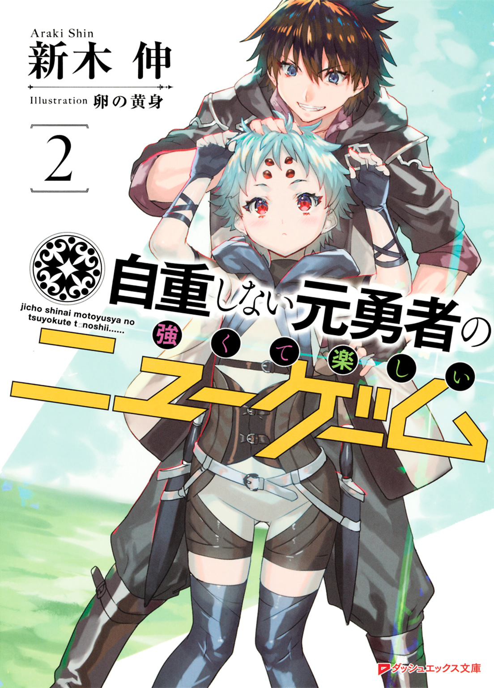
この本は縦書きでレイアウトされています。
また、ご覧になる機種により、表示の差が認められることがあります。
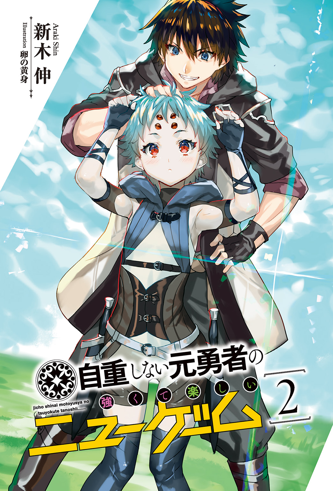
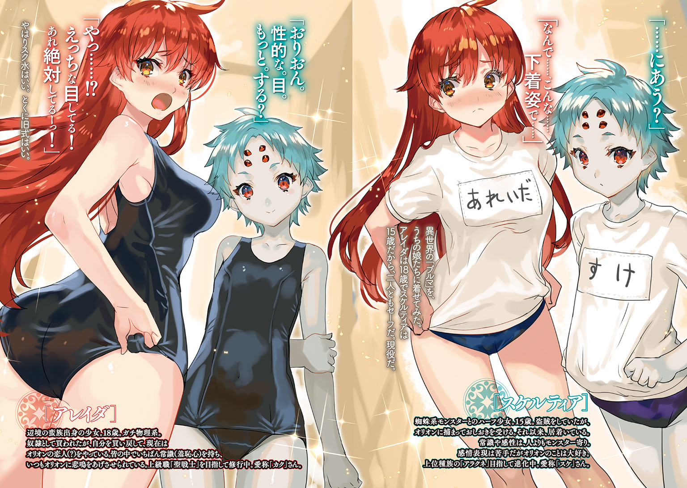
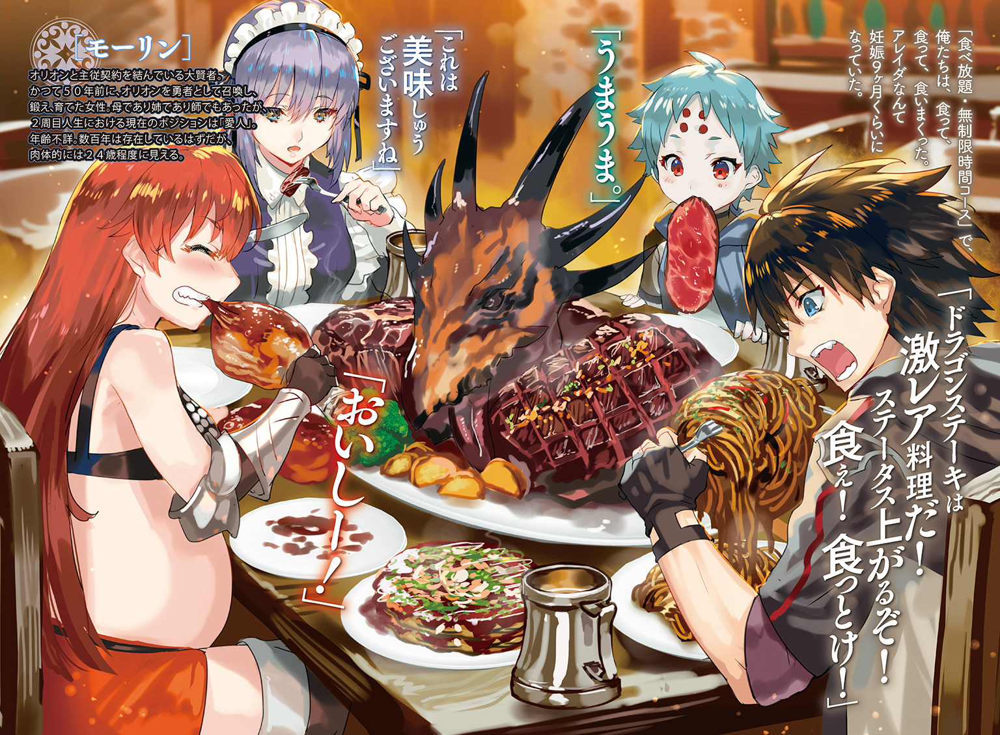
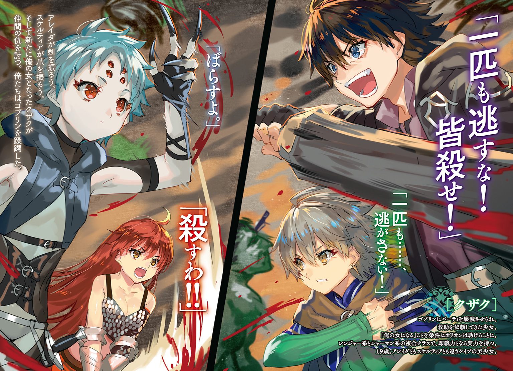
Contents
 ダッシュエックス文庫DIGITAL
ダッシュエックス文庫DIGITAL
自重しない元勇者の強くて楽しいニューゲーム２
新木 伸
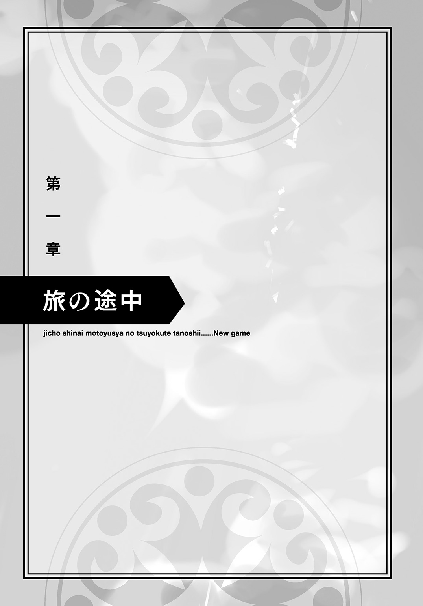
かっぽんかっぽん。旅の途中。 「オリオン、馬には優しいのよね」
かっぽん。かっぽん。
優しいリズムを刻む蹄の音を聞きながら、俺はゆらゆらと、馬車の揺れにまかせる形で、上体を揺らしていた。
こういう状態......。
おじいちゃんであれば、〝船を漕ぐ〟とか言われてしまう状態なのだろうが――。
しかし居眠りをこいているわけではない。
意識のほうは、しっかりと目覚めている。
頭上を木の枝が覆っている。その上には、澄み渡った青空が広がっている。
木漏れ日の下を通っていると、光がさしたり、日陰がきたり。
なんでもない、あたりまえのことなのだろうが――。俺にとっては、そんな些細なことが、ひどく楽しい。
前々世の勇者時代にも、もちろん前世のブラック現代生活にも――。
こうしてのんびりと、道で馬車を走らせたことなど、なかった。
俺は「旅！」――の醍醐味を、一人で満喫していた。
ああ......。本当に癒やされる......。
なにもしないこの時間が......。特に、よい。
時間を〝無駄〟にしている感覚が、本当に、素晴らしい!!
人生はこうであらねばならない。
すべての時間を無駄にして、有益なことを、なんら行っていない、一〇〇％無駄な時間で満たされた人生というのが、たぶん、最高の人生だ。
それが「自分らしく生きる」ということだと、俺は、真にそう思う。
魔王倒すための効率厨の勇者人生だとか。ブラックアルバイトとブラック企業の歯車になって磨り潰されてゆくだけの人生だとか。
そんなのはまったく人生と呼ぶべきじゃない。
というわけで――。
俺は時間を見つけては、なるべく御者台に座るようにしていた。
アレイダやスケルティアやモーリンに御者を任せてもいいのだが、アレイダのやつは「退屈！」とか騒いでうるせえし、スケルティアに任せると、様子を見に行ったときには馬そっちのけで、チョウチョを追いかけていたりするし（蜘蛛の習性）。
御者が馬車を降りて横っちょで、目をキラキラさせて虫を追いかけていても、それでも馬車は、問題なく、道を外れることもなく、目的地に向かってまっすぐ進んでいるのだが――。
かっぽん。かっぽん。蹄の音が響く。
俺は上体を揺らしている。
道は舗装もされていない農道だから、馬車はそこそこ揺れている。
手綱は――。ちょっと脇のほうに縛りつけてある。じつは手綱を引く必要は、まったくなかったりする。
「どうどう」
俺は体を前に倒して、手を伸ばして、馬の尻を叩いてやった。
ほんと。いい娘だった。こいつは。
いい馬を買った。賢くて忠実で、いい牝馬だ。いい娘だ。どこかのじゃじゃ馬とは大違いで――。
「あ。オリオン」
と、そんなことを考えた瞬間――。ほうら。その〝じゃじゃ馬〟が、幌の内側から、にゅっと顔を出してきた。
「なんだ？ もうメシか？」
「ううん？ ......まだだけど」
「じゃあ、なんだ？」
「......えへへ。......隣、座っててもいい？」
「べつにかまわんが」
旅の満喫感が減ってしまうが、まあ、それはいい。
筋肉がついていても、ちょっとは柔っこい女体の感触を、体の片側に覚えながら馬車に揺られるというのも、それはそれで、オツなものだが――。
「オリオン、馬には優しいのよねー」
アレイダは手を伸ばして、馬の尻を撫でた。ぶるるっと、いなないて、馬は喜びを露わにする。
「俺は女には優しいぞ」
「うそばっか」
言われた。考えた。
ふむ。訂正しよう。
「......自分の女には、優しいぞ」
「もっとうそばっか」
アレイダはそう言って――。俺の隣に、すっぽりと収まりにきた。
なんかこいつ、体をくっつけてくるんだよなー。御者台に二人並ぶと狭くなってしまうのだが、必要以上に、体をくっつけてくる。
前にいっぺん、これは抱かれに来たのだろうか？ ――と、勘違いして、そこらの茂みで、木の幹に押さえつけて後ろから「いたそう」とした。
そんなことが、前にあったりした。
おとなしい馬もいいが、じゃじゃ馬のほうは、じゃじゃ馬で――ひいひい、ひひーん、と鳴かせてやっているときには、ちょっとヤバいくらいに、キモチよかったりするのだが......。
その時には、「ちがう！」とか怒鳴られた。グーパンチで殴られた。
わけがわからん。
じゃあ、なんで、横にくるのか？
「なに？ ......不満？」
俺が思いだしていたことを察したのか、それとも別の理由か――アレイダは、そう言ってきた。
「いや。駄犬がまとわりついてこなければ、もっと、のんびりできたなー、と思ってな」
「だ――駄犬っ!?」
駄犬と呼ばれて、なんかショックを受けている。
事実を言ってやったまでなのだが......。
「俺は思った。俺は最近、働きすぎた。もっとゆっくりすべきだ」
「オリオンがいつ働いたっていうのよ？ いっつも、わたしとスケさんに働かせてばかり。自分はダンジョンについてきても、後ろで腕組みして、〝さっさとこいつら死なねえかなー〟とか、ニヤニヤと、悪魔の笑いを浮かべて見ているだけのくせに」
「......おまえが俺をどう見ているのか、だいたいわかった」
「あっ――うそうそ！ でも助けてくれないのはホントでしょ。ニヤニヤと悪魔の笑いを浮かべているかどうかは、ともかくとしても」
「だから働いているだろ。すげえ働いているよ。俺は」
「だからいつ働いたっていうのよ」
「駄犬がサボらないように、しっかり、監督してるだろ」
「......!!」
駄犬は「ひゃん」とも鳴かずに、ただ、沈黙した。
まったく。俺がどれだけ働いていると思っているんだ。
生きるか死ぬか、ギリギリの階層に放りこんでやるのも、じつは、骨の折れることなのだ。
ダンジョンには難易度というものがある。俺の知っているそれは、何十年も昔のものでしかないので、現在の状況を、いっぺん行って、確認してこなければならない。
ついうっかり、間違えてしまって、二人が死んだら――。まあそれならそれでも、かまわないのだが――。べつにぜんぜん、かまやしないが――。本当に――。本当だぞ？
もしそうなってしまったら、数日、寝付きが悪くなってしまいそうなので――。
俺はそうならないように、色々、やっている。
二人をダンジョンに連れて行く前に、俺一人で――あるいはモーリンと二人で、事前調査をしてきている。
難易度を実地で確認してきたうえで、二人が二人だけのパーティで、ギリギリ生還できる階層に放りこんでいるわけだ。
ほうら。働いているじゃないか。
すげえ働いているよ。飼い主様は。
しかし、そろそろ、二人じゃなくて、もう一人ぐらい、欲しいなー。
いや。セックスの相手とか、そういう意味ではなく――。まあ、それもあったりするが――。
いまのところ、自己治療できるマゾい盾系タンク職と、テクニカルに糸で戦う蜘蛛子がいるわけだ。
前衛、中衛が、揃っているといえる。
ここにさらに「後衛」が加われば、パーティとして完璧になるのだが――。
「ほらその目。またイヤらしいこと――考えてる。いやよ。そのへんでだとか。絶対。イヤだからね」
イヤらしいことを考えているのは、それは、おまえなんじゃないのか？
いますぐ馬車を止めてそこらの茂みで木の幹にしがみつかせて、後ろから貫けと――それは誘っているのかどうなのか？
だから抱かれたいのか抱かれたくないのか。隣にやってきて、わざわざ、ひっつきにくる理由を、説明せよ。
それはさておき。後衛には色々と選択肢がある。
まず大きくわけて、魔法系、そして投射系がある。
魔法系は――、攻撃魔法系、治療魔法系、援護魔法系などに、細分化してゆく。
投射系も、弓士が基本だが、弩士もいるし、最近はあちらの世界の文化が混じっているというから、銃士だって、いまはいるのかもしれない。
さらに後衛には、ほかのクラスもある。
召喚したなにかに戦わせる召喚士系なども、分類としては後衛に入るだろう。召喚獣ないしは召喚精霊を戦わせているあいだ、自分の手は空くので、（使えれば）魔法や遠距離武器で援護できる。
リズに一度、クラス一覧の載った目録を持ってきてもらうべきだろうか？
あの街とは、もう物理的に、だいぶ離れてはいるが――。モーリンの転移魔法で、どうせすぐに戻れる。
ギルドの一階ホールに転移点をマーキング済みだ。館の食料だとか、買い出しも、じつはあの街で済ませていたりする。
まあしかし、目録を見て、うちの娘たちのパーティを補完するのに、ぴったりの職が見つかったとしても――。その職の、ちょうどよいレベルの女が見つかったとしても――。
え？ 男？ 入れるわけないだろ。ばーか。
その女が、うちのパーティに入るからには、俺の女となるわけで――。
「セックスが気持ちいいことが、一番大事なことだなー」
「ほうら。考えてた。やっぱいつもアレのことだけ考えてる」
いけね。口に出して、いま、言ってたか。
ま。いっかー。
かっぽん。かっぽん。
馬の蹄の音をＢＧＭに、俺たちは馬車に揺られた。
しかしなんでこいつ。アレイダ。......隣に来るわけ？
昼食時の話題。 「こいつとのセックスって、死ぬほどキモチいいのな」
いつもの旅の道中。いつもの昼食時。
街道の脇に馬車を止めて、テーブルを出して、椅子を出して、タープも張って、木漏れ日の下で昼食を摂っている。
街道をたまに通る他の馬車が、「いいなー」という目を向けてきたりするが、俺たちは素知らぬ顔で、のんびりと昼食を摂っている。
いや......。のんびり、というのとも違うか。
約一名。
一名というよりも一匹というべき？
飢えた獣みたいに、がふがふ、がつがつ、ナイフとフォーク使うの面倒だからもう手づかみで――って勢いで、フードファイトでもやっているかのような健啖ぶりを発揮しているやつが、一名ないしは一匹いる。
じーっ、と、見ていると、うちの娘たちの、大食らいなほうは、はっ、と気がついて――。
「あ......、ちがうのこれは。うちの部族ってフォークとか使わなかったものだから。ついクセがでちゃって」
うちの娘たちのうちの、小食なほうは、としゅっ――と、爪を伸ばして、唐揚げの真ん中に命中させた。爪をひっこめる勢いで、口の中に、ぽーんと入れている。
一つ進化したら、なんか技が増えた。出し入れ自在な爪を得た。
普段はまったく人間の女の子の手にしか見えないのに、爪が伸びたときには、鋼を断ち切る武器になる。
「おまえら二人。晩餐会とかに連れて行くなら、マナーを一から叩き込んでやらないとな......」
俺は大きなため息とともに、コーヒーのカップをソーサーに下ろした。かちゃん、という音も立てない。
昔、勇者をやっていた頃、必要があって、所作一式を叩き込まれた。
モーリン式だ。勇者も半ベソになる怖くて厳しい方式だ。
「晩餐会っ！ ――えっ！ なにっ!? 舞踏会とか！ 連れていってくれるの！ わたし！ 行けるのっ！」
「おまえがいますぐ出られるのは、舞踏会でなくて、武闘会のほうだがな」
あー、どっかの街で武闘会にでも出してみるか。賞金でも荒稼ぎするか。
いいな。こんど大きな街にいったら、考えてみよう。
「ところで......、なんの話だったっけ？」
駄馬が無言でエサ食ってりゃいいのに人間様の会話に参加してくるものだから、なにをどこまで話していたのか、忘れてしまった。
「〝具合〟の話。......でしたように思いましたけど？」
「ああそうだったな」
「具合？ なんの具合？」
駄馬が、もうほんとに、食ってりゃいいのに、わざわざ聞きにくる。
俺はしかたなく、会話の続きをはじめた。
「こいつは、ある意味では、いちばん具合がいいな」
「はへ？ ――わ、わたしぃ？ なんかっ、わたしっ――ほめられてるっ？」
手を体の前に突きだして、てれってれっと左右に振って、あんまり大きく動くものだから、髪まで揺らして――。
アレイダは続きを聞きにくる。
「――それで？ それでっ？ 具合って、なに？ なんの話っ？」
俺は、言った。
「こいつとのセックスは、死ぬほどキモチいいんだな」
「ぶふおぉーっ!?」
アレイダは口の中の物を一斉に噴き出している。
きったねえなー。まったく。
まあ予想はしていたから、射程範囲から自分の皿は退避させてあったが。
「まあ。それはようございました」
コーヒーのおかわりを注ぎながら、モーリンが微笑む。
これ。ホントのほんとに喜んでいるときの感じ。
たまに嫉妬っぽいものを俺は引きあててしまうこともあるが、いったいどういう行為がモーリンの嫉妬を呼ぶものなのか、わざわざ実地に確かめてみるほど愚かではない。
「や......、やめて......」
アレイダはテーブルに突っ伏している。見えている耳が、すごく赤い。
わざわざおまえが聞いたんだろーがよ。夢中で食ってりゃ頭上を素通りしていった話題だが。
「なんでキモチいいのかなー。こいつが頭おかしいからかなー？」
「アタマおかしいのはぜったいオリオンのほうだと思う」
狂気を秘めた女とのセックスは破滅的にキモチいいことがあるのだが......。
アレイダも若干その気があると思う。そのせいだろうか？
「スケ......。は？」
うちの娘の静かなほうが、ぽつりと、口を開く。
これは嫉妬。静かなほう。うんうん。かーいー。かーいー。
「おまえは、ある意味、スリリングだな」
「......すりりんぐ？ ......それ。いいほう？」
きゅるん、と、小首を傾げる。
銀色の短髪をさらりと揺らして訊ねてくる。
捕まえて俺の女にしたときには、ショートカットだった髪が、ちょっと伸びて、ちょっと頰にかかっている。
頰にかかるその髪を、俺は払ってやりたい衝動に駆られた。
一切、自重せず、手を伸ばして髪と頰に同時に触れた。ついでに頭をぐりぐり撫で回す。
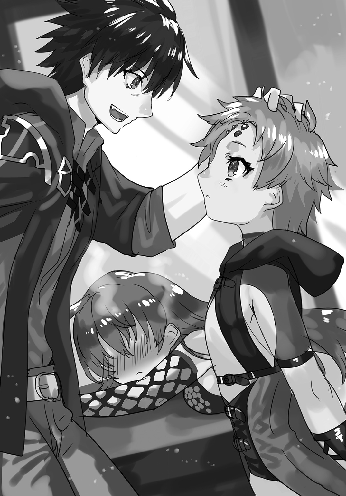
「おまえとはな。おわったあとに、まだ生きてると――あー、俺、生きてるーってカンジがするんだ」
「なにそれ。ぜんぜん意味わかんない」
アレイダが文句を言う。
「背中。傷だらけになってたりするしな」
「うわっ。やだ。スケさんだめよ？ ......そういうのやっちゃ？」
「しかた。ない。」
「えっ？ ......はっ。......しかたがないって、そ、そういう意味っ？」
アレイダが興味津々だ。
「こいつ最近、爪がナイフ並みじゃん？ その気になったら、さくっとやられちゃうわなー。俺」
「うそよ。殺したって死なないくせに」
アレイダが憎まれ口をきく。
「......たべて？ ないよ？」
「食べちゃだめでしょ！ てか！ 食べないよね！ スケさんだめよ？ オリオン食べちゃ？ こんなの食べたら、おなか、壊しちゃうわよ？」
「いやー......、スリリングなんだよなー」
俺は顎を撫でまわした。
スケルティアのときは、アレイダとは別の意味で、燃える。
「え？ まさかほんとに......、そういう意味？」
「蜘蛛のなかには交尾のあとにオスを食べてしまう種もいますからね」
モーリンが俺のカップにお茶を注ぎながら、こともなげに言う。
「そうなのか？」
「ええ」
長い睫毛が伏せられる。
「そういうの、カマキリだけでなくて？」
「蜘蛛にもけっこういますね」
なるほど。本当の本気でそうだったのか。錯覚でもなかったわけか。
......ふむ。
スケルティアの元々のスケルティア種と、いまの種は――なんだっけ？ ハーフ・エレクシスに進化したあと、もう一回二回、進化しているはずだが。
それらの種は、交尾後に雄を食っちまうのか食わないのか、そういう性質があるのか、ちょっと確認しておこうかと思ったが――。
「お聞きになりますか？」
モーリンは賢者だから、当然、知っている。
だが俺は――。
「いや。やめた」
俺はモーリンに、そう言った。
「ちょ――ちょ！ 聞いておきましょうよ！ ――スケさん？ オリオンのこと、食べちゃだめだからね？ めーっ、だからねっ！」
「......たべないよ？ がまん。する。」
「あーっ！ がまんするとか！ いま！ ゆったーっ！」
「うるさいよ。おまえ」
「うるさいとか、ゆわれたーっ！」
アレイダは、ほんと、うるさい。
「オリオン！ あのね！ 貴方の命のことなんだからね！ もっと真剣に真面目に考えてよね！」
「俺の命なんだから、どう使おうと俺の勝手だろ？」
「勝手って......、あのね？」
「俺の女になら、食われてやってもいい」
「あのね。食べられちゃったら、死んじゃうのよ？ さすがに死んじゃうわよ？」
「殺されてやってもいいよ。――俺の女にならな」
俺はスケルティアの頭を手でわしっと摑んだ。髪の下の頭蓋を、わしっと鷲摑みにして、ぐりんぐりんやる。
スケルティアはうっとりと赤い目を細める。
「もう！ スケさんばっかり！ ずるい！」
なにがズルいのか。おまえも、わっしわっしやってほしいのか？
――ああ。殺されてやってもいいっていうほうか。
俺はすぐに理解して、アレイダに言ってやった。
「おまえも。いつ刺しにきたって、いいからなー」
「なんで刺すのよ」
「なんか色々恨んでいるだろー。鍛えかたが厳しい！ とか、駄馬語ないしは駄犬語で、よく、ひひんひひん、きゃんきゃん、騒いでるだろ」
「いないわよ。駄馬語ってなによ」
「人間語でも、よく言ってるじゃないか。〝オリオンのバカ！ ぶっ殺してやる！〟とか。――俺のいないときに」
「い、いってないもん」
「本当か？ 俺の目を見て、もう一度、言ってみるか？」
「いってない！ いってない！ いっ！ いいいっ――いってないよね！ ね!? スケさんっ！」
「いてるよ？」
「うわあぁぁーん！ すこしは庇ってよーっ！」
「うそ。いくないよ？」
「優しいウソのときは、いいのーっ！」
うちの娘のうるさいほうは、ほんと、うるさい。
「ではマスター。アレイダは死ぬほどキモチがよくて、スケルティアとのほうは、死ぬかと思うほどスリリングであるというわけですね」
「ん。そんなところだな」
モーリンのほうにカップを差しだして、俺は言う。
しかしコーヒーのおかわりは注がれない。
モーリンはポットを手にしたまま、穏やかな微笑みを浮かべるばかり。
......うん？
「ではマスター。わたくしとは？」
おお。なんか。いま。モーリンのうしろに......。
ごごごご、とか、そんな炎のようなオーラが浮かんでいる。
......しっかり見える。
だが俺は一瞬も怯まず考えもせず、ただ〝事実〟だけを口にした。
「おまえとは、癒やされる、......って感じだな」
「癒やされる......、ですか？」
賢者でもわからないことがあるのか。メイドのヘッドドレスを載せた頭を、五度ほど傾ける。
その仕草が、妙に少女っぽくて――。大人の女で、しかもモーリンのような普段クールな女がやると、ギャップ萌え著しいというか――。
いまちょっとヤバいくらいに押し倒したくなってしまったが、昼食中なので自粛することにして――。
俺は自重はしないが自粛はすることに決めている。
俺は、重々しく、うなずいた。
「そうだ。おまえのときには、攻めてるっていうよりも、癒やされている、って感じが強くてな」
「そ、そう......なのですか」
「うおお頭おかしいやつとヤってると頭おかしくなるくらいキモチいぜー――だとか。うおやべえマジこれやべえ。うおお俺生きてるってスバラしー――だとか。そういうのと違って。なんか人生このときのためにあったような。......そういう感じ？」
「そ......、そうでございますか。それは......、たいへん......。よろしゅうございました」
モーリンは自分の髪をしきりに撫でつけている。
俺は空のカップを持ったまま。コーヒー、じぇんじぇん、注いでもらえない。
俺は肩をすくめると、アレイダとスケルティアに顔を向けた。
モーリンの照れてるところなんて、滅多にお目にかかれないぞ。――という目を向ける。二人は、ふんふん、と、うなずいて、モーリンに笑顔を向ける。
立木につないであった牝馬が、ヒヒーンと鳴き声をあげた。
いつまでも「馬」とかでは、かわいそうなので――。このあいだ、俺が名前をつけてやった。
あの娘の名前はミーティアだ。
◇
なんの変哲もない、どこにでもあるような――。
俺たちの大切な昼食の時間は、穏やかに過ぎていった。
山賊さんいらっしゃい 「山賊には、手加減するんじゃないぞ」
「いいか？ 山賊という連中は、とかく面倒くさい相手だからな。もし万が一出会ったときには、手加減するなよ」
「なんかいきなり殺しちゃえ、......とか、言われている気がするんですけど？」
とある日の、昼食後の時間――。
屋敷の庭の木の下の、青空教室で、アレイダとスケルティアの二人に稽古をつけてやっていた。
本日の授業のテーマは、「もしも山賊に出会ったら？」である。
ちなみに〝屋敷の庭〟というのは、魔法の馬車の中の亜空間のなか。
この空間。どういうわけだか、「空」がある。表とは別に「お天道様」も見えている。
馬車の外が雨でも中は晴れだったり、中は晴れでも馬車の外は曇りだったり、天気は連動していない。
季節などは特になく、天気の変化を除けば、常に快適な気温湿度となっている。
どういう仕組みになっているのかは――、しらん。
モーリンなら、喪われた太古の魔法技術をすべて解説できるのだろうが、特に興味もないので、聞いたことはない。
「ねえオリオン。本当に殺しちゃってもいいの？ 山賊は？」
「さんぞく。......ころす？ ころす？」
「いいか？ まず前提からいくぞ？ ――街で出会うのは盗賊だ。――海で出会うのは海賊だ。――では、山で出会う連中は？」
「山賊。......だよ。」
スケルティアに、俺はうなずいてやった。
「そうだ。つまり、山で出会った盗賊である以上、そいつらは、山賊だ」
「なんだか、あたりまえのこと、言われている気がするー」
アレイダがぼやく。
デカい尻の下にある丸太の椅子を、いっぺん蹴っ飛ばしてから、俺は話を続けた。
「山賊が厄介......っつうか、愉快......なところは、人里離れたところで活動しているせいで、やつらの感覚は、すっかりおかしくなってしまっているということだ。盗賊なら、ギルドがだいたい仕切ってる。海賊なら仁義が通用したりもする。場合によっては手を組むのもありかもしれない」
俺は木陰に置いた黒板を前にして、手を後ろに組みながら、行ったり来たりしながら話した。
アレイダとスケルティアはすっかり生徒の顔。
ふむふむ、とか、うなずいていたりする。
「――特に海賊の場合。頭目は美人であるケースが多いしな」
俺が真面目な顔でそう言うと――アレイダのやつが、ずっこけていた。
丸太の椅子から、見事に転がり落ちている。大袈裟すぎ。
うむ？ おかしいな？ そんなずっこけるようなことを、話したか？
二周目人生においては、すごく大事なことを言ったはずだが。
「んで。山賊だ。こいつらは金ナイ度胸ナイ女ナイ、の、三ナイだ。度胸と器量がないから、徒党を組む。土地勘のある山に引きこもって一歩も出ないで、通る商人や旅人を襲う。金がナイから仕事ぶりもセコい。そして――。おい、そこでまだずっこけてるアレイダ？ もうひとつ〝ナイ〟のは、さて、なんだったかなー？」
「ええと......、な、なんだっけ？」
うちの娘たちのよく聞いているほうが、うちの娘たちのぜんぜん聞いてないほうに、こしょこしょと耳打ちしてやっている。
「え、えと――、女？ ......だったっけ？」
「そうだ」
俺は重々しくうなずいた。
「山賊に捕まるとなー。悲惨だぞー？」
「ど......、どうなるの？」
「うむ。後ろから前から、責められるな」
「ぐえっ」
「一対一にして――なんていう贅沢は、聞いてもらえないな。複数人が群がってくるな」
「ぎゃっ」
「表から裏から、あるいは両方同時にだとか。遠慮もない」
「り、りょうほう？ 両方ってなにー!? ――お、おもて？ う、うらっ？」
ああそういや。こいつとのセックスはノーマルばかりか。表とか裏とか両方とか、知らんのかも？
「壊れるまでご利用されること請け合いだな」
「ううう......」
「そして最後には、首を絞められたままヤられて、そのまま逝き殺されたりもする。〝えっひゃっひゃ。おいこれいいぜー!! 首を絞めるとアソコも締まるぜー!!〟とかお下品な感じで、ようやく、ご利用を終了してもらえる」
「うわぁ......」
アレイダがビビっているのが面白くて、ついつい、下品な話になってしまった。
「......おほん。まあそんなことにならないように、だな。おまえたちには、山賊と出会ったときの心構えを――」
「心配してくれてるの？」
「ん？」
「わたしのこと、心配してくれてるの？」
「ん？」
アレイダのやつが。なんか。キラキラした目を向けてくる。
「......おほん」
俺は咳払いをひとつした。
なにか妙な誤解が生じているらしい。
俺は別に心配などしているわけではなく――。
うん。そう。
俺の女がそんな目に遭うことを、俺は到底容認できん。――というだけである。
うん。そう。
「おまえの。......じゃなくて、おまえたちの、だからな。......おい。スケ。おまえも、きーてるのか？」
「ん。さんぞく。ころすよ。おりおんの。ところ。かえってくるよ。」
うちの娘たちの健気なほうは、鼻を鳴らして、そんなことを言った。
俺はちょっと、じーんと来た。
「じゃあちょっと立て。複数対一の戦いかたを教えてやる」
「できるわよ。このあいだ何十人も皆殺しにしたし」
温泉街のときの戦いの話か。
悪徳領主の配下のゴロつきどもを、何十人か倒したっけ。
「おまえらは、二人のチームプレイっつーか、ハメ技に特化しすぎ。それに慣れすぎ。スケと一緒じゃなくて、一人だったら、どーすんだ？」
「普通にやるんだって、できるわよー？ 三十人かそのくらいまでなら」
うちの娘たちの調子くれてるほうが、そう言った。
「ほほう？」
俺は目を光らせた。
ぱちんと、指を鳴らす。
木の周囲の地面に、土の山が生まれた。土塊は、いくつも無数に盛り上がっていって――。
それぞれが、手足を持つ、人の形へと変化した。
「うわぁ......、なにこれ？」
「土傀儡だ」
俺の、ぱちんと指を鳴らす合図によって、遠くにいるモーリンが、家事のついでに魔法を唱えただけだが――。
べつに『勇者』のジョブでも、この魔法は使えるぞ？ だいたいなんでもできる、というのが、勇者というジョブの特性なので。
ただ取得にかかるコストがあまり安くはない。せっかく全魔法系統を修めきっている「賢者」がいるわけだから、任せることにしているだけで――。
やっぱ......。こんど、取得するかな。
モーリンと二人でラストダンジョンに行って小一時間も戦えば、必要なスキルポイントを得るだけレベルアップもするのだろうし。
「今日はこれと戦ってもらう」
「いいわよ」
アレイダが剣を抜く。スケルティアが手を構える。
「ばか。一人ずつだ。なに聞いてんだおまえ」
俺はアレイダの背中にケリを入れた。見事な足形が背中の肌のうえについた。肌と泥のコントラストがちょっとエロティック。
「ちょ――！ なんでわたしだけ!? わたしだけ蹴られるの!? スケさんだって構えてたよね！ いま構えてたよね！」
うちの娘の賑やかなほうは、ほんと、うるちゃい。
アレイダが、ぎゃーぎゃーと騒いでいる間にも、都合、三十体ばかりの土傀儡は、周囲を包囲して、じりじりと包囲を狭めつつあった。
こいつらには知性はなく、召喚されると、手近なものを襲いはじめる。命令を与え、その者だけを襲わせることもできる。
「まず。おまえからだ」
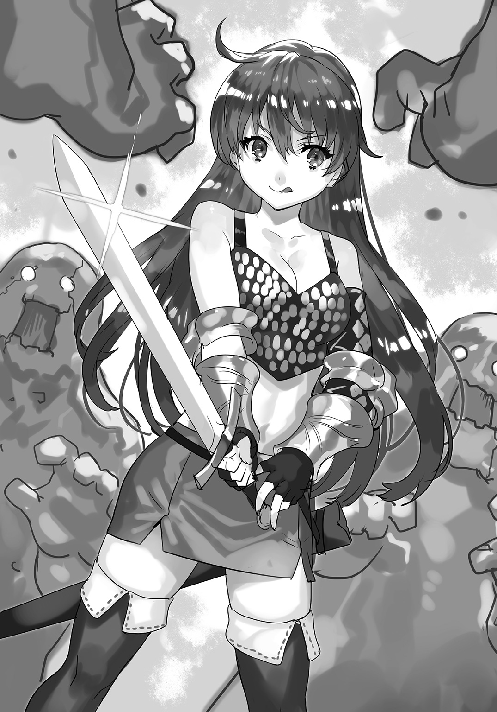
俺は指を差した。
標的ポインタを、アレイダに固定しようとしたとき――。
――ひひ～ん！
「ん？ ミーティアか？」
「え？ なに？ ミー......？」
「ああ。馬の名前な」
このあいだつけてやった。うちの馬車牽き牝馬の名前だ。女の子らしい、いい名前だと思う。
「なにそれ！ わたしカクさんとか呼ばれてて！ なんで馬に！ そんなちゃんとした名前つけてるの！ ひどくない!? ねえ！ ひどくない!?」
うちの娘のうるさいほうは、ほんと、うるちゃい。
「外でなんかあったみたいだな」
命令を与えなかった土傀儡が、二、三体、ふらふらと近づいてくる。適当に殴って爆散させる。
ちなみに高レベル勇者のパンチだから爆散するのであって、レベル１の戦士とかだと、一対一でも勝てるかどうか怪しい。土傀儡はそのくらいの強さがある。山賊と同等ということで、選んだわけであるからして――。
「――ちょっと訓練中止な。見に行ってみるか」
◇
俺たちは、馬車を出た。
そこにいたのは――。
「あれ？ この人たち、なに？ 大勢で......？」
ぽかんと言っているアレイダに、俺は頭を抱えたくなった。おまえはさっきの授業でなにを聞いていた？
大勢の男たちが馬車の周りにいた。
あまりいい服は着ていない。服装はまちまち。全員、なにがしかの武器を携行しているが、その武器は、山刀や狩猟ナイフといったものの範疇を大きく逸脱している。戦闘用か人体破壊用って感じ。
「お......？ おまえら、いったい......、どこから......？」
男たちのうちの一人が、そう言った。
馬車の中は亜空間へと繫がっているが、それは、所有者である俺が登録した者にとっての話。招かれざる者にとっては、本当に単なる馬車にしか見えない。幌の中をのぞいても、がらんとしてなにもない内側が見えるばかりだ。
すでに覗いて、誰もいないことを確認したのだろう。
放置された馬車だと思ったのだろう。
そして盗んで売り払おうとでも思ったのだろう。
別の男が馬の近くにいた。
「いい馬じゃねえか～。馬車はゴミだが、この馬は高く売れそうだぜ～」
「汚い手でさわるな」
牝馬――ミーティアの尻を、男が薄汚い手で撫でまわしていた。
俺は長剣を抜くと――。
その手を、すぱんと切断した。
肘から先が、くるくると回転して地面に落ちる。
腕を斬り落とされた男は、うおー、とか、ぎゃー、とか、腕が腕がっ俺の腕がっ、とか、地面を転げ回って騒いでいるが――。
俺の関心は、もっぱらミーティアの怯えをなだめてやることに向かっていた。
「よしよし。――よく我慢したな。よく知らせてきたな。もう安心しろ」
「ちょ――！ ちょ！ ちょちょ！ なにやってんの！ なんでいきなり人様の腕！ 腕っ！ 腕えっ！ ――斬り落としちゃってんのっ!!」
アレイダが騒ぐ。
「腕がっ！ 俺の腕があぁぁ――!!」
男はもっと騒ぐ。
「あーもう！ うるさい！ いま話してんの！ 静かにして!!」
アレイダに一喝されて、男は――。
ナミダをこらえて口をつぐんだ。先のない腕を抱えてごろんごろん。仲間たちはひどいもんで、止血もしてやろうとしない。
まあこいつらの団体性能というのは、こんなもん。徒党を組んでいるというだけで仲間意識があるのかどうかも、怪しい感じ。
「さっきからなにを騒いでいるんだ？ おまえは？」
俺は長剣で自分の肩を、とん、とーんと叩きながら、アレイダに聞いた。
「人様の腕をいきなり斬り落としてんじゃないって言ってんの!!」
美しい赤毛を逆立てる勢いで、アレイダは言う。
指差しているのは、ごろんごろん、無言で転がっている犠牲者その一。
「あァ？」
俺はヤクザみたいに聞き返した。
何を言っているのか。何でこいつが怒っているのか。まるでわからない。
「......おまえ。......ひょっとして？ ......まだ、わかってない？」
「なにをよ!! まったく!! ――ひどいやつ、ひどい男だって、そう思ってたけど！ いきなり人の腕斬っちゃうとか！ そこまでとは思っていなかったわ!!」
あー、やっぱりー。
うちの娘のうちの賢いほうに目を向けると――。両手を水平に伸ばしたポーズが返ってきた。
うちの娘のうちの働き者の、大きな尻に目を向けると――。ひひひん、と、いななきが返ってきた。
「さっき授業でやったばかりだろ？ ......街で出会うのは盗賊。海で出会うのは海賊。......では？ 山で出会うのは？」
「山賊よ」
よくくびれた腰に手をあてて、アレイダは、〝いばりんぼ〟のポーズで言った。
「じゃ、こいつらは？」
俺は、周囲の連中を顎で示した。
もうすっかり武器を抜いて、身構えている。目をギラつかせている。
ちょっと露出度の高い格好のアレイダの肉体を見て、ものすご～く、目をギラつかせている。
こんな山奥を根城にしている連中が、いったい何日、女抜きでやっているのか......。考えたくもないし、想像もしたくない。
「こいつらは？ なんだ？」
俺はアレイダに、もう一度聞いた。
「......えっ？ え、ええと......、さ、山賊っ？」
「あたーり」
そう正解と認めたのは、俺じゃない。
周囲を取り巻く男たちの一人が、べろお～りと、曲刀を舐めている。
舌が切れているが、おかまいなし。
アレイダの身体を舐め回すように視姦して、ぐへへ、と笑った。ヨダレを垂らしてる。
俺は、ぱんぱん――と、手を打ち合わせた。
「じゃ。授業のつづきな」
「えっ？」
「最初は、アレイダ――おまえからな」
「へっ？」
間抜け顔を晒して、自分の顔を指差しているアレイダに、俺はそう言った。
同じように自分の顔を指差しているスケルティアには、「おまえはまた次な」と言ってやる。
「どうせなら、土傀儡じゃなくて、〝本物〟――のほうが、練習になるだろ」
「えっ？ あっ？ ええと......、本物って？ えっえっ？」
うちの娘たちの頭の回転の悪いほうは、いっこうに飲みこみが悪い。
スケルティアなど、自分の番じゃないことに、ぷうと頰を膨らませている。おっ。めずらしく無表情少女が感情を表している。そうか。そんなに殺りたかったかー。
だが今回はアレイダの番だしな。
「山賊に捕まると――特にお前みたいな、若くて美人で〝具合〟の良さそうな女が捕まると、どうなるんだったかな？」
俺は教師か教授か、という口調で、学術的にそう聞いた。
「やめて......、その......〝具合〟とかってゆーの......」
「山賊に捕まると？」
「えっと......、あのっ......、う、うしろから......、まえから......だったっけ？」
アレイダが耳まで真っ赤にさせながら、そう言った。
ヒャーッヒャッヒャッ！
近くの男が奇声を張りあげる。「その通りだぜー！」とかいう顔で、動物みたいに騒ぐ。
「――ちょっと静かにしてて!!」
アレイダが顔を向けずに腕を横に突きだすと、下品な男は、交通事故みたいな勢いで吹き飛んでいった。
マスターレベルのすこし手前の、高レベルのクロウナイトだ。岩ぐらいは素手だってカチ割れる。
男は――あれはたぶん、永久に静かになった。
「あ、あと......、表から......、裏から......、って！ だから裏ってなんなのよ！」
ぎぬろ、と、男たちを睨んだ。
「大人数で、壊されちゃうまでご利用だとか......、冗談じゃないわっ！」
燃える瞳を、男たちに向ける。
男たちは、手をかざして、首を左右に振りたくって――。
やらないやらない、しないしない、とか、必死になってサインを送っているが、このモードに入ったアレイダは、人の話なんか、聞きゃしない。
そういえばクロウナイトのジョブ特性に「狂気を力に変える」っていうのがあったっけなー。そこからさらに闇落ちしていってファナティック・ナイトに進む道と、暗黒面への誘惑を昇華させて聖なる力を振るうクルセイダーとに分岐するんだっけなー。
「絶対、させない。絶対、やらせない......」
アレイダは据わった目になって、そう言った。
「わたしに......、そういうことしていいのは......っ！ オリオンだけなんだからーっ!!」
これには俺がちょっと赤くなってしまった。
◇
アレイダは、全員、ぶっ殺した。
三十数名。迷うことなく大虐殺。
土傀儡でやる実戦よりも貴重で有意義な、「本物で行う練習」が積めた。
うむ。よきかな、よきかな。
峠を一つ下っていって、山の向こう側の国に降りてみれば、やはりやつらは山賊だったらしく――。若干の報奨金が手に入った。アレイダがすんごい顔して「いらない」とかゆーので、俺がありがたく、懐へとしまった。
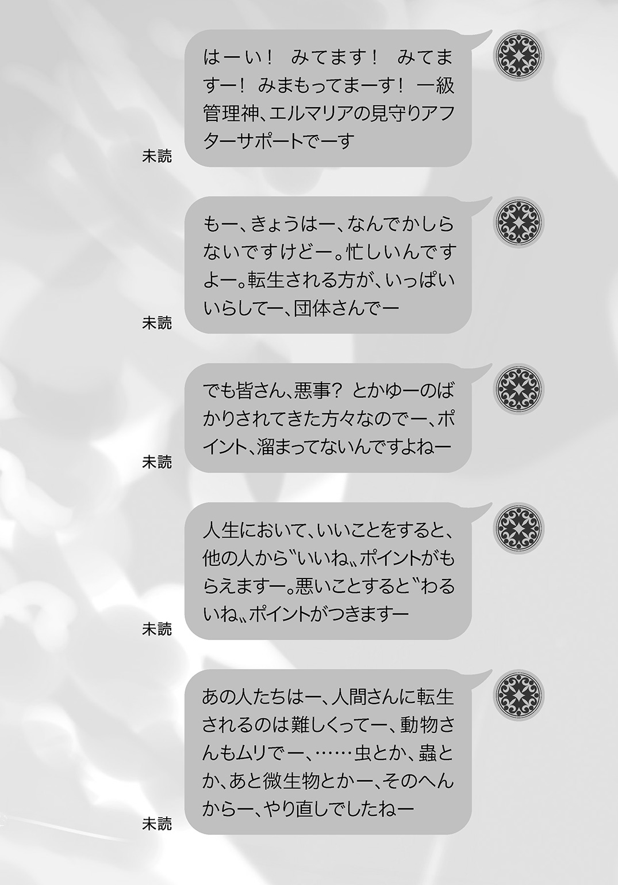
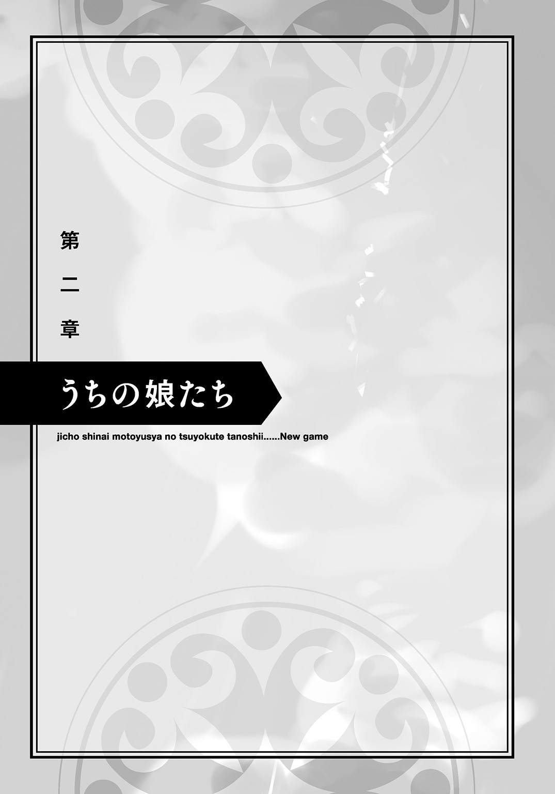
口説き文句の練習 「好きって言えよ」
「好きって、言えよ」
廊下の壁に、ドンと手をつく。
アレイダのやつの逃げ場を、まず封じておいて――。
息が掛かるほどの距離から、殺し文句を囁いた。
「な、な、な、なっ――なにっ！ な、なんなのっ......!?」
アレイダのやつは、めっちゃ、動揺してる。
これで平静を装っているつもりなんだろう。しかしぜんぜんだ。
最近、こいつのポンコツ具合が、カワイイと思えるようになってきた。
やべえ。ちょっとムラムラしてきた。このまま壁に押さえつけて犯したくなってきた。
だが〝そういうつもり〟ではじめたことではないので――。ここは自粛することにする。
俺は、また囁いた。
「カワイイな、おまえ」
「なっ――！ なにっ？ い、いつもはゼッタイそんなこと言わないのに？ ......へんよ？ オリオン？」
ありゃ？ 真顔になりやがった。
失礼なやつだな。
俺が口説き文句を言うのは、そんなにおかしいか？
そりゃ、おまえなんかを口説いたりはしないが。街の女なら普通に口説く。
これはそのための〝練習〟だった。
身近にいる俺の女のうちで、こいつがいちばんチョロい。
モーリンは、あれは、だめだ。ハイレベルすぎる。
あれを赤面させるとか、落とすとか、人類にはちょっと荷が重すぎる。元勇者にとっても、だいぶ難しい。
たまになんらかの偶然で、俺の行動が彼女のツボに決まったとき、照れ顔の一つくらい見せるのだが......。モーリンのツボは、どうもよくわからない。狙って突くのは、限りなく無理ゲー。
そしてスケルティアはといえば――。
無口無表情を絵に描いたような娘で――。感性が人と若干違う。種族的にも、ハーフなんちゃらスパイダーなので、どっちかっていうと、虫寄り、昆虫寄り、蜘蛛寄り。
そこがまたいいんだが......。人とは違うスリリングなセックスを味わうことができるわけだが。
ラブ・アンド・ピースの世界の精霊と、セックス・アンド・ダイの蜘蛛少女と、そんな二人と比べれば、引きニート駄犬の、ポンコツ美少女のほうが、まだ一般人に近いわけで――。
だから「口説き」の練習台として、アレイダを選んだわけだった。
前の街で温泉宿のマダムを口説いたとき――。
自己採点の点数は、満足のいくものではなかった。
そこに関して、若干の経験値の不足は認めなければならないだろう。
前々世のときには、なにしろ多忙な勇者人生だった。街の少女や女性たちには「勇者様ーっ♡」と、モテモテだったが、実際には女性とはまるで無縁の人生だった。
パーティ内には美少女も美女もいたが、最も身近かつ想いを寄せていたモーリンにさえ手を出すこともできなかった。
そして前世においては、ブラックバイトとブラック企業に磨り潰されてゆくだけの毎日。やっぱりこちらでも、そちら方面の経験値はあまり積めていない。
――てなわけで。
さっそく、アレイダで経験を積むことにする。
「ねえ？ オリオンってば......？ 今日、なんか変よ？」
「俺が変なのだとしたら、それはおまえのせいだな」
「う、うえっ？ わ、わたしの......？」
アレイダはまばたきを繰り返している。
いまのセリフ。自己採点だと五〇点を切ってたんだが......。
アレイダの反応を見る限り、かなり〝アリ〟だったらしい。
ああ。なるほど。
現代世界では〝物語〟が発達しているから、定番セリフが鼻についたりするわけだが......。
この異世界では物語はあまり普及していない。テレビもラジオも、当然、ネットも存在しない。
演劇だか、オペラだか、そんなものならあるらしい。観に行ったことはないが。
演目の一番人気は『勇者』の活躍の物語らしい。絶対、観に行かねー。
小説や漫画みたいなものは、あるのかどうかわからない。アレイダぐらいの年頃の女の子が読んでいるのを見たことはないので、たぶん、ないのだろう。
あったとしても、ひどくマイナーなのだろう。
勇者が魔王を倒して平和になったとはいえ――。
この世界は、日々、刺激に満ちあふれている。
人が死んだりモンスターが暴れたり人が食われたり、そのモンスターが討伐されたり、日々、生きるか死ぬかで、割合と忙しい。
物語などに耽って〝暇つぶし〟をしなければ、退屈で死んでしまう――なんていう裕福かつ恵まれた環境にいる人間は、そう多くはないということだ。
ということで――。俺は――。
バンバン、歯の浮くようなセリフを並べ立てることにした。
「おまえの瞳のなかに星が見える」
「え？ ええっ......、ほ、星って......、そんなぁ」
「おまえは俺の太陽だ」
「え？ やっ......、あのっ......、そ、そんなこと言われてもっ」
ちょろい。ちょろすぎる。
俺はつづけて、チョロ駄犬に囁いた。
「おまえ。綺麗になったな」
「え？ ええぇ......っ？」
「俺のところに最初に来たときより、ずっと綺麗になった」
「そ――それは言わないでぇ。あ、あのときは......、だって......、ずっと檻に閉じ込められていて......、汚れていたからっ......」
ん？
ああ。そっちの意味で誤解したわけか。
たしかに奴隷として売られていたこいつを買ったときには、すっげー、汚かったっけなー。
「そういう意味で言ったんじゃないんだが」
俺は笑いながら、アレイダの赤い髪に手で触れた。
あのときは、触るの嫌だったけどー。
いまはぜんぜん、むしろどんどん触りたい感じー。
髪を撫でられているだけなのに、アレイダは目をつむって身を震わせている。
「ふわん」
そのうちに、こらえきれなくなったのか、声を洩らす。
色っぽい声出すなよ。屋敷の廊下だが、襲いかかりたくなるじゃないか。
だが〝そういうつもり〟ではじめたことではないので――。ここは自粛することにする。
触れていると前戲になってきてしまうので、俺は名残惜しかったが、髪から手を離した。
壁に――ドンと、その手を突いて、頰の両側を押さえこんで、逃げられないようにする。
あくまで、言葉だけで攻めてゆく。本日のお題はそれだ。
「ばかだな。綺麗になったっていうのは、魅力って意味だ。おまえの積み重ねてきたことが、自信となって――それが〝魅力〟として外に出てるって言ってるんだ」
「えっと......、あのっ、そのっ......、それってつまり......、褒めてくれてるっ？」
「ああ。綺麗だぜ」
「ふわわぁ～......」
アレイダのやつは、なんか変な声をあげた。
感嘆の声なのやら、イッちゃってる声なのやら。
しっかし......。
チョロい。ほんとチョロい。
「おまえ。チョロいな」
やべ。口に出ちまった。
ミス。ミス。
うっかり。うっかり。
「ちょ――！ なによ、それ!?」
途端に目つきが鋭くなる。
あはは。俺はほんとはこっちの目のほうが好きなんだけど。駄犬チョロインの、とろけきった乙女の目より、いまにも嚙みついてきそうな野性の目のほうが――。
いまは口説き文句の実践練習だ。すぐにリカバリーしないとなー。
「自分のキモチに素直になれよ。――期待してんだろ？ 可愛がってやらねえぞ？」
「期待なんて――」
「してないっていうのか？」
俺は顔をぐいっと近づけて、凄んでみせる。
こいつが、俺に、惚れているということを――俺は一ミリも疑っていなかった。
単なる事実として受け止めていた。
そして同時に、こいつは俺に、「そのこと」がバレていないと思っている。
まったく、可愛いものであった。
股まで開いておいて、好きじゃないとか――そっちのほうが、むしろ驚きだ。
娼婦だって相手を愛する。――一時だけは。
「......や」
「や？」
「やさしく......、してくれるの？ 素直に......、なったら？」
「ああ。おまえが可愛い女でいればな」
チョロい。ほんと。チョロい。
「俺に甘えろよ。......甘えたいんだろ？」
「あ......、う......」
いやいやでもするように、アレイダは首を左右に振る。
いったいなにを抵抗してんだか。さっさと楽になっちまえよ。
「か......、かわいい......ほうは、自信ないけど。でも素直になるほうだったら......」
「なるほうなら？」
俺は、ここを先途と、踏みこんだ。
「が、がんばるっ......」
「ぷっ......」
俺は、たまらず、吹きだした。
素直になることを「頑張る」なのか。そこまでか。それほどか。
どこまで強情で、どこまで意地っ張りなんだか......。
「くっくっく......。あーっはっは！」
「ちょ......、な、なによ？ なに笑っているの？ ......わたし、なんか、だめだった？」
俺はこのへんで実践練習を終えることにした。
「これな。〝好きって言えよ〟――ゲームな」
「はぁ？」
「口説く練習。おまえでやってたわけ」
「ええと？」
アレイダは、まだわかっていないというカオ。
「おまえに好き好きって言わせたら、勝ち。......だけど。......ははははっ！ おまえには無理だ。頑張んなくていーぞ。はっはっは！」
俺は笑った。膝をバシバシ叩いてウケていた。
「あの......えっと、確認するけど。つまり、わたし......。からかわれていた......って、そういうこと？」
俺はヒーヒー笑っていて、答えられる状況になかった。
「じゃあ......、つまり......、さっき言ったこと......、みんなウソ......って、そういうこと？ かわいい、だとか......、きれい、だとか......」
アレイダの髪がざわざわと騒いでいる。殺気が洩れだしている。
そこについてはウソはない。
こいつはかわいいし、綺麗だ。――野性的な意味において。
いまにも俺をぶっ殺そうというぐらいの気迫が満ちてゆく。
目が爛々と輝きを放っているように見える。
やべえ。欲情した。
このアタマおかしい女とのセックスは、めちゃくちゃ気持ちいいことを、俺は思い返していた。野性の雌との交尾は、鋭い快楽で、最高にいいのだ。
「ぶっ殺――!?」
殴りかかってきたアレイダのパンチを、俺はひょいと避けた。
そしてアレイダを〝お姫様だっこ〟で抱えあげる。
「――って！ ちょ！ きゃっ！ な――なにっ!? おろして！」
「だが断る」
俺はそう言った。
そしてそのままアレイダを〝寝室〟へと運んでいった。
「ちょ――！ なに!? なんなのっ！」
ごちゃごちゃとうるさい俺の女を、そのまま、ぽーんとベッドに放りだして――。
◇
このあと滅茶苦茶セックスした。
好き好き好き――と、うわごとで、何度も泣き叫ばせてやった。
ブルマ 「これ......、ちょっと恥ずいんだけど」
「ブルマだ」
穏やかな昼食の風景。
ずっと押し黙っていた俺は、腕をほどくと、開口一番、そう宣言した。
「はい？」
「？？？」
「ぶるま、でございますか」
三者三様の反応が返ってくる。
「うむ」
俺は重々しく、うなずいて返した。
「ブルマってなによ？ わけわかんないわよ」
「おりおん。すき？」
「ああ。好きだ。熟考の末に辿りついたわけだが、俺はだいぶ、ブルマが好きなようだ。最近、なにか足りないなと思っていたのだが......。そうだ。ブルマだ。ブルマ成分だ」
「だからブルマってなんなのよ？」
「それ。たべるもの？」
「はっはっは。スケ。おまえは食うことばかりだなぁ。残念ながらハズレだ」
「......じゃあ？ なに？」
うちの娘の殊勝なほうは、小首を傾げる。真剣に考える顔つきをする。
「なんでわたしには答えてくんないの!?」
「メンタル弱いなおまえ。放置プレイ数秒で、もう半ベソか」
「は――半ベソなんてかいてないもん！」
うちの娘のメンタル弱いほうは、手の甲で目元を擦る。かいてんじゃん。
二人と会話しているあいだ、モーリンはずっと、中空を見上げるような仕草をしていた。
「衣類――の一種、とのことですね」
正解だが......。
「おまえ。いつも疑問なんだが。......それは、いったい、なんなんだ？」
「なにがでしょう？」
「そのどこかを見てる仕草だが」
「おや。見ていましたか」
意識外の動作がモーリンにもあったとは。ちょっと驚きだ。
「マスターの元いた世界に、わたくしと似た者がおります。そこへ問い合わせております」
「ほー」
「元いた世界って？」
「似た者って、なんだ？」
アレイダがなにか言っていたが、無視だ。
べつに隠すことでもないのだが、うちの娘の頭の悪いほうに理解させるのは、大変そうだ。
「平行世界における同一存在......、で、マスターは、おわかりになられます？」
「ああ」
なるほど。そういったものか。
じゃあ向こうのモーリンも、世界の守護者かなにかなわけだな。
そしてクールな完璧超人なのだな。
「わかんないわよ！」
「まあ親戚みたいなものでしょうか」
それはだいぶ違うように思うが......。アレイダにわかるようにするには、そのへんの説明が限度だろう。
「向こうも賢者か？」
「いえ。侍従、兼、メイドをやっているようですね」
「ほほう」
なるほど。それでメイドという概念、およびメイド服が、こちらに輸入されてくるわけか。
「ねえ？ なんの話ー？」
「いまあちらは夕食の支度の最中に答えてくれたわけですけど。――ブルマとは、向こうの世界における体操服の一種であるのだと」
「うむ。そうだ」
俺は重々しくうなずいた。
「だから、なんの話ー？ なんの話ーっ？ ねえわかるように言ってよー！ のけもの禁止ーっ！」
うるせえな。こいつ。
ぴょんぴょん跳ねてアピールしているアレイダに、俺は言ってやることにした。
「その体操服をおまえに着せようって話だ」
「うえっ!?」
「なんだよ？ 嫌なのか？」
「いや、まあ......、体操服なら......、着るけど。......でもオリオンが言うんだから、ぜったい、変な服なのよね......？ えっちいやつ......とか？」
「普通の女学生の服だぞ」
「じょがくせい？ ......って、なに？」
そういえば、この世界には「学校」ってないんだっけ。
ないこともなく、あることはあるのだが、王族だの貴族だの金持ちだのが通うものと相場が決まっている。庶民の子供は学校なんて通わない。
「ああそうだ。モーリン」
「なんでしょう」
「どうせなら、〝スク水〟も問い合わせておいてくれ。ブルマがあってスク水がないというのは、それは、片手落ちというものだ」
俺はそう言った。断言した。断定した。
「すくみず、ですね」
「またなにか禍々しい響きの名前の服がーっ!?」
アレイダが騒いでいる。
ほんと。うるさいな。こいつ。
「......。旧式と新式、どちらになさいますか？ ......と、質問が戻ってきましたが」
ぬう。
なんかしらんが、向こうのモーリンは達人だな。
そこに着目するかよ。
「無論。旧式だ」
俺は、重々しく答えた。
他にない。
事実上。選択肢など存在しない。
「......」
モーリンはしばらく中空を見上げていた。
表情の停止したその顔が、なんだかちょっと怖い。
「......。はい。デザイン。いただきました。これなら割とすぐに作れそうですね。そんなに凝ったものでもないですし」
戻ってきたモーリンは、自分のメイド服を、ぴっと引っぱりながらそう言った。
◇
「早い......、すごい......」
モーリンが縫う。縫う。縫う。
ミシンよりも早く正確に手で縫っている。
しまいには二本の針を、左右それぞれの手に持って、布の裏と表、両側から縫いはじめる。
布は空中に浮かんだまま。
あまりの早業に、落下することさえ許されずにいる。
紺色の布地が、カットされ縫われ、あっという間に仕上げられてゆく。
そしてこちらは上着か。白い布のほうも、あっという間に形を整えられてゆく。
「はい。できあがりです」
何着かの女学生用体操着が、ぽん、と置かれる。
「同じ素材はこちらにはありませんので......。ナイロン？ でしたか。それと似た感触の生地で代用してありますが。......いかがですか？」
「うむ。完璧だ」
「恐れ入ります」
ブルマーと対となる白い上着もセットになっていた。
その胸のところには、名札も縫い付けられていて――そこには「あれいだ」と「すけるてぃあ」と、名前まで書かれていた。
しかも〝ひらがな〟で。
これもきっと向こうのモーリンの仕業だな。
うむぅ......。わかっていらっしゃる。
「アレイダ。おまえ。トシいくつだったっけ？」
俺はうちの娘のトウの立っているほうに、そう聞いた。
「な――？ なによ？ なんでそんなこと......」
「答えろ」
「じ......、一八よ。あなたの一コ上......、なんだからねっ？」
「ギリだな」
「な、なによギリって......？ なにがギリなのよ？ ねえちょっと？」
もう一個上なら、ナンチャッテ女子高生になるところだが......。一八歳なら、現役でも三年生であれば、あり得る年齢だし......。
「スケ。おまえは幾つだ？」
こんどはうちの娘の若いほうに、そう聞いた。
「......？」
「トシ。年齢。生まれてから巡っていった季節の数な」
こちらの世界の一日と一年の長さは、向こうの世界と大差ない。
日の出と日没、季節の移り変わりで時間を計る風習は同じだ。人が人である以上、そういうところは変わらない。
スケルティアは、指を折りながら数えていって......。
「冬......。一五回......。きたよ？ さむかたよ？」
「そうか。じゃあ一五歳くらいだな」
「スケ。......は。一五さい？」
「ああそうだ。一五歳だな」
俺がうなずいてやると、スケルティアのやつは、にこっと嬉しそうに微笑を浮かべた。
お。笑うようになったんだ。
「へー。スケさん。一五歳だったんだー。ちょっと年下だったのねー。カワイー」
俺は思わず吹き出しそうになった。女学生ってのは、こっちも向こうも変わらないもんだな。向こうの女学生も、なんでも「カワイー」と言ったりする。
「こっちもギリか」
「だからなによ？ ギリって？」
一五歳なら高一でもあり得る年齢だ。
おや？ よくよく考えてみれば、これは条例違反じゃないか？
異世界に条例は関係ないがなっ!! はっはっはーッ!!
「よし。おまえら。着ろ。〝なんちゃって〟――ではないから。モノホンでセーフだから」
「あいかわらず、なに言ってるのかわからないけど......。わたしたち、着ること、もう確定してんの？ それって？」
「当然だ」
俺は言った。なにを言っちょる。着せるために作らせたんだろうが。
「たとえば拒否したら？ ......どうなるの？」
「抱いてやらん」
「......っ!?」
なんか、すっごい目つきで、アレイダのやつは睨んできた。
俺は素知らぬ顔でそっぽを向いていた。心臓の弱いやつならショック死確実の眼光を首筋の皮膚で受け止める。
さーて、折れるのか。それとも突っぱるのか。
アレイダがどっちを選択するか。
これは俺の問題ではなくてアレイダの問題だ。
「......き、着るわよ。......着ればいいんでしょ？」
折れた。あっさり折れた。
やっぱこいつはチョロかった。チョロインだ。
「なんだ。そんなに俺に抱かれたいのか」
「むこう向いてろ！」
服が投げつけられてくる。
あっはっは。愛いやつめ。
◇
「お......、終わったけど......」
モーリンがミシンのように「スク水」を縫いあげている。
その脇で、試着会が執り行われていた。
「どれ......」
背中を向けていた俺は、くるりと振り返って、二人の姿を見た。
「おおっ」
思わず、声を洩らした。
そのぐらい、いーかんじ！ ――であった。
まずアレイダのやつ。
ほどよい太さの健康的な脚が、ブルマによって、より強調されている。
そして、なにを恥ずかしがっちょるのか、上着の裾を、ぐい～んと伸ばして、太股まで隠そうとしている。
だが隠しきれずに、紺色がチラりと覗いていて――。
無理に隠そうとしているところが、かえってエロい。
「なんで......、こんな......、下着姿で......」
「それは下着じゃないぞ」
勘違いしているアレイダに、俺は言ってやった。
「うそばっか！」
「いやウソじゃない。――なぁ？ モーリン？」
「ええ。森が言うには。それは体操着でしたと」
「森？」
「ああ。はい。向こうの管理者の固有名ですね」
向こうのモーリンは、森さんというらしい。
「でした？ ......って、なに？ なんなの？ なんで過去形？ えっとそれは......、どういう意味で？」
アレイダが怖々と聞いている。どーでもいい細かなことを聞いている。
「昔は女学生の体操着でしたが。現在では使われていないようです」
「なんで？」
「諸説あるようですが。男性が性的な目で見るからという説が、主に有力で――」
「やっぱりーっ!!」
アレイダが騒ぐ。
「見てる！ 見てる！ オリオン!! ほら見てる！ ほら！ スケさん！ あれが性的な目だからねっ!!」
うちの娘のうるさいほうは、ほんと、うるさい。
対して、うちの娘の従順なほうは――。
「こう？ ......こっち？ それとも......。これ？」
俺の目の前で色々とポーズを取っている。
上着の裾をブルマから出している派のアレイダと違い、こちらは、中にしまう派。
俺的にはどちらもアリだった。ブルマに貴賤なしである。
俺が思った通り、スケルティアもまた、ブルマが非常に似合っていた。
ブルマと白い体操着という服装は、スレンダーな娘にも、発育の良い娘にも、どちらにも似合う。完全無欠なものなのだ。
「いいぞー、いいぞー」
俺は顔を緩めて、そう言った。
いい。すごく。いい。
「性的。な。目。......もっとする？」
スケルティアは俺の求めに従って、次々とポーズを変えていった。
ポーズだけはひどく媚びたものだが、表情のほうは、いつもの無表情。
そのギャップがいい。萌える。そして燃える。今夜はすごく燃えそう。
「ちょ！ ちょーっ!! なんでスケさんばかり見てるの！ わた――わたしだって！ 着てるんだから！ 恥ずかしいの我慢して着てるんだからーっ!!」
「おまえ、見て欲しくないのか、見て欲しいのか、どっちなんだ？」
うちの娘のメンドウクサイほうに、俺は言ってやった。
「ううっ......、見て......、ください......」
ったく。はじめから、そう言え。
俺はアレイダの希望にしたがって――。
顔を近づけてガン見にかかった。
股間を見る。胸の膨らみを見る。
ブルマと太股の境目を見る。肉にわずかに食いこむブルマの縁の部分を、特によく見る。
後ろに回ってお尻を見る。上着とブルマの間にわずかに覗く一センチに満たない領域を見る。しょっちゅう見ている肌が、まるで別物のようではないか。
「やっ......、あのちょっ......」
「手が邪魔。手は肩より上」
俺は厳しく叱りつけた。
すぐに手が下りてきて、服の裾を摑んで引っぱり伸ばそうとするのだ。
あっはっは。それもまたいいんだがなーっ。
「あの......、あんまり......、見ないで......っ」
なんでこいつはこんなに恥じらうのか。ベッドの中ではどこもかしこも見せているのに。俺が見ていないところ。手で触れていないところ。口をつけていないところ。――は、どこにもないと、そう言い切れるほどなのに。
「おい。隠すな。臍見せろ。臍」
「お？ お臍？」
きょとんとした声をあげる。
「え？ ちょっとオリオン？ それは変でしょ？」
素に返った声でアレイダが言う。
なんだと？ 貴様？ 俺のフェチ道に異議を申し立てるか。ようし全面戦争だ。当方に迎撃の用意ありだ。
――と、そんな馬鹿なことを考えていた俺は、ふと、気がついた。
気がついてしまった。
名札のせいでいまいち気づくのが遅れたが......。胸の先端付近に、ぽちっと盛り上がる部分が......。
「あれおまえって？ ノーブラ？」
「え？ なに？ のー？ ぶら？ なに？ なんなの？」
アレイダはわからないみたいだった。
スケルティアは――。こいつは、いらんな。ブラは。
俺はモーリンに顔を向けた。
二人が試着している間も、モーリンはずっと人間ミシンをやっていて――。ちょうど三着のスク水を仕上げ終えるところだ。
糸を歯で嚙んで切って――それから、俺に顔を向ける。視線を合わせる。
「こちらの世界にブラはないですよ。コルセットならありますが。ブラジャーはまだ生まれていませんね。転生者が文化を持ちこもうとしてはいるようですけど、定着しているとは言い難いですね」
「あれ？ でも、おまえたちは、いつも――」
俺はそう言いかけた。
だが――。いつも脱がすときに、皆がブラをしていなかったことに気がついた。
てっきり、あれは、気を利かせていたのだと思っていた。脱がす手間を省くために、着けずにいたのだと......。
「いや待て？ あるじゃないか。ブラジャー。アレイダの鎧のあれは――」
「あれは鎧でしょ。いましているの、下着の話でしょ？」
体操着を着ていても、よくくびれのできる腰に手をあてて、アレイダが言う。
「なぜビキニアーマーが存在して、ブラジャーがないんだ？ おかしいだろう？」
「なに言ってるかわからないわよ」
おかしい。まったくおかしい。
「ビキニアーマーでしたら。わりとポピュラーなものですね」
「よく考えてみれば、なぜ、ビキニなんだ？ 防御力的に、あれはどうなんだ？」
「あーっ!! 言う!? それあんたが言う!?」
アレイダが指を差して糾弾してくる。
「どした？ おまえ？」
なにいきなりエキサイトしてんの？ バカなの？ あの日なの？
「ダンジョンでフルプレートとかドロップしても、頑として〝だめだ〟とか言っちゃって、あれしか許さなかった貴方が、それを言う？」
ああ。そうだった。完全に俺の趣味だった。
もっとも、あれは強力な防御魔法が掛かっている品だから、あんな諸肌脱いでいたって、魔法なしの全身鎧より、よほど防御力が高く、実用面でも問題ないわけだが......。
女性向けのアーマー類は、強力な魔法の掛かっている品ほど、露出度が高い傾向がある。そんな気がする。
きっと製作者のなかに、同好の士がいるに違いない。
「この下着みたいなの。もう脱いでもいいわけ？」
「脱いでいいぞ」
俺が言うと、アレイダはあからさまに、ほっとした顔になる。
そこに、俺は言葉を加えた。
「つぎはこっちだ。スク水だ。しかも旧タイプだ」
アレイダの顔が、あからさまに引き攣った。
◇
「もう......、やーっ！」
「こう......？」
うちの娘のワガママなほうは、文句ばかりいっている。
うちの娘の謙虚なほうは、俺が言うまま、望むままに、魅惑的なポーズを取っている。セクシーポーズもいくつか会得した。
やはりスク水はいい。とくに旧式はいい。股間のところの三角形が素晴らしい。じつはあそこ、生地が二重になっているところ、穴が空いているんだ。開いているんだ。
モーリンの仕事は完璧だから、もちろん、そんなところまですべて完全に再現されているのだ。
「はふぅ」
たっぷりと堪能しきった俺は、ため息を洩らした。
よし堪能したぞ。
「おまえたち。もう今日は休んでいいぞ」
熱中しているあいだに、だいぶ時間が経っていた。いつのまにやら、もう夜だった。
「え？ おわりっ？」
アレイダは嬉しそう。
スケルティアは逆にちょっと残念そう。最後のほうでは、楽しくなってきていたのか、表情に妖しいものが混じりはじめていた。無表情かつ妖艶顔は、股間を直撃してくる色気を持つに至った。
「ほんとっ？ ほんとに、もう終わりっ？ これ脱いでいいのっ？」
「ああ」
「次の衣装――とか、もう言わない？ 喜んだあとでイジワルしない？ ぜったい？」
まったく。こいつ。俺をなんだと思っているんだ。
ああ。おわりだ。
――今日はな。
明日もまた、た～っぷりと、やってもらうがな......。
くっくっく。
明日はなにがいいかなー？ まず二人ともバニーガールにさせるかなー？
うむ。すべてはそこからだなー。
「あ......」
喜んで着ているスク水に手をかけた、アレイダのその顔が――固まっていた。
俺の背後に向けて――。アレイダは、凍り付いた半笑いを顔に貼りつかせて、石の彫像と化していた。
スケルティアまでもが、ぴく、ぴくと頰を痙攣させている。
なんだ......!?
俺の背後に......!? いったいなにがあるというのだッ!?
「あのですね。マスター......」
モーリンの声が背後で響く。
俺は前を向いたまま、その声を聞いていた。
「じつは衣装はすべて三つ作っておいたのですけど。お気づきになられておりましたでしょうか。こんなおバアちゃんが、そんな女学生の服を着るなんて、おかしいかもしれませんし、ぜったい、似合わないように思うのですけど。マスターに、こんなおバアちゃんのこんな格好をお見せするのは、大変、抵抗があるのですけど......。しかしマスターの命であるなら、致しかたありません。......いえ。隷従の紋を使うまでには及びません。わたくし。......自分で着ます。命令ですから。仕方ありませんね」
なんか、異様な長台詞が聞こえてくる。なにかの呪文みたいに響いている。
モーリンの台詞が止まったので......。
俺は、おそるおそる、振り返った。
モーリンが立っていた。
恥ずかしそうに、もじもじ、としている。
モーリンの恥じらい顔という、レア表情ゲットの感動を楽しむ余裕は、俺には、まったくなかった。
モーリンは体操服を着ていた。ブルマ着用だ。アレイダよりもスケルティアよりも成熟した成人女性の体が、女学生の体操服に包まれている。
体操服の上衣をきつく押し上げている胸元には、二〇センチ×一五センチほどの名札が貼られ、そこには、ひらがなで「もーりん」と書かれている。
ヤバイ。ヤバすぎる。......これはイカンだろ。けしからん。
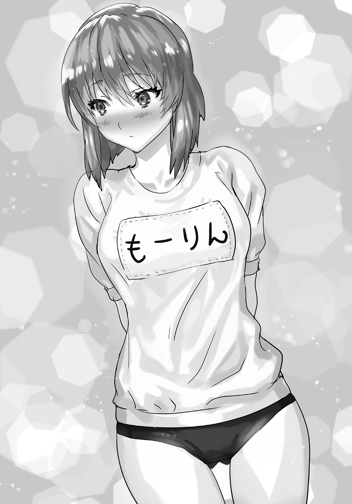
なんというか......。ギャップがヤバすぎる。
萌えた。
俺は激しく萌えあがってしまった。
「ダ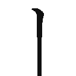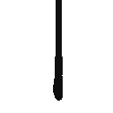ッ！」
俺は飛びかかっていた。
モーリンだけでなく、アレイダとスケルティアと、〝俺の女〟の三人に、野獣となって襲いかかった。
「ちょっとちょっとちょっと！ オリオンちょっと！ 居間でだなんて！ やーっ！ せ――せめて寝室でえっ!? きゃーっ!?」
うるさい。だまれ。これを食らえ。
俺はアレイダをしゃべれなくさせた。
このあと滅茶苦茶セックスした。
おひげをしょりしょり 「動かないで、剃ってあげる」
「あれ？ オリオン？ あごのとこ......」
いつもの昼過ぎ。
俺が屋敷でくつろいでいると、アレイダのやつが通りすがりにそう言ってきた。
「......ん？」
アレイダのやつが、足を止めて、見つめてきているのは――俺のあごのあたり。
なんだ？ どうした？
「あごのとこ。......はえてる」
なにが？ ......と、伸ばした俺の手に触れてきたのは、馴染みのある、ひげの感触。
いや......。馴染みはないな。
馴染みがあると思ったのは、前の人生の記憶のほうだった。
そりゃ毎日生えてきて、毎朝、剃っていた。
そういえば、この体に転生してから......、しばらくなかったな。
いや......。
「はじめてか？」
俺は記憶を探る。どうも髭を剃っていた覚えが記憶にない。
ということは、これまで生えていなかったことになる。
「へー。へー。へーっ......」
アレイダが身を乗り出して、俺に顔を近づけてくる。
「なんだよ？」
顔が近い程度で、俺は、ドギマギなどしないし。
量感のある若々しいおっぱいが目の前で弾む程度のことで、動揺などするはずもないが――。
なんで目を輝かせてんだ。こいつは。
「面白いのっ。――見せて見せてっ」
「べつにかまわんが」
アレイダのやつは、俺の膝の上にのっかってくると、間近で近距離から、しげしげと観察をはじめた。
なにが珍しいのか。......ああ。珍しいのか。
そういや女には生えんわな。
「ね？ さわってもいい？ さわってもいい？」
なにこいつ。誘ってんの？ この場で襲ってほしいの？
――だとか。
俺でなければ誤解しかねない言動に、苦笑してしまった。
「べつにかまわんが」
俺は重々しく、そう言った。
「へー。へー。へー......。ちくちくする。すごーい」
アレイダは俺のあごや口元を、手でなでなでとやってくる。
おもしろい、というのは、俺にはよくわからないが......。
目を輝かせて、おもしろがっている。
テーブルのほうにいたスケルティアが、こちらに目を向けてきている。
二つある人間の目と、額にある四つの蜘蛛の単眼とを、全部、こちらに向けている。
つまり――。うずうずとしている。
最近、あいつの無表情を、若干、読み解けるようになってきた。
「お髭を剃る支度をいたしますか？ それとも伸ばします？」
モーリンが、そう聞いてきた。
頭の中で、髭を伸ばした自分、というものを想像してみた。
.........。
ないわー。
あと二〇年ぐらい経ってからなら、渋くてアリかもしれないが......。
この若さでは、ないわー。
「剃ろう」
「わたし！ やるっ！」
「おまえがか？」
俺は疑わしげに、アレイダを見つめ返した。
目を、キラッキラ☆――とさせていて、なんか、怖えんだけど。
テーブルのほうに目を向けると......。
スケルティアのほうも、目をキラッキラ☆――とさせていた。
こっちは、ある意味、もっと怖い。
ハンティングするときの蜘蛛の目――といえば、おわかりだろうか？
モーリンが泡立てたシャボンと、カミソリとを持ってきた。
シェーバーだの安全カミソリだのといった便利アイテムは、この世界にはない。
よって〝カミソリ〟というのは、ようするに、よく研ぎ澄まされた切れ味の良い刃物のことを指す。
頸動脈ぐらい、すぱっと簡単に断ち切れてしまう。
つまり――。カミソリによる髭剃りを他人に任せるということは――。自分の命を他人に預けることになるわけだ。
俺は、俺の女にだったら、殺されてやってもいいと思っている。
――が。
手を滑らせて、うっかりー、――とかいうのは、御免こうむりたい。
「ねー！ やらせてやらせて！ いいでしょーっ!? いいよねっ？」
「べ......、べつに......、か、かまわんが......」
俺は、声がかすれないように気をつけながら――そう言った。
今日が俺の命日になるかもしれん。
「じゃーんけーん！ ぽいっ！」
アレイダとスケルティアが、ジャンケンをやっている。
このあいだ現代世界の「じゃんけん」を教えてやったら、ことあるごとに、それで順番を決めるようになった。
ちなみにスケルティアは、最初にチョキを出す癖がある。アレイダのやつはいつもそれを利用して、ちゃっかり勝利している。
アレイダ。おまえいつか。オシオキだからな。
アレイダ。あとそこ。「ぽい」じゃなくて、「ぽん」だからな。
「勝ちーっ！ じゃあ！ 最初！ わたしからーっ！」
「......まけた。」
スケルティアは、心底、残念そうにしている。
しかし......。
うちの娘のおバカなほうは、ほんと、バカだなぁ。
〝最初〟もなにも、おまえが剃っちまったら、ヒゲ、なくなるじゃん。スケルティアのやつは、剃れないじゃん。
バカ？ バカなの？
「いっくわよー!?」
俺の膝にお座りしたアレイダが、カミソリを手に、ニコニコとしている。
ぎらり。白刃がきらめいた。
俺は覚悟を決めると、顎を差し出した。
しょり。しょり。
「あははははー、おもしろーい、なにこれー」
俺は面白くない。めっちゃ怖い。
カミソリを持つのがモーリンであれば、ひげ剃りをされながら居眠りだって余裕なのだが――。
きゃっきゃ言いながら面白がってるバカ猿では、ビビるなというのは無理な話だ。
死を覚悟した元勇者だからこそ、顔色ひとつ変えずにいられるのだ。
「いてっ」
「あっ――ごめんごめん。ほんとごめん」
ほうら切られた。
「ほら。もう。手許に気をつけて。――マスター。すぐに治しますからね」
傍で見ていたモーリンが、タオルを手にして近づいてくる。
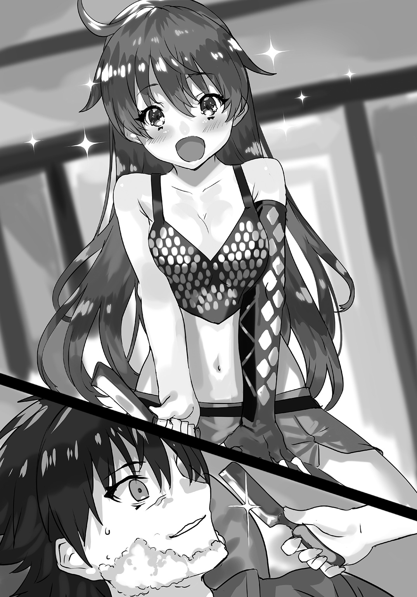
治療魔法を唱えてから、頰を拭ってゆく。
なに？ そんな大出血？
タオルで拭わなければならないほど、出血してたわけ？
鏡がないので自分では見ることができない。もどかしい。こわい。
「よいしょ、よいしょ」
今度は真面目に、アレイダはカミソリをあててくる。
また神妙に硬直している時間が過ぎる。
「あん。もう。オリオン。動かないで」
「いやそう言うがな」
アレイダは俺の上にしっかりと座っている。股間を密着させている。
そしてカミソリを操るために、もじもじ、もぞもぞ、と、不意を衝く動きを常にくり返している。
そのもどかしいぐらいの動きが、なにか微妙な作用を果たして――。
「もう......。オリオンってば。おっき。しないの」
顔を赤らめて、アレイダが言う。
気づいていたか。そして言いかたが、なんとも可愛らしく――。
「やーっ......、もうっ、また大きくなったぁ......」
「髭。剃れよ。手を止めるな」
「う、うんっ......」
手許がまた怪しくなってきた。
やるかなー。やるかなー。やるかなー。と、思っていたら......。
ざくっ。
「痛てえええ」
「ああ。ごめん。ほんと。ごめん。――だってオリオンが。......こんなっ」
「こんな？ って？ どんなだ？」
俺は意地悪く聞いてやった。
しかし、こいつ。
最近、相当、強くなってきてるんだな。
ステータス差があれば、単なる刃物で、傷つけられることはないわけだが......。
ざっくりやってしまえるということは、レベル的に、ステータス的に、割と近くなってきているということである。
また治療魔法で治してもらって、ひげ剃りを続行。
そしてまた、たいして進まないうちに、ざっくりやられた。
ざっくりっていうか、べろりというか。
「痛てえ痛てえ。痛てえぞ。切ったっていうより削いだろ。いまおまえ」
「うわあああ。モーリンさん、はやくはやくヒール早くっ」
アレイダが騒ぐ。ヒールは他人まかせ。
いまのこいつはクロウナイトだから、強力なリジェネとエナジードレイン（ＨＰ吸収）は持っているが、他人にかけるヒールは持ち合わせていない。闇のナイトに、そんな人様のための技はない。
もう一回マスターレベルに到達すれば、光の側の上位職であるクルセイダーへの転職条件が成立する。そうすればまたヒールが使えるようになるのだが......。ナイトの時よりも、もっと強力な回復呪文があるのだが......。
いまは単なる人を害するしか能のない、ダメな猿である。
俺の傷が治った。いったいどんな大怪我をさせられていたのやら。モーリンの使ってた呪文......。かなり大きくなかった？ カミソリ傷を治す小さなヒールじゃなかったよね？
「さんかい。斬ったよ？」
「ん？」
スケルティアが、ぽつりと、そう口にした。
指を三本、折っている。
「すりーあうと。ちぇんじ？」
「どこで覚えた。そんなもん」
こっちの世界に野球はない。
......いや？ 転生者が文化を次々持ちこんでいるというから、あるのかも？
「ええーっ？ 三回で交代なんて、そんなこと決めてないわよーっ！ 今日はずっとわたしがやるの！ じゃんけんで勝ったんだから！」
「交代。交代。交代だ」
俺は腰の一振りで、アレイダのやつを、ぽーんと飛ばしてやった。有無を言わさず交代させる。
かわりにやってきたスケルティアは、すとんと、俺の股間の上に座りにきた。
「.........。」
と、ちょっと首を傾げてから――。
「......する？」
俺に聞いてきた。
「しない。......ヒゲを剃れ」
「はい。スケさん。カミソリ」
アレイダが苦笑をしながら、カミソリを渡そうとすると――。
「......いらない。」
スケルティアは断った。
カミソリなしで、いったい、どうするのかと思いきや――。
しゃきーん！
爪が伸びた。
そういえばスケルティアのやつは、進化して、新たな種族特性を得たんだっけ。自在に伸ばせる爪だ。普段はまったく人間の女の子の手にしか見えないのに、爪が伸びたときには、鋼を断ち切る武器になる。
よって、髭も――。
しょり。しょり。
自分の体の一部だけあって、扱いが上手い。
まったく危なげがない。
モーリンにされているように、リラックスできる。任せられる。
おお。カミソリを使わずに髭を剃られる。自分の女にしたモンスター娘から、甲斐甲斐しく、髭を剃られる。
おつなもんだな。
こんどから、毎日、ひげ剃りは、スケルティアにやらせようか。
一緒に風呂に入ってやらせたりするのも、いいかもな。
そしてもちろん、ひげ剃りが終わった後には――。うっしっし。
「なんかオリオン......、いまイヤらしいこと考えてるでしょ。ぜったい。そうでしょ？」
うちの娘のヘタクソなほうが、なんか、言ってやがる。
しるか。ばーか。
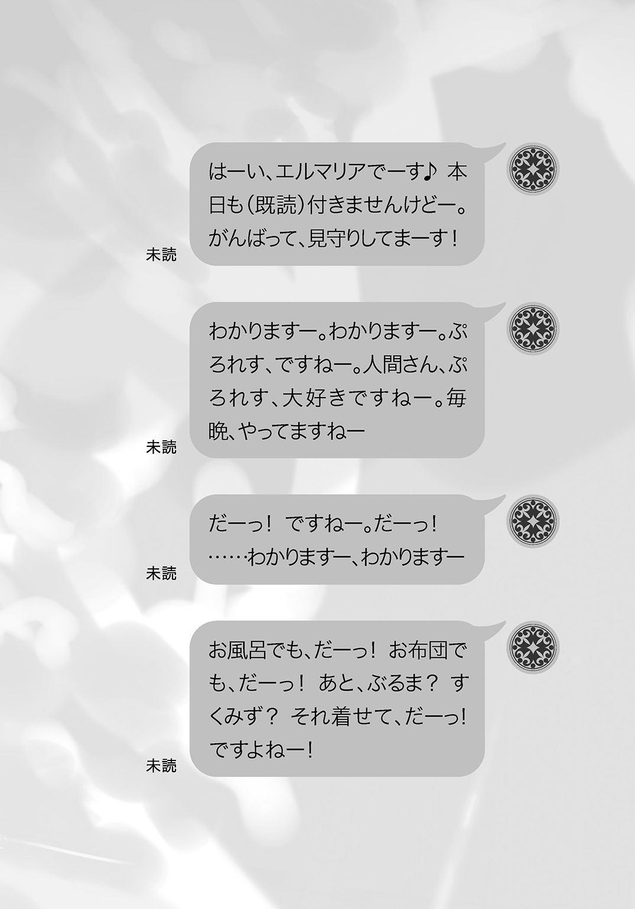
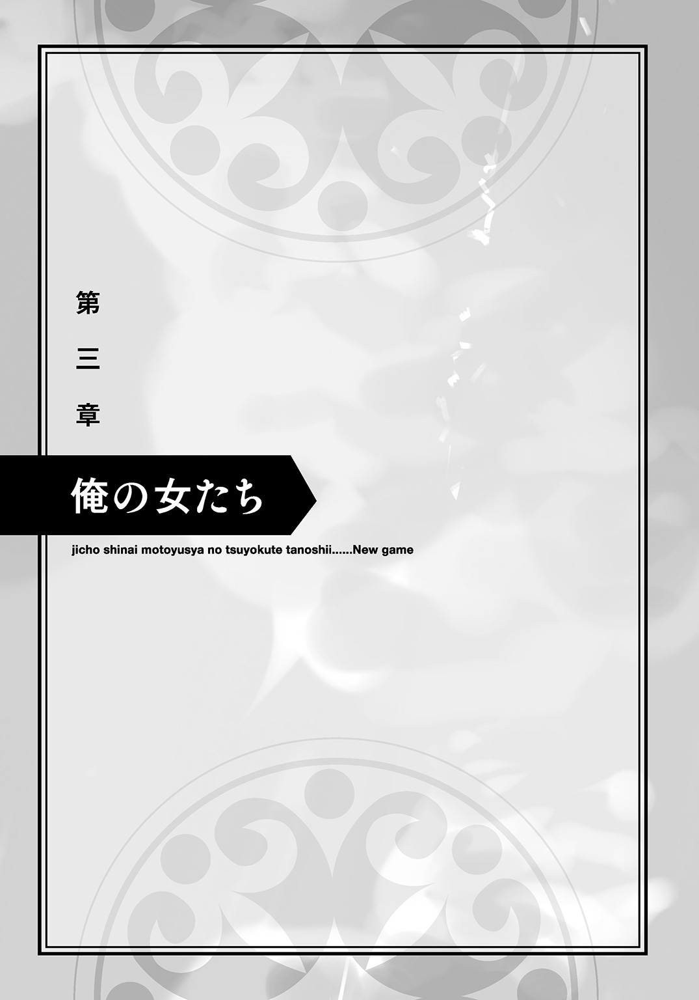
謎の女 「ずっと......。お慕いしておりました」
月の綺麗な夜だった。
屋敷を出て、馬車も出た俺は、木立の中を歩いていた。
月は二つ見えている。空に浮かぶ月と、水面に浮かぶ月である。どちらも完全な真円。
今夜は満月だった。
こちらの世界にも月がある。向こうとはちょっと違う周期で満ち欠けをしている。
モーリンが言うには、生命が発生するのに月は不可欠であるそうだ。
月の光に含まれる原初の魔力が、生命の微細構造に与える影響がなんたらと――魔法使いのジジイどもが小躍りして喜びそうな、魔法工学の講義が始まってしまいそうだったので、そこから先の説明は、謹んで辞退申しあげた。
小さな泉の近くで、今日は、馬車を止めた。
涌き水の出ている、綺麗な泉だった。
深夜に、ちょろっと抜け出して、一泳ぎしようと思いたった。
モーリンかアレイダかスケルティアか、誰か一人ぐらい連れてこようと思ったのだが、全員、ダウンしていて――。
顔をぺちぺち叩いても、まるで起きやしない。ちょっと、今夜は、激しすぎたっぽい。次からは、もうすこし手加減しようと、そう思った。反省。
俺は服を、すぱぱぱぱーっと、脱ぎ去ると、岸を蹴って――。泉に指の先から飛びこんでいった。
クロールで、すいすいと泳ぐ。
そういえば、こっちの世界にクロールだのバタフライだのといった泳法って、あるのかな？ なければ広めてみるのも面白いか。
アレイダのやつにまず教えるか。あいつ。犬かきしかやってなかったっけな。
――と。
俺は、その時に気がついた。
美しい女性がいた。
水面に浮かぶ月のなかに――立っていた。
腰までを水に浸している。下腹部から上の美しい曲線が、すべて、月の光の元にさらされている。
「――失礼。先客がいるとは思わなかったもので」
俺はそう言った。
柄にもなく、慌てていた。
まさかこんな人里離れた場所の泉で、こんな美しい女性が、こんな時間に沐浴をしているなんて......。
思うわけがない。
「......あっ」
女性は、こちらの存在にいま気がついたようで......。
びくっと身をすくめた。胸元をかばう仕草をする。それが俺の目には、ちょっと新鮮に映った。
長い黒髪の美しい女性だった。年の頃はアレイダとモーリンの、ちょうど中間ぐらいか。もっともモーリンは、あれは実年齢はいかほどなのか、確かめるのも怖いくらいだが。
俺はそんなことをぼんやりと考えこんで、時間を潰した。
勇者業界の人間からすれば、一般の人間の反応速度というのは、ひどくのろくさいものであり――。たとえば街のチンピラなどでは、パンチしてくるその手にハエが止まっているのが見てわかるほどだ。
そして俺はいま、沐浴中に男が現れて驚いた女性が、「きゃー！」と悲鳴を上げるのを待っているわけであり――。
「......お会いできるのを、ずっと待っておりました」
だいぶ待って、女性の口からようやく出てきた言葉は、そんなものだった。
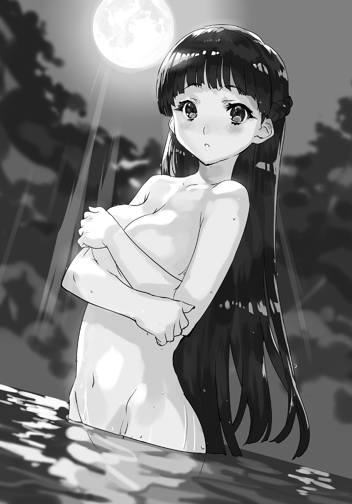
「......お慕いしております。オリオン様」
ん？ ん？ ん？
なんで俺、いきなり惚れられてんの？
ん？ ん？ んー？
......ああ。なるほど。
つまり、それだけ俺が、魅力的だということか。
出会った瞬間に、恋に落ちてしまうほど。
「君の前では月さえも霞んでしまうな」
俺の口から、さらりと、キザな台詞が飛びだした。
アレイダを使って、さんざん練習を積んだおかげで、俺は、歯の浮くような台詞を無限に近いほど口走れるようになっていた。
アレイダのやつなら、これで、ふにゃふにゃになる。
口説く練習だと言ってあったって、それでも、ふにゃふにゃに蕩けきってしまう。
さあ――？
初対面から俺に惚れてる、この美女（美少女？）の場合には......？
「まあ......。お上手ですわ」
片手を頰にあてて、彼女は上品に返してきた。
ふにゃふにゃに駄犬化するのでも、照れて頰を染めるのでも、ぽかーんとしているのでもなく、新鮮なリアクションだった。
「私......本当に、そうですか？」
「うん？」
「言葉だけでなくて......、本当に？」
「俺は思っていないことは口にしない」
俺は、そう言った。
チョロインのアレイダに対して、練習で、ふにゃふにゃにしてやったときにも、思っていないことは口にしていない。
ただ、キザで歯の浮くような台詞を、リミッターをかけずにしゃべっているだけだ。
「こんな私でも、好きになっていただけますか？」
彼女は自己評価がきわめて低い類の人間らしい。こんなに美しいのに。
「ああ。もちろん」
俺はうなずいてやった。
俺の愛は全人類の五〇％に無条件に発生するといっていい。
「証明してくださいますか？」
「ああ。もちろん」
たやすいことだった。
月の映った泉の真ん中で、俺は彼女を――「俺の女」にした。
◇
「ねー、オリオン。オリオンってばー？」
「んー......？」
馬にブラシをかけてやって、出発の準備をしながら――。
俺は、ぼんやりとしていた。
隣にきているアレイダのやつが、まとわりついて、体を擦りつけてくるのだが、残念ながら、俺の心は、いまここになし。
俺の心を捉えているのは、昨夜の美女のことだった。
泉の中で――。それから岸辺で――。
たっぷりと〝お楽しみ〟になった。
そして満足しきって、彼女の膝の上で、すこしうたた寝をしたのだが――。
目覚めたときには、彼女の姿は消えていた。
なにか化かされでもした気分である。
現代世界のほうの昔話なんかに、こんなのがあったよーな......？
美女の歓待を受けて溺れきってみれば、翌朝、田んぼで寝ていることに気がつくだとか。
なんでも知ってる賢者のモーリンに、こちらにもそういう化け物がいるのかどうか、聞いてみようかと思ったが......。
そうすると昨夜のことを話すことになるので、ちょっと自粛。
いやべつに怖いわけではないぞ？ ぜんぜんないからな？
「ねー、オリオン。きょうは、わたし、隣に座っていてもいい？」
アレイダのやつが、なんか言ってる。
ぜんぜん耳に入ってこない。
「はぁ......」
俺は、深く長く、ため息をついた。
「た......、ため息いぃ......!?」
アレイダのやつが、なんか言ってる。
ぜんぜん耳に入ってこない。
そういえば。あの娘の名前。ついぞ――聞かずじまいだった。
情熱的に求め合った。言葉などいらないぐらいに通じ合っていた。
「また......。あの娘に逢えるかなー？」
俺は馬のお尻にブラシをかけてやりながら、そう言った。
「え？ なに？ 女の人の話っ？ ちょっと――、なによそれ！ ――いったい、いつ！」
――ひひひーん！
そのとき馬が高々といなないた。
「あははっ――！ そうかそうかー」
俺は馬の尻を撫でた。
「また逢えるって？ そう言ってるのか？ そうかそうかー。愛いやつめー」
――ぶひひん！
「ん？ なんだ嫉妬か？ そうかそうかー。愛いやつめー」
馬語はわからん。だが愛いやつなのはわかる。
「また女の人の話してる！ ぜったい！ してるー！」
駄犬語もわからん。だがあんまり可愛くないのはわかる。
ラストダンジョン 「ちょ......、ここっ......なんなのっ？」
今日は楽しいダンジョン遠足。
俺たちはめずらしく全員でダンジョンを訪れていた。
「おーい、早く立ち上がらないと、つぎ、くるぞー」
最初に出くわしたモンスターをなんとか倒したはいいが、早くも死にかけているアレイダに、俺はそう言った。
「ま......待って、回復が......、間に合わな......」
クロウナイトの回復方法はリジェネだ。エナジードレインで敵からＨＰを吸い取る方法もあるが、さっきの戦いはあまりにも過酷で、そんな余計な技を使う暇などなかった。
可及的速やかに、全力をもって、出し惜しみなどせず、はじめから全開で、敵の息の根を止めなければ――たぶん、倒されていたのはアレイダとスケルティアのほうだった。
「まー、いきなり奥義から使ったのは、あれはー、わりとよかったがなー」
俺はそう言った。素直に褒めておいた。
思いきりがいいじゃん。もっとぐずぐずやって、俺が助けてやるハメになるかと思っていた。
まあ――。
このダンジョンにおける、最も浅い層において、最も弱いザコ敵の、たった一匹を始末しただけで、ＨＰはガタガタ。ＭＰなんて底をついているわけであるが――。
「ほらー、早く立てー。いまの戦闘の音を聞いてー、つぎがー、押し寄せてくるぞー」
俺はアレイダに回復魔法を使った。
勇者の職業は、基本、なんでもできる。
それでいて器用貧乏にならず、剣技も魔法も補助スキルでさえも、本職に並ぶのが、勇者という職業である。
「立つけど」
ＨＰが全快したアレイダが、すっくと立ちあがる。
ちょっとデカいヒールを使った。万とかいう単位のＨＰでもなければ、たいてい全回復させる魔法だ。
「スケも。――いけるか？」
「いける。よ。」
天井から垂れた糸の先で、逆さまになって、スケルティアが言う。
こちらは中衛。直接ダメージは食らっていない。だが一匹始末するために糸を多量に使っていた。ＭＰはアレイダ同様、そんなに残っていない。
「おい。モーリン。あれをやってくれ」
「あれ、でございますね」
モーリンは今日はメイド姿ではなくて、大賢者の格好。
宝玉のあしらえられた賢者の杖を、とん、と、床につくと――。
不思議な波紋が広がり――。パーティ全員のＭＰが、みるみる回復してゆく。
賢者の特殊スキル。ＭＰ全回復だ。戦局をひっくり返す威力がある。
ＨＰ全回復の呪文を先に唱えてから用いれば、ＨＰとＭＰを、どちらも共に満タン状態に戻せる。
一日に一回しか使えない裏技であるが――。
「ええっ？ なに？ なんなの、この大盤振る舞い......？ ケチなオリオンが？ ヒールしてくれるだけでなくて、なんでＭＰも戻してくれんの？」
俺はべつにケチなわけではなく――。
簡単に助けてしまっては、やつらの成長に繫がらないから、助けずにいるわけだ。
あ。いや......。いざとなったら、助けてもらえると思っていると、ぜんぜん成長に繫がらない。やつらには――特に駄犬化の激しいアレイダには、「絶対に見殺しにする」と思わせなければならない。よって、俺も本気でそう考えるようにしている。
死んじまったら、そのままにして、帰るかー、ぐらいに、本気でそう思っている。
「今日は特別だ。ＭＰ戻さずに〝次〟をやったら、おまえら確実に死ぬしなー」
通路の奥から、剣吞な音が聞こえてくる。
多数の魔物の足音。
「え？ あのその？ 奥から、なんか、くるんですけどー......？」
「さっき倒した一匹な。本当はアレ、集団で襲ってくる魔物なんだわ。一匹だけで出てきたのは、むしろ珍しいっていうか、レアっていうか」
「......て、......いうことは？」
うちの娘の駄犬なほうは、だんだん、わかってきたらしい。
「スケ。食事はそのへんにしとけ。――くるぞ」
「ん。たべおわた。よ......。糸の。材料。まんたん......。」
「そうか」
うちの娘の野性味のあるほうは、この短時間に〝食事〟をしていた。
感心感心。〝食えるときに食え〟は、冒険者の鉄則とされている。
ちなみになにを食したのかといえば、さっき倒した魔物。火も通さず〝生〟でいっている。
ハーフ・モンスターは便利だなー。あれで食あたりを起こさないんだもんなー。
「すすす――スケさん！ わわわ――わたしが食い止めるから！ えええ――援護おねがいっ！」
アレイダの声は、しっかりと裏返っている。
最近、「どう？ 強いでしょ？ わたし、強くなったでしょー？」とか、ドヤ顔をしてうるさいので、自分がいかに小物で駆けだしであるのかを思い知らせるために、俺とモーリンが修行あるいはカネ稼ぎに使っている、通称〝ラストダンジョン〟の、ごくごく〝さわり〟の部分を体験させることにした。
つまり、一階の入口近辺。
攻略だとか、侵攻だとかは、一切、考えていない。
入口付近を、ちょろちょろとして、エンカウントした敵とちょっとだけ戦う。雰囲気、及び、敵の強さの〝ランク〟というものを、おおむね体験できたら、さくっと帰る。
そういう、体験遠足コースであった。
闇の中から、数多くの魔物の足音が響いてくる。徐々に大きくなってゆく。
「き、き、き......きなさいよっ！ や、やるの！ やるのっ！ やるのーっ！ お、おおぅ！」
アレイダはすっかり腰が引けてしまっている。
「なんだそのへっぴり腰は。しゃんとしろ、しゃんと」
ケツを蹴りつける。
「蹴ったあぁぁ!?」
抱えこむと具合のいいそのケツに、ちょっと欲情を催したけども――さすがの俺も、こんなところで、そんなコトに及んでいたら、死亡する。
ここはそのぐらいは危険な場所だった。
このダンジョンに入ったことのある人間は、おそらく、両手と両足の指くらいで足りる程度だろう。
足を踏み入れ、生きて出ていった者となると、かつての勇者とそのパーティを除けば、まあ、片手で足りる程度だろう。
そして修行と金策に、ここを使っているのは――。
これはまあ断定してしまっていいだろうが、俺とモーリンの二人くらいだ。
元勇者と大賢者の二人パーティだけが、金策にこの場所を使っている。
「言っとくが。ＭＰ回復は、もうないからな」
「どケチ！」
「あれはモーリンの賢者スキルで、一日一回しか使えない奥の手だっつーの」
「奥の手最初に使っちゃうし！」
「ＨＰは俺が回復してやるが、ＭＰは吸い取るか、さもなければレベルアップしろ。レベルアップ時の全回復がなければ、死ぬと思え」
「なによそれ！ なんなのよそれ！ なに言ってるのかちょっと意味わかんないわよ！」
この世界では、レベルアップすると全回復するシステムだ。
なんでか知らんが、そうなっている。
向こうの世界のゲームでは、わりと見かけるシステムだが、現実として存在していると、ちょっと面食らう。
だがそれを変だと感じるのは、異世界からの転生者である俺ぐらいなもので......。この世界に生まれ育った者にとって、それは単なる〝常識〟だ。
俺も実際、こちらの世界で生を享けた前々世での勇者時代は、まったく気にしていなかったわけだし......。
レベルアップ時の全回復を、戦略に組みこむのは......。まあ、〝常識〟ではないかもしれないが。
でも勇者業界では〝常識〟なんだよなー。これってー。
アレイダやスケルティアあたりの低級職なら、この通称〝ラストダンジョン〟の敵を、一、二匹倒せば、レベルアップする。
アレイダはさっきはレベルアップしていないから、次の一匹で、確実だ。
おっと。「クロウナイト」は低級職じゃなかったか。世間一般的には中級あるいは上級職だっけか。勇者業界の〝常識〟で計ると、まだまだぜんぜん、くちばしの黄色いヒナ鳥になるんだが......。
などと考えながら、待ち受けていたら――。
きたきた。
ぞろぞろきた。続々ときた。隊列作ってやってきた。
「ぎゃあああああ！ きた！ きたあぁぁぁ！」
アレイダのやつは、今生の終わりみたいな悲鳴をあげる。
うちの娘のうるさいほうは、ほんと、うるさい。
「......いくよ。」
スケルティアが、決死の面持ちで、うなずいた。
うちの娘の腹の据わっているほうは、ほんと、静かだ。
二人は敵のただなかに飛びこんでいった。
◇
「はぁ......、ふう......、はぁ......、ふう......」
折れた剣を杖がわりにして、アレイダのやつは、かろうじて、立っている。
スケルティアのほうは、もう糸も出せなくなっているのか、地面にぺたんとへたり込んでいる。
俺はすでに倒している敵を、念入りに、金棒で破壊して回っていた。
ただ倒しただけで放置しておくと、こいつらは自然復活してくる。
昔々、前々世において、俺がはじめてここを訪れたときには、モーリン式で鍛えられていた。
モーリンはニコニコ笑って見ているばかりで――。
俺は復活してきたやつらにタコ殴りにされて――第二ラウンドが開始となった。レベルがもう三つもあがった。
「マスターはお優しいですね」
「フンっ――。こいつらが死んじまったら、寝覚めが悪いからな。ただそれだけだ」
昔々の、俺の時には、まだ余力があったが――。こいつらは本当にもう限界だ。これ以上は本当に死んでしまう。
言わずもがなのツンデレ言語を口走っているのは、自分でもわかっている。
でもどうにもならない。
幾分、呼吸も整ってきたアレイダのやつは、きょとんとした目で、敵の残骸を徹底的に破壊し尽くしている俺を見ていたが――。
はっ、と、気がついた顔をする。
あー、ばか、もう！ 気がつくな！
おまえはいつもみたいにバカなままで、バカ面をさらしていろ！
「あ、あのね......、オリオン......、えっと、その......」
「なんだ？」
俺はじろりと、うちの娘のしおらしいほうを、にらみつけた。
感謝の言葉でも口にしたら、コロス、あるいは犯す、と、目で凶悪に訴える。
それが伝わったのか、アレイダは言いかけていた言葉をいったん吞みこむと、かわりに別の言葉を言いはじめる。
「お、オリオンって......、本当に......、強かったのね」
「はァ？」
俺はぎろりと、凶悪に睨み返した。
手にした金棒で、残骸をごりごりと粉末にしてゆく。
「ほ、ほら......、わたしとスケさん、戦っているときに......、何体か、減らしてくれていたじゃない？」
ちっ。気づいていたのか。
アレイダがこっちを見ていない隙を狙って、一瞬で、ぶっ飛ばしていたんだが。
「一撃だし。残骸も残らないぐらいの威力だし」
「ま、まあな......」
俺もそれなりにレベルを上げている。
こいつらは、亀のごとき歩みではあるが、じりじりと強くなってきてはいる。
俺がまったくレベル上げをしないでいると、だんだんと、その差は縮まってきてしまう。
どちらが主かわからなくなってきてしまう。
常に圧倒的な力量差がなくてはならない。
もう倒すべき魔王もいないのだから、そんな「強さ」は不要なわけだが......。
俺はこいつらが常に「絶対にかなわない存在」でなくてはならないのだった。
あー、メンドクセー。
二度目の人生は、もっとサボるつもりだったんだがなー。
「こんなの。べつに。たいしたことでもない」
金棒の先で、ごおりごおり。粉末が増えてゆく。
「スケさん。もっと褒めろってさ」
「......？」
「おい。誰が褒めろなんていった」
「ほら。ほめてって。――わかる？」
「おい。聞けっての」
「......？」
スケルティアは首をどんどん傾けてゆく。
「いいこと」と「わるいこと」の区別さえ難しいモンスター娘に、「褒めろ」は難し過ぎたようだ。
「ほら。ほめてあげましょう」
「だいてー」
スケルティアは、俺をまっすぐ見つめて、照れもせず真顔で言った。
「へ？ いやちょっとそれって、どうなの？ ありなの？ ないでしょ？」
「お、おう。......帰ったらな」
うむ。男にとっては、最高の褒め言葉だな。
今夜はいっぱい、抱いてやろう。
「えっ！ アリっ!? アリなのっ――!?」
「マスター。わたくしのことも抱いていただけますか？ わたくしも、少々、濡れてしまいました」
「なぜおまえまで」
俺はモーリンをまじまじと見つめた。
なぜここで、いきなり、抱かれたい宣言？ しかも表情ひとつ変えずに？
「照れていらっしゃるマスターも、愛いものですから」
「愛でるな。......だいたい、おまえ。その、〝濡れた〟とかいうのも、ウソだろう？」
俺はなぜかうろたえつつ、そう聞いた。あんな鉄面皮で表情ひとつ変えずに、そんなこと言ったって......、ねえ？
「では、お確かめになっていただきませんと」
「う、うむっ。そ、そうだな。よし抱いてやろう。その言葉の真偽は、当然、俺のこの目で、確かめなくてはならないからなっ。直接っ」
「はい」
モーリンは長い睫毛を伏せて了承。
よし。よし。よしっ。あとで確かめる。しっかり開いて確かめるからなっ。
――で、アレイダのやつだが。
「えっ？ ええーっ！ なっ――ちょっ！ みんな！ なんなのっ！」
アレイダは一人で慌てている。
俺はモーリンとスケルティアを左右に抱えた。二人の細腰を、左右の手で抱き寄せる。
そのうえで、アレイダに問い質した。
「おまえは、どうなんだ？」
「えっ？ いや、あの、ちょっ......」
「抱かれたいのか。抱かれたくないのか。イエスかノーかで、簡潔に答えろ」
「ああぁーっ、うううーっ......」
「あー、うー、ではなくて。俺は答えろと、そう言った」
俺は意地悪く、質問を続けた。
こいつ。おもろい。もう何回も抱いてやってるのに。夜中に自分から枕抱きしめて、夜這いにやってきたことさえあるのに。
まだ素直に言えない。口にできない。
「......いです」
「聞こえんな」
「――!? ......いです！」
「だからぜんぜん聞こえんなぁ」
俺は耳に手をあてて、わざとらしく、聞き返した。
アレイダは、まなじりを決すると、息を深々と吸いこんで――。
「だ――!! 抱いてえぇぇーっ!!」
◇
目をつぶって、大声で言うアレイダが、可愛らしくて――。
その夜は、大いに燃えた。
まずアレイダから愉しんだが――。全員、もれなく味わった。
しかし......。
血が騒ぐというか。
戦闘のあとのセックスは、大変、キモチがよかった。
食べ放題 「これぜんぶ食べていいのーっ!?」
かっぽ。かっぽ。
馬に牽かれて、馬車が進む。
ひさびさの石畳を踏んで、馬はちょっと楽しそう。
いつもの足取りは、かっぽん、かっぽん、なのであるが、いまは、かっぽ、かっぽ。
この微細な違いを見分けることが出来るのは、世界広しといえども、まあ、俺一人だろうな。
山間の道を抜けていったら、わりと大きな街へと出た。
「前の旅のとき、こんな街、あったかな？」
モーリンに聞く。
「まえの旅ってー？」
聞いてもいないアレイダが、いらん質問を返してくる。
「この五十年で大きく発展した街ですよ。昔は村もありませんでした」
「なるほど」
「なんでそんな昔の話をしてんのよ？」
うちの娘の頭悪いほうは、首を傾げている。
教えてやんない。
俺が元勇者だということは、べつに身内になら、バレてもなにも問題はないのだが......。
俺のプライベートなことだし。いまの人生には関係のないことだし。
いまの俺は、単なる旅人だ。
自分の救ったこの世界が、数十年でどう変わったのか、実際に自分の足で訪れて、確かめてみている最中だ。
俺の今生での旅は、前々世での旅路をなぞるようにしている。
いまはこの国の王都へと向かっている途中だ。
名前も知らないこの街は、その途中にある街なわけだ。
最近できた街だから、名前も知らなくて当然だ。
最近――といっても、俺の「最近」とかいう感覚は、五十年とかいう時間尺となるわけだが。
「あ――、なんかこれ、いいにおい」
アレイダが言う。
ふんふん。すんすん。......たしかに、肉の焼ける、いい匂いが漂ってきているな。
どこかの店から、料理のにおいが風にのってやってくる。
――ぐーきゅるきゅる。
誰かの腹から、そんな音が鳴り響いた。
皆の視線が集まる中、アレイダがうつむいて、片手を挙げる。
「はい......、わたしです」
「すこし早いですけど。お夕飯の支度をはじめますね」
モーリンが微笑んでそうフォローする。
だが俺は――。
「いや、それよりも、いい店がありそうだ」
そう言った。
手綱を引かずとも、ミーティアは立ち止まった。いい娘だ。
目立つ看板を掲げた店があった。
さっきのにおいの源は、ここだ。この店だ。
「たべ......ほうだい？ え？ これって、なんのお店？」
店の看板を見上げて、アレイダが言う。
文字が読めなかった蛮族奴隷娘も、毎日のモーリンの教室のおかげで、共通語の読み書きくらいは出来るようになっている。
俺？ 俺はそんなもん。とっくにクリアだ。義務教育経験者を舐めんな。
効率のいい勉強方法なんて、学校教育と受験勉強とで、会得済みだ。
「今日はここで食事をとるぞ」
「かしこまりました」
モーリンが、うやうやしく頭をさげる。
街にいるときには外食を多めに摂るようにしている。
毎度毎度、食事の支度をしているモーリンの負担を減らすという理由ではなく――。メイドではない彼女と、恋人のような雰囲気で食事をしたいという理由のほうだ。
ま。どうせ子連れになって台無しになるのだが（笑）。
「ねえ？ たべほうだい？ ......って、それ、どんな料理ー？」
「おや。店が開くのは夜からか。もうしばらくかかるな」
入口に札がかかっていた。夕方は休憩。昼と夜の営業のみ。
漂ってきていた美味そうなにおいは、仕込みのにおいか。
これは期待できるな。
「ねえ。だから、〝たべほうだい〟って、どういう料理ーっ？」
◇
「ちょ、ちょ、ちょ――？ これから食べるのに、なんで、いま食べてるの？」
いったん馬車の中にもどり、亜空間内の屋敷に引き上げて――。
俺はコンソメスープを飲んでいた。
〝食べ放題〟に向けて、準備万端、整えている最中だった。
「完全な空腹よりも、事前にすこし腹にいれておいたほうが、たくさん食べられるんだ」
「だから、〝たべほうだい〟って、どんな料理なのか、教えてってばー！」
どうもさっきから違和感を覚えていたのだが。アレイダのやつは、本当に「食べ放題」がなんだかわかっていないっぽい。
......こっちの世界にはないのか？ 食べ放題？
「なんでも食い放題なんだよ。一定料金で、好きなものを、好きなだけ食っていいんだ」
「えっ？ うそっ？ マジっ!?」
「まじまじ」
「すっごーい!!」
喜んでいる。すっごく喜んでいる。
こいつは単純だなぁ。
「モーリン。あの果物。なんていったっけ？ あの苦いやつ」
「グレプスですね」
「そう。それ。そいつの搾り汁も持ってきてくれ」
「かしこまりました」
果物のジュースが出てくる。
果物はそのまま食べるのが、こちらの世界における平均的な食べかただ。
搾ってジュースにすると、グラス一杯に何個も使う。逆に言えば、何個分も栄養が摂れる。
そういや、ジュースって、あまり見ないのはなんでだろう。
〝転生者〟はそれなりにいるらしいから、もうすこし広まっていたって良さそうなものだが......。
「わたし......、この苦いの、きらーい」
「飲んでおけ。苦い味は、胃袋を動かすのにいいんだ」
「うえーっ......」
アレイダは思いっきり顔をしかめて、ぐいっと呷った。
グレープフルーツみたいで、俺は好きなんだが。なんでか、こちらの世界には、苦い食べ物は少ない。コーヒーも転生者たちの広めた〝輸入品〟だ。
「にがーい!! もういっぱーい!!」
おかわりをして勢いをつけているアレイダの隣で、スケルティアが、グラスを傾けて、くぴくぴと飲んでいる。
なにせ無表情なので――。苦いのを我慢しているのか、おいしいと思っているのか、どっちなのやら、ぜんぜん、わからない。
時間まで、屋敷で準備万端、整えて――。
俺たちは、出陣をした。
◇
「これおいしー!! あと三皿持ってきてー!!」
大の男でも「うっ」となるような盛りのヤキソバを、三皿も、まとめて注文する。
給仕の若い男が、引き攣った顔になっている。
食い放題という、あちら側のシステムを導入している店だから、なにもかも向こう式で、バイキング式で取り放題、さらにはドリンクバーぐらいはあるのかと思ったが――。
システム的には、意外と普通。
席に座って、注文して、じゃんじゃんばりばり、持ってきてもらう方式。
まあ、向こうの焼き肉食い放題とかでも、オーダー式のところもあるしな。
メニューは豊富で、各地の名物料理がずらりと並んでいる。北の地方の酢漬け料理。南の地方の魚料理。なんでもあった。
あと、転生者が絡んでいると、俺が確信したのが......。
「つぎ。俺は。この〝お好み焼き〟というのをもらおう」
「オコノミヤキという料理は、小麦粉を――」
料理の説明をしようとする給仕を、手で遮って――。
「――説明はいらない。青ノリ、たくさんかけてくれ」
まさかこの世界でお好み焼きが食えるとは思わなかった。
アレイダのいま食ってるやつも、ヤキソバで――。これはこちらにはない料理だ。
ここの店主なのか、料理開発担当なのかは、わからないが、やはり異世界人なのだろうか？
「ローストチキンレッグ――六本！ じゃなくて一二本！」
訂正する。
ヤキソバはもう食っていなかった。さっき食っていた。もう終わっていた。
――てか。早いな？ さっき三人前、来たばかりじゃないのか？
「スケ......、食ってるか？」
「ふがっ。ふごっ。」
うん。食ってるな。忙しそうだな。
スケルティアのやつは、ほとんど生肉状態の超レアステーキにかぶりついている。
蜘蛛は肉食。そしてナマが好き。
血の滴るような――、という表現があるが。比喩でなく、ほんとに、血が滴っている。
「ほら。スケ。口のとこ――」
俺はナプキンで、口許をぬぐってやった。
スケルティアのやつは、黙っておとなしく拭われていて、終わってから――。
にいぃ、と、赤い目を細めた。
うん。かーいー。かーいー。
世間一般的には、ちょっとコワい顔なのかもしんないけど。
俺にとっては、かーいー。かーいー。
「あっ。口許ソースまみれになっちゃったぁ～」
うちの娘のわざとらしいほうが、なんか、言ってやがる。
俺たち（特にアレイダ）が健啖ぶりを発揮していると――。
給仕ではない男が、ホールの端から、こちらをこっそりと窺っていた。
冒険者の性というやつか。元勇者の習慣か。
どうしても気づいてしまうんだよなー。
昔と違って、周囲の警戒なんか、まるでやってはいないのに――。観察者がいると、つい、気づいてしまう。
俺はちょいちょいと手招きする仕草をした。
手のひらを下にして、指先を、くいくいと動かした。
男は、すぐにこちらに近づいてきた。
ああー。なるほどー。
いまの男のリアクションで、俺は一つ気がついたことがあった。
それを確認するために、男に聞いてみる。
「君は支配人か？」
「ええ。まあ。料理長......みたいなことをやっています」
男は頭を搔きながらそう言った。
控えめで誠実そうな男だ。年は二十代後半ぐらい。
「この店は、じつにいい」
俺は素直に賛辞を述べた。
「ふがふがっふ！ ふぁっふぁ！ ふぉひひふふふぇーっ!!」
うちの娘の馬鹿なほうも、なんか言ってる。なにを言ってるのか、ぜんぜんわからないが、なにを言いたいのかは、わかる。
「九〇分の時間制限を設けていないところが、特にいいな」
俺がそう言ったとき――料理長の目が、きらり、と光った。
さっきの手招きに反応したこと。そしてこの「九〇分」というキーワードに反応したこと。
この二つをもって、俺は、この料理長が〝転生者〟であると確信に至った。
手招きを――俺は、手のひらを下にして行った。
これは現代世界の日本においては、「手招き」だが、この異世界だと「あっちいけ」の手振りとなる。
それで、すぐに近づいてきたということ。
つぎに「九〇分」のキーワードに反応したこと。
向こうの世界の〝食べ放題〟は、大抵、時間制だ。朝から晩まで居座りつづけて、腹を減らしてはまた食べるという、非常識なやつらが出てくるからだと聞く。
こちらの世界で「九〇分時間制」なんて概念が出てくれば、それは、転生者同士にしか通じない〝符丁〟として機能する。
俺たちは、目と目で通じ合った。
向こうは俺とは違う系統の転生者らしい。
たぶん食堂無双とか、料理道無双とか、そっち系だな。
まあ定番のひとつだな。
俺のほうは勇者転生無双ハーレム（二周目）で――。もっとド定番であるわけだが。
「次はなにをお持ちしますか？」
「ヤキソバと。あとライスをもらおう。〝ヤキソバ定食〟にしてくれ」
料理長が、にやり、と笑った。
「ふぉりふぉん――、ふぁひぃふぉれ」
アレイダが、なんか言ってる。
「なに言ってんのかわかんねーよ」
「......もぐもぐ。......ごっくん。......炭水化物と炭水化物って、変よ、それ」
「わかんねーやつは、引っこんでろ、ばーか」
「バカっていったほうがバカなんだから！ ――あっ。これおいしかったです。もっとください」
ローストビーフの載ってた大皿を出す。キロ単位で載ってて十人前ぐらいはあったはず......。もう肉汁しか残っていない。
料理長は嬉しそうに笑うと、厨房のほうに引っこんでいった。
◇
俺たちは、食って、食って、そして食いつづけた。〝トリの丸焼き〟なんていう料理を、一人頭、二羽分ずつ食って、骨を積み上げていると――。
「特別料理をお持ちしました」
「ん？」
料理長がきた。後ろに数人続いている。
大きなワゴンに載せて運ばれてきた、〝それ〟は――。
「ブタの丸焼きにございます」
うおっ。
丸々一頭の焼死体が......。
ではなくて、こんがりとローストさせた、ブタ一匹、丸ごとの丸焼きが、カートに載せられてやってきた。
俺はそのボリュームに、たじたじとなっていた。
いくらうちの駄馬が、モリモリ馬のように食ってるとはいえ――。
これは、ちょっと、さすがに――。
「うわー、おいしそー」
あっ。はい。そうですか。
数人がかりで持ちあげられた超大皿が、テーブルの上の料理を半分ぐらい押しのけて、でん――と、置かれる。
ブタの焼死体の顔が、俺を睨んでくる。
いや。違った。こんがりと美味しそうにローストされた、ブタの丸焼きか。
俺も常人よりはだいぶ食うほうだが――。
焼きそば、ステーキ、お好み焼き、ドリアにグラタン、それからなんと〝寿司〟まで――。現代の懐かしい味を食べまくって、さすがにもうちょっと喉元まで込みあげてきている。
料理長が、俺を見て、にやり、と笑った。
その目が、〝お帰りになられてもよろしいですよ〟と云っている。
これは挑戦だった。
勇者として、その挑戦を受けないわけにはいかない。
「おい。アレイダ。どんどん食え。モリモリ食え。好きなだけ食え」
俺はアレイダに勧めた。
知ってるか？ 勇者ってのは、〝パーティ〟で戦うものなんだぜ？
「うわーい！」
食うしか能のないうちの駄馬は、モリモリと食いはじめた。
◇
「ふ、わあぁぁぁ......、たべたー、たべたー」
ぱーん、ぱーん、と、アレイダが、お腹を叩く。
アレイダのやつは妊娠していた。
九ヶ月ぐらいだ。
スケルティアは無表情のまま中空を見つめて、ぼんやりしていて――。
モーリンはナイフとフォークをちまちま使って、小さな切れ端を、ちょこちょこと口許に運んでいる。
最初からずっとあんな感じ。マイペースかつ一定ペース。
まあモーリンには〝戦力〟を期待してはいないが――。
俺は、うちの娘の空気読まないほうが、「これおいしいよー。はい、いいところ切ってあげたー」とか、ニコニコしながら巨大な肉塊を置いてきて――。
なんとかかんとか、胃袋へと詰めこんだ。
もう数日ぐらいは、肉、食いたくない。
ブタの丸焼きが、骨格標本だけを残して、だいたいすべて誰かの胃の中に収まり、ほっとした頃――。
店の奥――、厨房のほうで、動きがあった。
従業員が何人も集まっている。
大勢でかついでくるのは――。
神輿だった。
「牛の丸焼きでございます！」
テーブルの上の皿も料理も、すべてを押し潰して――。
神輿が置かれた。
牛の焼死体が――。
いや――。〝牛の丸焼き〟が、焼けただれた眼球で、俺を、にらんでいた。
「.........」
俺は脂汗を通り越して、なんか妙な液体を、だらだらと顔と背中に垂れ流しながら――。
牛の丸焼きと対峙していた。
「当店自慢の名物料理でございます」
料理長が......、嗤っていた。
〝お帰りになられますか？〟と、その目が、云っていた。
勇者は引けない。
勇者が敗れるときは、それは人類の滅亡を意味する。
......もう勇者じゃねーんだけど。
「お......、おい、アレイダ？ ここの名物料理らしいぞ」
「う......、わ......、う、うわーい......、お、おいしそ......う」
アレイダも、引きつった顔になっている。
すでに妊娠九ヶ月目。これ以上食ったら、生まれてしまう。
スケルティアは、さっきからずっと、動いていない。
モーリンは、しずしず、ちまちま――と、お行儀良く食べ続けている。我関せず、といった顔で、小片を口許に運んでは、自分のペースで食事を愉しんでいる。
「じ、じゃあ......、い、いただきま......す」
うちの娘の役に立つほうが、決して勝てない戦いに向けて、最初の一口を刻んだ。――が。
「う......、う、う......、もうだめ......」
「やめろ。それはやめろ......」
テーブルに突っ伏して呻いているアレイダに、俺も同じように突っ伏しながら、そう制止した。
「だ......、だめ......、だめっ......」
「やめろ。ヒロインやめたくなかったら......、やめろー！」
だが、しかし、アレイダは――。
「う、うぷ――」
やったー！
リバースしたー！
ヒロインやめて、ゲロインになっちまったあぁぁーっ!!
わかっている顔の従業員が、あっという間に取り囲んで、ゲロインを引きずって連行してゆく。
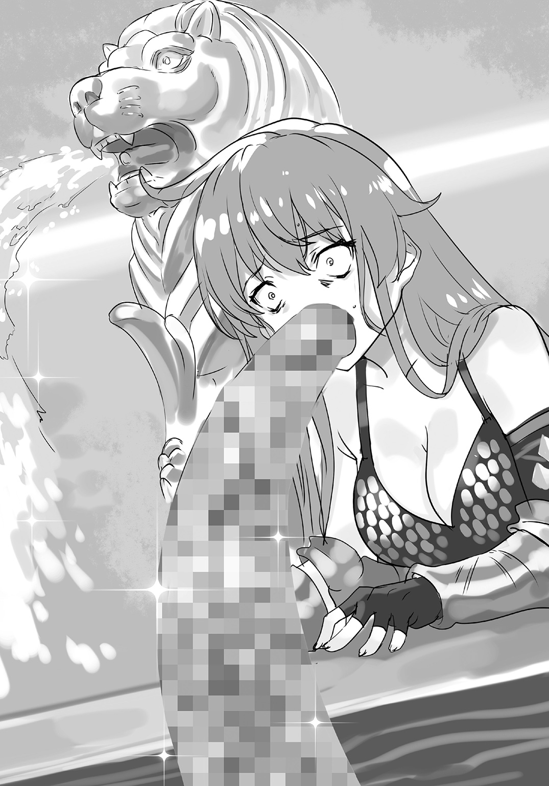
床のうえに、光り輝く〝道〟が、できあがっていた......。
あーあー......。ばっちー......。
何日か、触んの、やめよー......。
何日か、あいつ、抱いてやんねー......。
主戦力は轟沈したものの、俺たちは、牛の丸焼きも、なんとか食いきった。
モーリンが意外と食べていた。ちまちま、ちまちま、少しずつではあるが、ナイフとフォークを操る手を止めないので、地味に丸焼きが減ってゆく。
スケルティアは、静止と再起動を繰り返していた。生き返ったときには、大の男一人分ぐらい片付けて、また静止モードに入る。
完全静止しているときには、内臓をフル稼働させて消化しているっぽい。
牛の丸焼きが......。
俺たちを壊滅寸前にまで追いこんだ、この凶悪な物体が......。ようやく、片付いた。
俺たちが「ごちそーさま!!」と叫ぼうとした――その時のことだった。
従業員が、わらわらと群雲のように現れて――。なにか、やっている。
俺の目には、どうも、店の壁を破壊しているようにしか......。見えないのであるが......。
壁が取り払われた。表通り沿いから、〝それ〟が――。搬入されてきた。
「竜の丸焼きにございますッ!!」
でた。きた。
最強生物が丸焼きになって、出てきた。
竜ってまだいたんだ。五十年前でも希少種だったが。
そしてあの料理長。竜を狩れるほどの強さだったのか。
なんで料理人なんてやっているんだ？ なんで竜なんて倒してんだ？
ああ。料理人だから、もちろん、〝料理〟のために倒してんだな。そりゃそうだな。
俺はたっぷり数十秒ほども、現実逃避に耽っていた。
やつの目が嗤っていた。〝お帰りになられますか？〟――と。
俺は――。俺は――。
負けるのは、大変、屈しがたい。勇者として許されない。――いやもう勇者じゃないんだけど。
だが......。
だがこれは......。
俺は焼死したドラゴンの顔と、にらめっこをした。
俺が降参の言葉を口からだそうとした――。そのとき――。
「あら。おいしそうですこと」
え？ という顔が、無数に――一点へと集中した。
しずしずと食べていたモーリンが、ドラゴンの顔を見ながら、にっこりと微笑んでいる。
なにかの魔法をみているようだった。
モーリンはあくまでも、ゆっくり、ナイフとフォークを扱っている。ただそれだけ。
なのに、みるみる、どんどん、ドラゴンの身肉は減ってゆくのだ。
「あー、ドラゴンステーキ!! わたしも食べるー!!」
どんだけ吐いてきたのか。臨月状態からスマートな体に戻ったアレイダが、そんなことを叫びつつ、ドラゴンステーキに飛びついた。
てゆうか......。吐いてきてから、また食うとか、それって、ルール違犯なんじゃね？
俺も再び戦線に復帰した。また食った。限界を超えてみせた。
ドラゴンステーキなんて貴重なものを、食わないわけにはいかない。
知ってるか？ 食うだけで強くなるんだぜ？ ステータスあがるんだぜ？
なんでこんなチート食材、食い放題なん？
おかしくね？ おかしくなくなくね？
食った。食った。食いつづけた。食材効果でＳＴＲとＣＯＮがあがった。なので胃袋に空きができて、そのぶんも食った。
だがやはり限界だった。ドラゴン一匹なんて、食い尽くせるはずが――。
絶望の目を、ドラゴンの丸焼きに向けた俺は――。
「え？」
半分、減ってた。
モーリンがゆっくりとした仕草で、ちまちまと、お行儀よくナイフとフォークを使いながら――。しかし確実に、減らし続けていた。
「え？ え？ え？」
一口一口は、ほんの小さな小片をゆっくりと運んでいるだけだ。優雅ともいえる仕草だった。
しかしドラゴンの肉はみるみる減ってゆく。時間の流れが、なんかおかしい。
モーリンが一口に使っている時間は、〝体感時間〟では、ゆうに数秒以上。だが〝客観時間〟では――。
俺は時間を計るスキルを発動させて、厳密に計測を行った。
その結果――。
モーリンの一口の実時間。――なんと、〇・〇〇一秒。
この世には、勇者すらも知り得ないスキルがあるらしい。
世の中......、奥が深い......。
モーリンは優雅に食事を続ける。
あれだけの量が、どこに入っているのやら。テーブルの下のウエストあたりを見ても、まるで変化がない。
アレイダのように九ヶ月とかになっていない。そうなったモーリンというのを、いずれは見てみたいものだが。――まあそれはそれとして。
モーリンは、すべてを完食した。
「おいしゅうございました。......ふう」
頰を上気させて、ため息をひとつ、つく。
それきりだ。
〝竜の丸焼き〟を食べきった美女は、美しく微笑んだ。満足した顔だ。
「おかわりは？ ......でますか？」
「も......、もう......、ないです......」
料理長は、両手両足を床についていた。がっくりとうなだれている。
牛の丸焼きに続く、竜の丸焼きで、俺たちを完全に仕留めたと思っていたのだろう。
さすがに〝次〟は用意していなかったようだ。......って、竜よりデカい生き物なんか、そうそういやしないが。
いや――。おまえもよくやったよ。相手が悪かっただけだ。
俺たちでなければ、竜どころか、牛のあたりで、倒されていたはずだ。
俺は床に這う料理長に、手を差しのべた。引きあげて、立たせてやった。
「ごちそうさま。うまかったよ」
笑いかけると、あいつも笑い返してきた。
「世界を救うことがありましたら、その際には、また来てください。いい料理をお出ししますよ」
料理長は細い目をさらに細めて、ウィンクしてきた。
あー、これー、すっかりバレてんなー......。
まー。世界のどこを探したって、〝魔王〟なんていやしねえけどな。
俺が倒した。前世で倒した。相打ちとなりはしたものの、命をもって、倒しておいた。
だからもう世界を救う必要なんて、ぜんぜん、ないんだけどなー。
「まあ。その時が来たら、また食いにきてやるぜ」
「それまで腕を磨いておきますよ」
俺は料理長と腕をクロスさせた。あんまり男とくっつく趣味はないのだが。くっつくのであれば美女ないしは美少女がよいのだが。
ま。なんか――。好敵手っぽい友情が芽生えてしまったわけで。
「さ――。帰るか」
「はーい！」
「スケ。は。かえる。」
皆が立ちあがる。
モーリンも最後に静かに立ちあがって、足を踏み出す。
――と。
床が抜けた。紙みたいに抜けた。
わりと頑丈そうな木の板の床だったが、モーリンが足を出すたびに、ばりんばりんと壊れてゆく。
「......困りました。これでは帰れません」
なるほど。
俺は理解した。物理法則までは曲がっていなかったらしい。
質量保存の法則というやつだ。食ったぶんが、いったいどこへ消えているのかと思っていたが――。見かけは変わっていなくても、〝質量〟のほうは、しっかりと変わっていたわけだ。
いまのモーリンは、ドラゴン一匹分の体重があるわけだ。
「〝飽食〟のスキルも万能ではないようですね。スキルポイントが余っていたので取ってみましたが」
「モーリン。ちょっと失礼するぞ」
俺は紳士的に声を掛けた。そしてモーリンの背中と、膝の裏に、それぞれの手をかけて――。
「えっ？ あっ......、きゃっ」
小娘みたいな可愛らしい声をあげて、モーリンは俺の手に「お姫様だっこ」をされた。
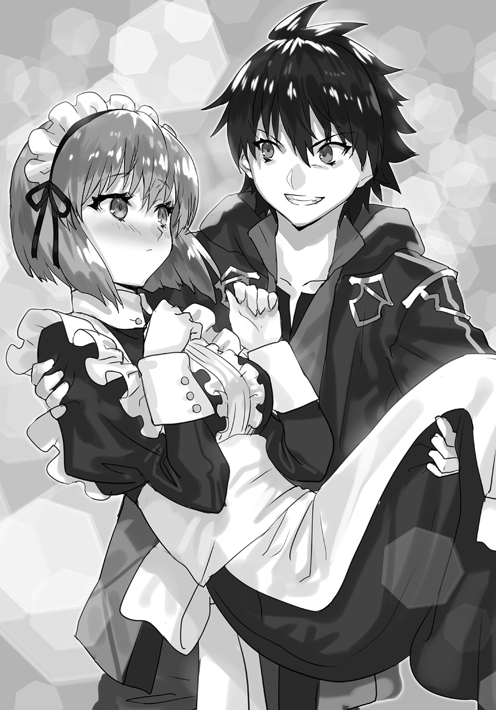
「軽いな。小鳥のようだ」
俺はモーリンを運びつつ、店を出て行った。
スキルをいくつか使った。
ドラゴンの体重を持つ女を抱き上げるためには『剛力』。単純な腕力を底上げするスキルだ。
もう一つは『軽身功』。スキルレベルによっては、体重が、かぎりなく「０」に近づく。
『剛力』は戦士系で、『軽身功』は盗賊や隠密系のスキルであるが、勇者のクラス特性は「全スキル取得可能」だ。
俺の女のために、溜まっていたスキルポイントを浪費するくらい、造作もないことだった。
俺の女のためなら、スキルポイントだろうが、なんだろうが、たとえ命だろうが、いつだってすべてくれてやる。
「マスター。あの......、お、下ろしてください」
「だが断る」
俺は断固たる調子で、そう言うと――。
モーリンをお姫様だっこしながら、店をあとにした。
そこ。アレイダとスケルティア。
いいなー、とか、指をくわえながら見てるんじゃねえよ。
◇
アレイダはＳＴＲとＣＯＮがあがった。スケルティアはＤＥＸ。
モーリンは、驚いたことに、ＩＮＴがあがった。カンストしてるステータスなのに、なんと、〝桁〟が増設されていた。
俺はまんべんなく、どのステータスも向上していた。
レベルと経験値に一切変化はなかったが、ステータスだけは何レベル分もあがった。ラストダンジョンにこもって修行するぐらいの効果があった。
行く先々で宣伝してやるとするか。
〝食べるだけで強くなれる、すごい店があるぞ〟――と。
女のにおい。 「ちょ――！ 嗅がないでーっ！ やーっ！」
ある日の昼すぎ。
たまたま通り過ぎていったアレイダを、俺は振り返って、じっと見た。
いま、なんか、気になったな。
アレイダは見せつけるようにヒップを振って歩いている――わけではなくて、発達した筋肉がもりもり動くので、俺の目には、そう見えているだけのことだ。
もしケツを振って俺の目を惹くような知恵がすこしでもあれば、〝駄犬〟の称号を改めなくてはなるまい。
「おい――、アレイダ」
「うん？ なになにー？」
俺はアレイダに声を掛けた。
あいつはすぐにシッポ振って駆け戻ってきた。
いや。シッポはないが......。俺の目には、シッポをちぎれんばかりに振りたくって、耳をぱたぱたやっている姿が、はっきりと映っていた。
「ちょっと、動くなよ」
さっき感じたことを確かめるために、アレイダに顔を近づけて行く。
「ちょ――!? またぁ......？ またあのアレぇ？」
「アレとは？」
「壁に、ドンってやって......、それで......、優しいこと言って......、わ、わたしが......、好き、って言ったら勝ちだとか、ゆー......、ゲームでぇ――」
「ああ。あれか。あれはもう飽きた」
「えっ？ ちがうの？」
「だっておまえ。チョロいんだもん」
「チョロ......」
なんでこいつは落ちこんでいるんだ？
事実だろう。チョロインをチョロいと言っただけのことだが。
「今日はそれじゃない。......いいから動くな。もじもじするな」
「だっ、だっ、だって......、な、なんか......、へ、へんなことする？」
「しない」
俺は単に、においを嗅ごうとしただけだ。
さっき、通り過ぎていったとき――。アレイダから、なんの香りもしてこなかった。
こっちの世界に、シャンプーだとか、そんなものがないことは知っているが......。
女の子のにおい、と、男が理解しているそれは、大抵、シャンプーやリンスやボディソープの香りなのだと理解はしているつもりだが......。
しかし、なんで、なんのにおいもしてこないんだ？
くんくん。すんすん。俺はアレイダのにおいを嗅いだ。
「な......、な、なっ......、なんなのぉぅ......」
チョロインは、ぐにゃぐにゃになっている。
身をすくめて、髪の毛をふるふると震わせて――。
そして膝頭まで、がくがくとさせている。
こいつ。発情してんの？ 確かめてみたら。濡れてたりすんの？
だがいまはべつにそういうコトをするつもりではない。
そんなのは夜にたっぷりやれる。てゆうか。昼間でもそういう気分になったらスルけど。ギャーギャー騒いでても、ひん剝いてハメるけど。
いまはにおいを確認しようとしただけだ。
「や、やだ......、もうっ......、するなら......、はやく、してよう......」
あーもう。やっぱ勘違いしてやがる。この駄犬（メス）めが。略してメス犬めが。
「勘違いするな。においを嗅いでいるだけだ」
「にお......!? ......って!?」
アレイダのやつは、なんか、ギョッとしている。
「ちゃ......、ちゃんとお風呂入ってるからぁ......、だ、だいじょうぶだからぁ......」
顔を真っ赤にさせて、恥ずかしそうに言う。
ああ。そういえば。こいつ。はじめて拾ってきたときには、すごいニオイだったな。
木枠の檻に閉じ込められていた奴隷だった。身を清めることもできないので、くさくて当然なのだが。
あまりにもバッチくて、触るのも嫌だったので、デッキブラシでゴシゴシやったなー。ギャーギャー騒いでたなー。
昔から。こいつ。うるさかったなー。
「......くっく」
俺が思い出し笑いをすると、アレイダは、きょとんとしていた。
「......いや。......おまえ。昔は、くさかったなと......、くっく」
「しょ――!? しょうがないじゃない!? しょうがないでしょ!?」
「いまは、いいにおいがするな」
まあちょっと可哀想かなと思ったので、俺はそう言って話題を変えてやった。
言葉だけでは、女を安心させることはできない。よって態度でも示す。
抱き寄せて、ふんふん、すんすんと、髪のにおいを嗅いでやる。
特に香りはしない。だが自然な体臭なのか、いいにおいだけはする。女のにおいだ。
「やっ......、ちょっ......。口説いてる？ これ口説かれてる？ それであとで、これはゲームだー、とか......、ゆーんでしょ？」
言わねえって。
アレイダは疑心暗鬼になっているようだ。
俺は言葉を費やすかわりに、態度で示すことにした。
ぎゅーっと、抱き心地のよい女体を、しっかりと胸にかきいだく。
「やっ......、あっ......、ちょっ......、だめっ......、だめだってばぁ......」
アレイダのやつは、ふにゃふにゃになった。
ほかは、どうなんだろう？
俺は、ふにゃふにゃになって、ぐにゃぐにゃになっているアレイダを、ぽいっとうっちゃって、廊下を歩きはじめた。
「えっ!? ちょーっ!? ――捨てていかれたっ!?」
なんか騒いでいる。うちの娘のチョロくてうるさいほう。ほんと。チョロくてうるさい。
◇
「おー。スケ。いたか」
「おりおん。」
屋敷を歩いてスケルティアを見つける。
ぎゅー、と抱きついて、まず確保しにかかる。
「......？ なに？」
うちの娘の静かなほうは、抱きしめても、きょとんとした顔を返すだけ。
チョロいほうみたいに、いきなり発情したり勘違いして騒ぎたてたりしない。
俺は、くんくん、すんすんと、スケルティアのにおいを嗅ぎはじめた。
まずは身長差を使って、頭のてっぺんのつむじのあたりを、くんくんする。
「なに。してる。の？」
「おまえもやっぱり、特に香りはしないなー。ふつうの女の子のにおいがするな」
アレイダと比べると、ややミルクくさいかな。
「スケ。は。......ふつう。」
スケルティアは、にんまりと笑った。なにか嬉しかったらしい。
こいつの喜びポイントは、いまいち、わからん。
「はーい。ばんざーい。」
髪のにおいを嗅ぎ終わったから、ばんざいをさせる。
「ばんざい。」
脇の下を嗅ぐ。髪とは違うにおいがした。そういえば人間にも〝フェロモン〟とかいうのがあるそうな。スケルティアはハーフ・モンスターだから半分は人間だ。
やべえ興奮しそう。
胸も嗅いだ。お腹も嗅いだ。だんだん下へと、おりてゆく。
「そこは。だめ。」
肝心のところに辿りつく前に、頭をがっしりと押さえられてしまった。
「抵抗は。無意味だ」
俺はそう言って、強引に、においを嗅いだ。
「.........。」
スケルティアは目を閉じて、ぷるぷると身を震わせて耐えている。
やべー。フェロモン嗅いだせいか。興奮してきた。
このまま〝いたして〟しまおうか？ ......と、一瞬、思いもしたが。
元々、そういうつもりで始めたことではないので、次に行くことにする。
「......え？」
立ち去る俺の背を、スケルティアの意外そうな声が追ってくる。
だが俺は立ち止まらなかった。
次の獲物が、俺を待っている。
◇
「モーリン。ここにいたのか」
キッチンでモーリンを見つけた。
メイド姿で立ち働くその後ろ姿に、俺はそっと寄り添って――。
背後から、きゅっと、抱きしめにかかった。
「あらあら。どうしたんですか？」
俺は無言で、モーリンの髪に顔をうずめる。セミロングの髪に、うなじが見え隠れしている。髪と肌の境界線上を、俺は狙った。
ちっこいスケルティアとか、普通のアレイダと違って、モーリンの背丈は俺と変わらないくらいある。
二人を相手にしたときとは違う感覚だ。小娘を手玉に取るのとは違う。大人の女を相手にしている実感がある。
「そういうことは、もっと若い子にしてあげるとよいかと」
おいたをする子供にでも向ける感じで、やんわりと言う。
いまでもやっぱり、姉ないしは母として、接してこられるなぁ。
いつになったら「恋人」あるいは「妻」となるのだろうか。まあゆっくりじっくり攻略してくか。なにせ時間は「一生分」あるのだから。
「もうやってきた」
「ま」
モーリンの声色に、ちょっとだけ起伏がつく。
俺を完全に受け入れていた柔らかな体に、ちょっとだけ、芯が入って固くなる。
「勘違いしていないか？ 俺はただ、においを嗅いでいるだけなんだが？」
「え？ あー......。はい」
限りなく全知に近く、限りなく全能に近い――。大賢者であり完璧超人であるモーリンでも、間違いを犯す。
俺に関わることでは、特に、しょっちゅう間違っている。
モーリンの〝恥じらい〟は、レアなリアクションである。
あまりに可愛くて、このまま〝だーっ！〟といってしまいたいところであるが......。
やはり今日は〝そーゆーの〟ではないので、自粛する。
俺は自重はしないが自粛はたまにする。
「あ、あの......？ なぜ、においをかがれているのでしょう？」
おお。すごい。今日は「あのあの」言ってるＳＳＲモーリンまでゲットしたぜ！
頭の回転の速い人間というのは、「あの」だの「その」だの「えっと」だの「あー」だの「うー」だの、その手の言葉は、口にしない。
会話の情報伝達速度は一分間に三〇〇文字程度と言われている。つまり一秒に五文字。一単語にも満たない。
頭の回転の速いやつというのは、「あの」だの「その」だの「あー」だの「うー」だの言って、言葉を探すための時間稼ぎなんて、する必要がない。
なので大賢者であるモーリンが、「あのあの」言っている場面というのは、激ＳＳＲ的にレアなのであった。
萌えー。
「あ、あの......？ なぜ、においを？」
「おまえは俺に嗅がれて困るにおいでもさせているのか？」
「えっ？ いえあの、その......、おっしゃる意味が......、わかりませんけど......。ああっ、そこはっ――」
逃げようとするモーリンを、俺はがっちりとホールド。
そして、〝くんかくんか〟しにいったのは――腋の下。
「えっと、あのう......、そういうことでしたら......、その、寝室へ――」
「おまえ。スケと同じこと言うな」
「えっ......？ そ、そうでしたか？」
モーリンは、なにやらショックを受けているっぽい。
ふははは。おもろい。
俺は大賢者にダメージを与える技――〝大賢者スマッシュ〟を連発した。
「じたばたするな。それではアレイダと同じだ」
「そ......、そう言われましても......っ」
唇を嚙んで耐えている。普段のクールさとのギャップに目眩がする。
このまま押し倒――さない。
断固として初志貫徹だ。
よし。誘惑に負けたら、俺は腹を切るぞ。いま決めたぞ。
腋から胸、胸から腹、だんだんと下に下がってゆく。
そのあたりから下は嗅ぎにくいので、キッチンの台にお尻を載せさせた。
「食べ物を調理する場所にお尻を載せるのは、少々抵抗があるのですが......」
モーリンはうだうだ言ってる。却下だ却下。
腰を嗅ぐ。そして下腹部へと移る――。女の部分は入念に嗅いだ。
「も......、やめ......、お願......、後生ですから......」
目線を持ちあげてみれば――モーリンは顔を真っ赤にさせている。
おー。すごい。ド赤面。
俺は〝大賢者殺し〟の称号をもらってもいいのではあるまいか？
「こちらの世界の女からは、香りがしないことに気がついてな」
「香り？」
モーリンは赤くさせた顔で、天井の一角を見つめた。
〝親戚〟とやらと、異世界交信を行っている。
俺はそのあいだ、人形みたいになってしまった女のにおいを嗅ぐ。
なんか背徳的な気分。
ややあって――。
「――香料のことですね。マスターのおられた世界では、洗顔料や整髪料、はては石鹼にまで、あらゆるものに香料が含まれているのだとか」
「そうなのか？ ......そうだったかもしれないな」
特に意識していなかったが、そうだったかもしれない。あらゆるものからにおいがしていた......ような気もする。
「あちらの世界では、香料がありふれたもののようですね。石油化学工業？ ......なるものがあって、大量に安く生産できるのだとか」
「詳しくは知らないな。そういう専門家でもなかったので」
「マスターの世界の常識を、こちらの世界に、そのままお持ち込みになられても困ります。こちらでは、産業革命？ ......というのも、まだ起きていないんですから」
慣れない言葉が出てくるたびに、ちょっと怪しくなる大賢者、萌え。
「どう困るっていうんだ？」
女の部分のにおいを嗅ぎながらモーリンと会話する。
モーリンは澄ました顔で難しい話題をしているものの、においの変化から、俺には丸わかりだ。
やっべー。やっべー。やっべー。
マジでこのまま襲っちゃいそー。俺。切腹することになっちゃいそー。
「あの......、そういうことでしたら......、その......、足首のところを......」
「ん？ 足首？」
そんなとこにモーリンの性感帯あったっけ？
俺はずっと下に降りていった。足を越えて、言われた場所――足首のにおいを嗅ぎにいく。
「あ......？」
なんだろう？ 花のにおい？ それとも果物のにおい？
薔薇と柑橘系の中間くらいの香りが、モーリンの足首から漂ってくる。
「香油は貴重なものですので、一滴だけ」
ほー。へー。はー。
こちらの世界の女からは、女のにおいしかしないと思っていたが......。
モーリンからは香りがした。さすがモーリンだった。大人だった。
◇
後日――。
「ほらー！ オリオン！ どうよ、どう！ わたしもにおいー！ するでしょー！」
香りをぷんぷんさせながら、アレイダがドヤ顔をする。
「そうだな」
「このあいだのダンジョンの稼ぎ。ぜんぶ使っちゃったー！ おこづかい！ ぜんぶ突っこんだー！」
ばかだ。ばかがいた。
伝説の武器防具が買えてしまう額を、ちっちゃな小瓶一つに突っこむか。
最近、出かけるダンジョンは、実入りもいいし。この屋敷を買ったときの値段よか高いんだけどな......。
しかもその瓶を、全部一度に使っちまうか。
「どう！ いいにおいでしょー！ さあー！ 嗅げーっ！」
「どうでもいいけどな。あんま近くに寄らないでくれるか？ ......臭いんだよ」
こいつはチョロインでありゲロインでもあるが、クサインでもあった。
「く――くさい!? くさいって言われたあぁぁーん！ あーん！ あんあん！」
泣いてろ。ばーか。
不幸の手紙 「どどどどど、どうしよう！ 誰かに読ませないとっ！」
「やったー！ 宝箱ーっ！」
剣を高々とつきあげて、アレイダが勝ちどきをあげている。
宝箱があった。
まあ。部屋を襲撃して、固定エンカウントの多種族構成による一団を一掃したのだから、宝箱ぐらい、出ても当然だ。
ダンジョンには、ランダム・エンカウントと、固定エンカウントがある。
通路で出くわす敵は、だいたい前者だ。徘徊している敵である。
それに対して固定エンカウントの敵というのは、その場所に行けば、必ず遭遇する敵のことを呼ぶ。
まあ、必ず、といっても、本当に必ずいるわけではない。
空き部屋ということも多々ある。たとえば先客が根こそぎにしていった場合など――。
以前、アレイダとスケルティアを連れて、街の近くの、初心者冒険者向けのダンジョンでパワーレベリングしていたときには、すこし迷惑をかけていたかもしれない。
俺たちのあとに訪れる冒険者たちは、無人のダンジョンに呆れていたことだろう。
だいたい、どこのダンジョンでも、根こそぎにしたら、まあ、二、三日くらいは、なにもいなくなる。
逆に言えば、二、三日もすれば、なにかしら涌いてくるともいえる。
モンスターの生態は、いまだ解明されきってはいない。
どこから来て、どこへ行くのか――。
オークやゴブリンといった、通常の繁殖方法によって、普通の生物と同じように増える種族もいる。植物系は文字通りに〝生えて〟くる。
どこからか〝出現〟したとしか思えない増えかたをする、魔法生物のようなものもいる。
生物の一種ではあるのだろうが、この世界で生まれたわけではなく、異次元から時空を渡ってくる悪魔系のモンスターもいる。自然エネルギーの申し子である精霊系のモンスターもいる。どう見てもおまえ機械だろ、という、マシン系のモンスターもいる。
部屋でエンカウントする固定モンスターは、多種族構成となる。
構成するモンスターの種類によっては、戦略は、まったく異なる。
たとえば今回の部屋などは――。
数ばかり多い獣人のザコ敵のほかに、火系エレメントの遊撃隊がいた。司令塔の悪魔魔道士が、これまた厄介で、仲間を回復させるわ、バフかけるわ。こっちのバフを剝ぎ取ろうとしてくるわ。
最初に仕留めようとしても、仲間の後ろに隠れてしまうので、前衛をなぎ倒していかないかぎり、手が出せない。
あー、遠距離攻撃ユニット、ほしいわー。
弓だのクロスボウだの使い手だとか......。魔法使いでもいい。
むしろ魔法使いがベストだな。
あー、ほしいわー。
前衛のガチ物理さんのアレイダがいて、攻めも守りも変幻自在の中衛のスケルティアがいて、これであと、回復と攻撃と両方できる魔法使いがいたら、最小構成で完成するんだがなー......。
無論、なんでもできる万能クラスの『勇者』と、魔法最強の『賢者』はいるわけだが――。
俺らが出ていってしまうと、このへんの敵だと、やっぱり一撃で掃討してしまうので......。なるべく手を出さない方針でいる。
具体的には、二人が倒れて、おっ死ぬまで。
「今回は、だいぶ、苦戦していたようだな」
「ね！ それより！ 宝箱！ 宝箱っ！」
「うるさい。ぴょんぴょんすんな。宝箱は逃げない。まずはいまの戦いの反省会だ」
ワンコの躾はすぐにやる。動物教本にも書いてある。うちのワンコは特におバカだから、きっちり守らないとならない。
今回の部屋は、前衛のアレイダと、中衛のスケルティア二人だけでは、相当、苦戦していたようである。
火系エレメントの敵がまじっていたので、いつもの蜘蛛の糸で絡める一網打尽作戦が使えずにいた。
あれは強力なハメ技であるが、最近の二人は、あれに頼ってばっかりいる。
ぜんぜん。よくない。強い戦術に頼りきりでは工夫しない。成長しない。格下には滅法強いが、〝格上〟に出会ったときには、あっさりと殺られてしまう、そんな貧弱キャラが育つだけだ。
――と、いうようなことを、俺は淡々と説明した。
二人が苦戦していた理由も、すべて解説してやった。
――と、いうのにだ。
「わかったからー......、もー、いいでしょー？ 宝箱ー、宝箱ーっ？」
うちの娘の駄犬のほうは、ご主人様のありがたい話を聞いちゃいねえ。
このアマ。犯すぞ？ 裸にひん剝いて、石床のうえで滅茶滅茶に犯すぞ？
......だめだな。ご褒美にしかならんな。
そういやこれまでエンカウントの敵ばかりだったので、確定で出てくる宝箱は、はじめてなのか......？ こいつって？
だからぴょんぴょんしてるのか。
「ねー！ 開けて開けてー！ わたしー！ 開けていいのーっ!?」
「馬鹿。鑑定魔法が先だ」
専門の盗賊がいないから、あんま、開けたくないんだけどなー。
罠の有無および種類を鑑定する。
......ふむ。シロと出たか。
罠はなし、と、出た。
本来なら、複数人で鑑定魔法を用いて、鑑定の精度を上げるところだが――。
「開けていいぞ」
「わーい」
こいつは駄犬ではあるが、いちおう、世間一般的には上級職とされるクロウナイト。
魔法爆雷に至近距離で巻きこまれても、ギリ、生きているだろう。
かちゃり、と、箱が開く。
「ん？ なに？ これ......？ 巻物？ ......ちぇっ」
入っていたのは、一巻きの巻物。
武具を期待していたのだろう。アレイダはあからさまに落胆した顔になっていた。
しかし、そう落胆するものでもない。
見つかった巻物が、もし未習得の呪文であれば、ヘタな武具が出るよりお得なこともある。
使わない武具は売ってカネにするしかないが。俺たちはカネならこれ以上必要がないぐらいに持っている。このあいだラストダンジョンに行って、入口付近で二人を鍛えたら、まー、儲かった。しばらく金策をする必要がなくなった。
巻物は、見た目は地味だが、中身次第では宝物だ。
魔法の呪文には、レベルがあがると、自動的に取得できるものと、誰かに教わるか、巻物から取得しなければならないものとがある。
自動的に取得する呪文は、その職業を代表する特性のものである。たとえばナイト系では治療魔法。闇の騎士たるクロウナイトではエナジードレインなど。
だが本当に強力なのは、自動では身につかない呪文のほうだったりする。習得可能ではあるが、困難なり条件なりを要する。そういう呪文やスキルのほうに、強力なものが揃っている。
苦労して手に入れたもののほうが、見返りが大きい。――ま。当然の常識だわな。
アレイダがいっぺんクロウナイトに闇落ちしたのは、さらなる上位職を目指すための腰掛けであるから、そういうことは一切やらせていない。
単なる素のスペックの駄クロウナイトでしかない。
「なんかわたし......、いま悪口言われてる気がするー......」
「気のせいだ」
じっとりとした目線に、俺はしれっと、そう答えた。
「こーいうのって......、呪い......とか？ かかっていることあるんでしょ？」
アレイダが気味悪そうに言う。
宝箱の中の巻物を見つめるだけで、手を出さないのは賢明であるが......。
俺はそのケツを蹴った。
「なにやってる。とっとと広げて、読んでみろ」
「だっ――だって！ 呪いとか掛かっていたら――!?」
「知ってるか？ マンドラゴラの抜きかた。犬に紐を結んで、引っぱらせて、抜くんだぞ」
「犬うぅ！ わたし！ 犬うぅぅ！」
「スケ。......が。読む？」
スケルティアが、そう言った。最近、スケのやつも、文字を覚えた。
外国語を習得するわけではないので、文字と音の対応関係さえ学ぶだけだ。覚えるのはわりと早かった。じつは頭も良かった。種族特性でＩＮＴも上がってきているので、そのうち、魔法を操る蜘蛛系種族に進化してゆくといいのかも？
「いや。わたしが読むわよ」
アレイダがきっぱりと言った。
さっきまでグズグズ言ってたわりには、スケがやると言ったら、自分がやると一瞬で決めた。
俺。こいつのこういうところは好き。
うちの娘たち――と、二人を一セットに考えることはよくあるが、そういえば、どっちが姉でどっちが妹かということは、考えたことがなかったな。
アレイダが姉だな。スケルティアは妹だな。
「スケ。......も。読む。一緒。」
「え？ あ......、うん。まあ......、いいけど」
姉は妹に弱かった。
俺は笑いをこらえるのに、苦労していた。
人身御供は、一人で充分なんだが......。
まあ、仮に呪いの巻物だったとしても、大賢者に解呪できない呪いは、そうそうないし。こんな初心者向けダンジョン――おっと、世間一般的には、充分、高レベル・ダンジョンだったな。勇者業界からすると、駆け出しの初心者になるというだけで。
まあ、こんな勇者業界・初心者向けダンジョンで出てくるような呪いが、そんなアブナイはずがない。
「えーと......、なになに......？」
アレイダとスケルティアは、石の床の上に、ぺたんと女の子座りして、二人で巻物を広げにかかった。
「あれ？ 共通語で書いてある？」
「ん？」
おや。ハズレだったか。
呪文の巻物なら、共通語で書かれているはずがない。
「共通語なら読めるだろ。読んでみろ」
俺は言った。
「え？ ええっと......」
アレイダのやつは、文字を指でなぞりながら読みはじめる。
なんでか。こいつ。この蛮族姫君。読むとき、指でさしながら読むんだよなー。
萌えるから、やめ、っつーの。
「この巻物は......、呪いの巻物です......、って！」
ぎょっとした顔をアレイダは向けてくる。
「いいから読め」
「だってだってだって――！ 呪いって書いてあるのよ！ ほらここに！」
呪いの巻物です、と書かれた、呪いの巻物があるわけ、ねーんだけど......。
「......その先は？ なんて書いてある？」
「えっとえっと......、ええと......、この巻物を読んだ者は、三日以内に同じ巻物を書いて、五人以上に渡さなければ、不幸が襲いかかってくるでしょう......って！ そう書いてある！ そう書いてあるんだけどーっ！」
「落ちつけ」
ぎゃーぎゃー騒いでいるアホ女のケツを、俺は蹴り飛ばした。
こいつのケツ。蹴り心地がいいんだよなー。つい蹴ってしまうんだー。
蹴り心地だけでなくて、抱え心地もいいんだが。つい抱えこんでしまうんだが。後ろからな。
「呪われたー！ 呪われちゃったー！」
前のめりになって石の床とキスしていたアレイダは、顔を持ちあげると、抗議の一つもせず、またギャーギャーと騒ぎたてはじめた。
「スケさんどーしよー！ どーしよー！ わたしたち呪われちゃったー！ だからわたし一人で読むって言ったのに！ そしたら呪われるのわたし一人ですんだのにーっ!!」
「のろい。......って。なに？」
スケルティアは、きゅるんと、頭を傾けている。
ころす。喰う。寝る。――の、シンプルライフの野生の蜘蛛生活には、「のろう」はなかったっぽい。
「呪いよ!! だから、つまり――!!」
「どんな災厄が襲ってくるって？」
「だから災厄なの！」
「だから、どんな？」
俺は、聞いた。
「ええと......、どんなだろ？」
答えが存在しないということに、アレイダはようやく気づいたようだ。
「脅しとしても、三流だな。脅すからには、脅した内容が確実に履行されると、相手に思わせなくてはならない。その内容が確実に現実であると確信させなくては、脅しとは、単なる言葉でしかない。単なる言葉など、なんの意味も持たない」
「それは......、そうだけど」
「たとえば小悪党を捕まえて拷問に掛けるのだとする。質問に答えなければおまえの指を一本落とす。それでも答えなければもう一本落とす。二本目以降も順に全部落とす。――と、そう宣言しておいてから、本気でやると思っていないその相手の指を、一本、落としてやれば、残りの四本についても本気だと確信させることができる」
「な......、なんで拷問方法の話になってんの？」
「俺は普段からおまえたちに〝俺は助けない〟と言っているな。その脅しについて、おまえらは確信を持っているはずだ」
「現実に......、助けてくれてないよね？ わたし死にかけて、びっくんびっくんいってたって、放置するし......」
びっくんびっくんいってるくらいは、まだ、わりと平気な領域だしなー。
死んで十数秒ぐらいなら、じつは蘇生魔法はいらなくて、まだ大回復や全回復で間に合ったりする。
「わたしたち、戦っているときにも、あーでもないこーでもない、ダメ出ししてくるだけで、どんなに苦しい戦いでも、絶対、手伝わないよね？」
「当然だ」
俺が手伝ってしまったら、こいつらの訓練にならない。
「ひどいのよね。極悪人よね」
過保護にしないで適切に扱うだけで極悪人かよ。
「安心しろ。骨ぐらいは拾ってやる」
「ほら！ 骨にするし！ 骨になるまで助けないって宣言だし！」
藪蛇だった。
ジョークで潤いを与えようと思ったのだが。こちらの世界にはこのジョークはないのかも。
「死んだ。ら。......食べてね？」
スケルティアも、長いこと考え抜いたあとで、そんなことを言った。
自分が死んだあとのことを、頑張って、考えてみたらしい。
野生の生物はそんなことは考えない。死んだらどうなる？ ――なんて意味のないことを考えるのは、人間だけだ。
だからスケルティア的には、これは、頑張った。
言葉の意味は、俺が推測するに――。
自分が死んだあとには、きちんと食べて、有効活用してね？ ――と、そういうことらしい。
そのへんはいまだに野生の生物。
あとついでに、実行不能。
一〇〇％モンスターなら食べてもいいのかもしれないが、半分人間のハーフ種族は、ちょっと、むーりー。
「......おほん。まー、つまりだな。俺が言いたいことは......」
どうも、俺の誠意が、娘たち二人に伝わっていないようなので......。
「大丈夫だ。こんなん。気にするな。俺がそう言ってるんだから――信じろ」
◇
「......と、いうようなことが、あったわけだ」
「さようでございますか」
夕食も終わって、二人きりになったあとで、俺はモーリンにそう言った。
ナイトガウン姿で、ワインのグラスを俺に差し出すモーリンは、昼間のメイド姿とはまた違った顔を俺に見せる。
アレイダやスケルティア――娘たちには見せない恋人としての顔を、俺は独り占めだった。
いちおう育成状況は俺とモーリンの間で共有している。俺のかわりにモーリンがついて、二人をダンジョンに連れてゆくこともある。
「こっちには、〝不幸の手紙〟っていうのは......、ないのか？」
「不幸の手紙？ ......で、ございますか？」
モーリンは中空を見つめる仕草をする。
別の次元にいる〝親戚みたいな存在〟と交信して聞いているのだと、このまえ語っていた。
「実行力のない文面における脅しのみで、自己増殖する情報遺伝子......とのことですけど」
「そんなたいしたものでもない。俺のいた世界で流行っていた単なるイタズラだ」
「と、伝えておきます」
異世界モーリン、くっそ使えねえ。
「森はくっそ使えない。......ああ怒りましたね。交信終了」
「思考まで読むんじゃない。......おまえの親戚は怒るんだな」
「つい最近。感情表現が豊かになりました。なぜでしょう」
向こうも、きっと、そう思っているはずだぞ......？
五十年前のモーリンは、ほんと、機械かと思ったしなー。
「異世界モーリンのやつを、羨ましがらせてやるか」
俺はモーリンの細腰を抱き寄せた。
「ばくはつしろ、と、言われたら、俺たちの勝ちな」
「......問い合わせますか？」
「いっそ実況中継してやれ」
俺はモーリンを押し倒した。
ソファしかないが、それで充分だ。
◇
数日が経った、ある夜のこと――。
俺が支度を調えていると、モーリンがやってきた。
俺の身支度を手伝ってくる。
女の手で服を着せられると、戦意が向上する。
「あいつらは――？」
「寝室です」
上着を着せた俺の背を撫でながら、モーリンが言う。
俺の着ている上着は、見た目は単なるロングジャケットでしかないが、防御力でいえば、なかなかの逸品だ。
頭おかしいほどの強化魔法が掛けられているおかげで、布素材であるくせに、そこらのガチガチのフルプレートよりも、よほど性能が高い。
見た目も、向こうの世界の服装に、なんとなく似ているので、気に入っている。
なにより動きやすいのがいい。
もともとは密偵用の布装備だから、動いても音がまったくしない。
夜、闇夜の中で戦っていても、すくなくとも俺からは、一切の音が発生しないはずだ。
寝てる二人を起こす心配は......。
「......寝てるのか？」
モーリンは、くすっと微笑んだ。
「二人で抱きしめあって、震えていますよ」
はっはっは。
うちの娘のバカなほう。バカかわいー。
スケルティアのほうは、無表情で抱きしめられているだろうが。
こっちも、無表情かわいー。
「さて......、行ってくる」
「ご武運を」
武運が必要なほどじゃない。
片手を振って、俺は屋敷の外へ出た。
こちらの世界における〝呪いの手紙〟は、イタズラじゃなかった。
ホンマもんだった。
気になったので、リズに依頼して、いちおう調べてみたら――。
何人も呪い殺されている、ホンマもんだった。
やべえやべえ。てっきりイタズラだと思ってたさー。
アレイダが手紙を見つけて、スケルティアと二人で読んで――あれから三日が経っていた。
今夜は手紙に書いてあった期日の日である。
〝呪い〟の本体を迎撃するために、俺は霊的戦闘準備を整えて、待ち受けていた。
屋敷は亜空間の中にあるから、霊だろうが呪いだろうが、なんだろうが、入ってくるためには、その通路は一箇所しかない。
外の馬車と繫がる時空通路の出口で俺は待っていた。
貞子だか伽椰子だか、なんだか知らないが――。
俺の娘たちを呪い殺そうとか、どこのどいつだ。
俺は娘たちに「安全」と約束した。それが噓であってはならない。
「安全」かつ「無害」にしてやる。さあこい。
俺は元勇者の顔に、凶悪な笑みを浮かべた。
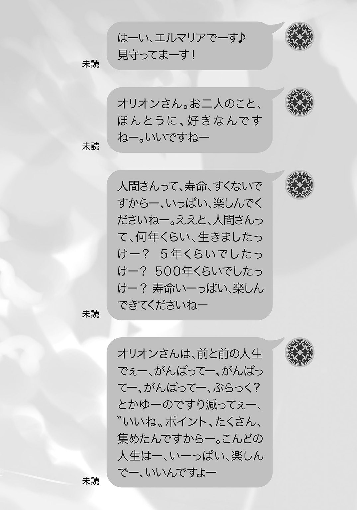
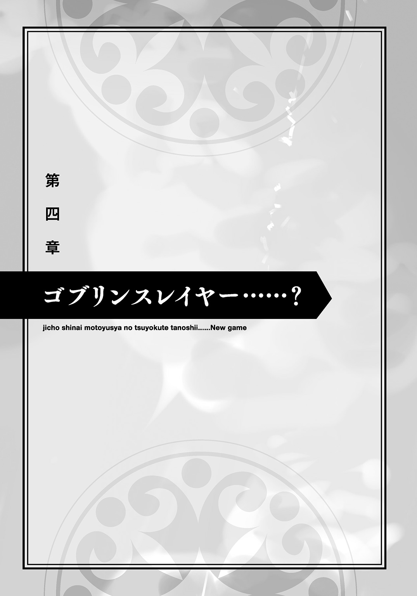
助けを求めてきた女 「助けてくれたら！ なんでもします！」
かっぽん。かっぽん。
山間の道で、馬車を進ませる。
歩くより速いか遅いか、そんな程度の速度で、ゆっくりと進む。
空はどこまでも青い。そして道はどこまでも続いている。この道は、世界のどこにだって続いている。俺はこの馬車で、愛する女たちとともに、どこへだって行ける。
勇者時代の道は、「魔王討伐」という目的地にしか繫がっていなかった。それはそれは窮屈な旅であった。
かっぽん。かっぽん。
規則正しく、それでいて絶妙な心地よさの「Ｆ分の一揺らぎ」の、蹄の音が聞こえてくる。
馬は良い娘だった。俺が手綱を操っていなくても、勝手に歩いていってくれる。俺が居眠りをこいていると、手綱を引いて起こしてくれたりもする。
どっちが御者なのか、わからない。
はっはっは。いい娘だなぁ。
なでなで。
手を伸ばしてお尻を撫でていたら、馬が立ち止まった。
ん？ 尻をさわって怒ったか？ そんなわけはないな。
俺はやや遅れて、その気配に気がついた。
何者かが森の中を移動している。こちらに近づいてくる。人サイズ。おそらく一人。なにかから逃げているみたいな、急いでいるような、切羽詰まった足取りだった。
やがてその人物は、馬車の前の道に姿を現した。
森の中から道に出て驚いている。そしてこちらを――馬車と、その御者台に座る俺を見て、その顔に浮かんだ表情は......、あれは安堵か？ 希望？ 懇願？
美人ではあった。だが血と泥で汚れていた。
返り血と泥とは、激しい戦闘と、そのあとの逃亡劇を、濃厚に物語っていた。
なにかワケあり。
「ん？ どうしたの？ なんか止まった？」
馬車の中から、ひょっこりと、アレイダのやつが顔を出す。
「女の人？ ......どうしたの？」
「さあな」
俺は手綱をアレイダに預けると、馬車を飛び降りた。
立ち尽くしている女に向かう。
少女と女の――ちょうど中間くらいの年齢か。
汚れていることをさっぴくと――とびっきりの、美少女だった。
スリムで野性味のある肢体に、鳥の羽をあしらった羽根飾りを身に帯びている。
職業としては、レンジャー系かシャーマン系か――。あるいはどちらも兼ね備える上位職か。
鑑定スキルを発動させずとも、そこそこの実力者なのはわかる。アレイダやスケルティアと組ませてダンジョンに送り出しても、それほど見劣りはしないだろう。
そういや遠距離攻撃できる後衛って欲しかったんだよなー。レンジャーなら、当然、遠距離武器を使うんだろうし、シャーマン系はバフが充実してるんだよなー。
まあそんなことよりも、見るからに尋常ではない彼女に、事情を尋ねるのが先決だろう。
血まみれなのは返り血で、本人の怪我はたいしたことはない。せいぜい、逃げているときに木の枝で擦った引っ搔き傷程度だ。
「どうした？ なにがあった」
「た......、助けて......」
見るからに焦燥しきった彼女は、俺に助けを求めてきた。
声を掛ける前から――。視線から――。そんなことじゃないかと思った。
「ゴブリンに――、みんなが――」
「待った」
訴えかけてくる彼女を遮って――俺は、ストップをかけた。
「悪いが。他をあたってくれ」
「ちょ――!? オリオン！ なに言ってんのよ！ 助けてあげましょうよ！」
アレイダが馬車の上から、ぎゃーぎゃーと叫ぶ。
うちの娘のうるさいほうは、ほんと、うるさい。これがうちの娘のクールなほう――スケルティアであれば、その相手が死んでるか生きてるかぐらいにしか興味がないのだが。死んでたら「たべていい？」となって、生きてるほうには、ぶっちゃけ興味がない。
「俺は人助けはやらない」
俺はアレイダにそう返した。
勇者だった頃には、目に付く者は、すべて助けていた。自分で言うのもなんだが、かなり品行方正な勇者だったと思う。見返りなど一切求めず、滅私奉公で働いた。
困っている人がいれば助けた。救った村や街は数知れない。
そうやって、なにもかも捨てて、民衆のために戦った英雄に対して――人々の願ったことは、「魔王を倒して死んでくれること」だったわけだ。
その通り。俺は死んだ。相打ちとなって魔王を倒して――。
俺はもう二度と、他人のためには戦わない。人助けなどしない。そう決めたのだ。
「勇者でも探して頼んでくれ」
「勇者は......、モータウロス様は、ゴブリンに捕らえられました」
彼女はつらそうに、そう言った。
「はあぁァァ？」
いや。失敬。思わず変な声が出てしまった。勇者がどーとか、言ったからだ。そして勇者がゴブリンに捕らえられたなどと、言ったからだ。
どこの世界に、ゴブリンに倒される勇者がいるんだ？
それに勇者の職業は、あれは特殊で――。世界で、ただ一人しか同時存在できない。
いまこの世界には俺が存在しているので――。つまりそいつは、〝ニセ勇者〟ということだ。
あー、いたなー。前々世でもー、ニセ勇者ー、いっぱい、涌いてたわー。
ゴブリンは数こそ多いが、けっして、強いモンスターではない。
ただのゴブリンだけなら完全なザコだ。初級冒険者にとってはいいカモで、稼ぐネタにもなる。
ただし用心棒的にホブゴブリンが行動を共にしていたり、ゴブリン・ロード――王に率いられた部族であったり、ゴブリン・シャーマンの守護を受けていたりすれば、話は別だ。
途端に中級冒険者でも手を焼くような存在へと変わる。
〝ゴブリン事故〟と、冒険者のあいだでは呼ばれているが――。
ゴブリンに返り討ちにあってしまう初心者が後を絶たないのは、〝ゴブリンは弱い〟という先入観のまま、侮ってかかるからだ。
準備もせず、メンバーも揃えず、敵集団の数も確認しないで力押しで赴けば、事故だって起きる。
ゴブリンは弱いモンスターだが、罠を使うぐらいの知恵がある。仲間がいくら殺されてもまるで怖れない。これは勇猛なわけではなく、頭のネジが吹き飛んでいるからだ。
モンスターを研究している学者たちの一説によれば、非常に多産で成人するのも早い種族であるために、戦闘でバンバン損失の出ることが〝口減らし〟になっているのだとか。
また、やつらは人間の女に異様な執着を示す。味方の屍の山を築いても、女は生かして捕らえようとしてくるぐらいだ。どうも美的感覚が、なぜだか人間に近く、同族のメスが醜く見えて、人間の女は美しく見えるのだそうだ。
捕らえられた女がどうなるのかは――。わざわざ語るまでもないだろう。
「助けて！ ――お願い！ 助けてください！」
女は俺にすがりついてきた。
身に帯びた鳥の尾羽が揺れて華やぐ。こんな場面でもなければ、その羽根は女を美しく引き立てていたことだろう。
「おまえの男を、なぜ、俺が助けなくちゃならない？」
しかも、ニセ勇者を？
「モータウロス様だけじゃなくて！ グレーチェルとシズルも――！」
おや。女の名前か？
なんちゃらとかいう名前のニセ勇者だけでなくて、女もいるパーティなのか。てゆうか。女が三名か。男一人か。
なにそのハーレム？ ばくはつしろ。
「ねえ、オリオン、助けてあげましょうよ......？」
「うるさい。おまえは黙ってろ」
これは俺の問題だ。俺の人生の問題だ。
二度と他人のためなんかで戦わない。そう決めた。
だからだめだ。答えは絶対にノーだ。
「この道をまっすぐ行ったところに街があった。そこで冒険者でも雇え」
「どのくらい行けば......」
「二日だな」
徒歩なら、そのくらいだ。
「それじゃ......、間にあわない......、みんな死んじゃう......」
彼女はがっくりとくずおれた。
心の折れかけた顔で、懸命に――俺の足元にすがってくる。
「助けて......、助けてくれたら！ なんでもします！」
俺の心が。ぴくりと動いた。
心っつーか。下半身の一部だが。
具体的には四五度ぐらいだ。
血塗られて狂気に染まりかけた目で懇願する女に――欲情してしまった。
「あっちですこし話そうか？」
「ちょ！ ちょ――っ！ どこ行くの！ オリオンどこ行くの！ あっちってどっち！ ちょ！ ちょおぉぉーっ!?」
うちの娘のうるさいほう。うるさい。
俺は娘の手を引いて、森をすこし入っていった。
大きな木が、一本、立っている。その幹に手を突かせる。
そして、背後からのしかかりながら――。
「おまえ。名は？」
「クザク......と、いいます」
娘はこれからなにが起きるのか、完全に、わかっているようだった。
それどころか瞳が濡れていた。
人は生命の危機に瀕したとき、種族保存本能が強く働くという。俺も自分で覚えがある。戦闘のあと。血を浴びたあと。殺し殺されたあと。ひどく女が欲しくなることがある。そういうときのセックスは死ぬほどキモチいい。
アレイダもその気があって、ダンジョン帰りのときには、狂気を秘めた妖しい目でもって、激しく求めてくることがある。
それも向こうからだ。いつもならロマンティックにしてくれなきゃやだー、なんて言ってるくせに、即ハメで、自分から腰を振る。
「これから。おまえを。俺の女にする」
俺は、そのように宣言した。
「はい」
娘は長い睫毛を伏せてこたえた。
「そうすれば、助けていただけますか？」
「俺の女の敵は、俺の敵だ。俺は人助けはやらないが、俺の女は守る。絶対にだ」
「はい。貴方の......、女となります」
交渉成立。
俺はクザクを木につかまらせると、背後から繫がった。即ハメだった。
えっほ。えっほ。
俺はハッスルした。
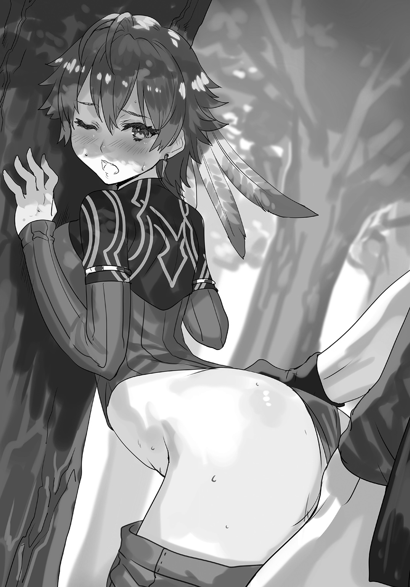
◇
俺が賢者モードになって――。完全にスッキリとして――。テカテカ、ツヤツヤの顔で――。
妙にしおらしくなってしまったクザクの手を引いて、戻ってくると――。
しらー......と、凄まじい目付きで睨まれた。
御者台の上であぐらをかいたアレイダが腕組みをして、鼻息を荒く噴き出して、じっとりとした視線を、俺に投げ下ろしてくる。
「不潔」
いや。毎晩毎晩、絞め殺されるニワトリみたいな声を上げているオンナに、そんなこと、言われたくないのだが......。
「話はついたぞ。助けに行く」
「さっさと助けてあげればいいのに。わざわざ言いわけなんて作らなくても――」
「――だから、さっさと、してきたわけだろ」
「うるさいばかしんじゃえー！」
なんか色々投げつけられた。
馬車からスケルティアとモーリンが降りてきた。
スケルティアは完全武装。モーリンはメイド服だ。つまり出陣しないということだ。その必要もない。
「案内してくれるか」
俺はクザクに言った。
彼女はほんのりと頰を染めると、こくりと、力強くうなずいた。
ゴブリン襲撃 「一匹も逃がすな」
俺たちはクザクに案内されて、山の木々の間を移動した。
クザクは本来の高レベル・レンジャー職のスペックを遺憾なく発揮していた。先行する彼女を追うのは、うちの娘たちでもしんどそうだ。
クザクは憔悴していたさっきまでが噓のように活力を取り戻している。
俺が犯しまくったせいである。
単に犯していただけではない。性交することでＨＰとスタミナとＭＰをすべて回復させる特殊なスキルを、俺は取得していて――。俺のそれらを、それぞれを分け与えて、満タンにしてやっていた。
いわゆる房中術系のスキルだ。サキュバスか女忍者でもなければ取れないスキルだが、もちろん勇者は取ることができる。外道勇者としては、当然の嗜みだ。
彼女はもう平気そうだな。
木々を飛び渡ってゆく尻を眺めつつ、俺はそう思った。
精神に刻まれたダメージというものは、ＭＰの多寡だけで計れるものでもない。
さっきまでの彼女は、相当にヤバかった。
目が普通でなかった。行動もまるでおかしかった。高レベルのレンジャー職が、道端でばったり誰かに出くわして驚いているとか、普通ではない。
あのまま隣町まで行かせていたら、二日間のあいだに、焦燥と憔悴と、そして絶望とで、彼女の精神は完全に破壊されていたことだろう。
女を落ち着かせるには、セックスに限る。――これは俺の体験から得た結論であるが。
なにしろ急ぎであったし、あまり可愛がってはやれなかったが――その効果は大きかったようだ。
彼女は完全に常態に復帰していた。
動揺はすっかり収まっている。有能なレンジャーとして働いてくれそうだ。
ったく。こんないい女を持っているとか。ニセ勇者のやつ。けしからん。
もう俺の女になったがなーっ！
ニセ勇者の名前は――。なんてったっけ？
モー、モーなんとか？ ......モモタロウ？ いや違ったな。まあいいか。どうだって。
ああ。〝クザク〟っていう名は、なんだったのか、いまふと思い出した。
日本語であれば、〝孔雀〟と書く。やっぱ鳥だな。
勇者の名前はモモタロウがどうとかいってた気がする。これで猿と犬がいたら、まんま、桃太郎だな。
そういやゴブリン、漢字で書いたら「小鬼」とかになりそうだな。
鬼退治に行って返り討ちにあう桃太郎か......。くっそ使えねえ。
もうすぐゴブリンの里が近いのか――。
森の中で、一匹。――出会った。
そいつが、気づいて、目玉がぎょろりとこちらに向く――あたりには、もう致命傷がぶちこまれていた。
クザクの投擲したダーツが目玉に刺さる。
スケルティアが長く伸ばした爪で、その首を刈る。木々のあいだを糸を使ってスパイダー渡りをするスケルティアは、高機動を欲しいままにしていた。
立体環境における、蜘蛛つええ。
「まってまってーっ！ 置いていかないでー！ どっちだか！ わかんなくなっちゃうーっ!!」
どたどた地面を走って駄馬が、そう叫んで必死についてくる。
索敵もなければ、疾走系も軽業系もない。地べたを、どたどたとブザマに走るしか能のない駄馬である。
カンスト手前のクロウナイトであるアレイダだが、職業には得手不得手がある。ナイト系はガチ物理系なので、その種のスキルには、一切、縁がない。
ゴブリン密度があがってきた。里が近い証拠だ。
やがて開けた場所に出た。草木のない剝き出しの地面が、広場になっている。そこに十数匹のゴブリンが見えた。
ほとんど声もあげさせず――。すべてが、倒れた。
視野のなかのすべてのゴブリンが倒れている。
だが表にいたのは、全体数からすれば、ごくごく一部。洞窟の入口が真っ暗な口を開いている。そちらのほうが、ゴブリンの住処の本体であった。
すべてをほぼ瞬時に倒したから――。
一切の警告は、洞窟内に届いていない。
俺たちは、そのまま、洞窟内部へと侵攻した。
殺した。殺した。殺しまくった。
女――メスも殺す。子供も殺す。
繁殖部屋らしき場所にいた、乳児だか胎児だかなんだかわからないものを、すべて踏み潰して殺す。
皆殺しだ。
ゴブリンが人間に対して行うのと、まるで同じように――俺たちはすべてのゴブリンを等しく皆殺しにした。
俺はほとんど手を出していない。
クザクも数体は倒しているが、実際には、それほどの数を殺してはいない。
ほとんどのゴブリンは、うちの二人の娘の手にかかっていた。
たかがゴブリン。アレイダとスケルティアの二人で殲滅できてしまう。
ホブゴブリンの傭兵がいようが、ロードに統率されていようが、シャーマンが呪ってこようが、ゴブリンはやはりゴブリンである。
うちの娘たちの敵ではない。まず鍛えかたからして違う。
強さ自体は、同等の上級職であるクザクたちと、それほど変わらないかもしれない。
だがうちの娘たちは油断しない。助けてもらえるなんて、間違っても思わない。――そう躾けた。
そして敵に情けを掛けない。いったん〝敵〟と認識すれば、徹底的に殲滅し、破壊し、蹂躙し尽くす。――そう躾けた。
さらにうちの娘たちは、憎しみなどでは殺さない。
もう条件反射的に敵ならば殺す。機械的に殺す。殺すことを意識しないうちに殺している。――そう躾けた。
殺意だとか憎しみだとか。そんな揮発性の有限の心の資源を消費しない。
そのように躾けた。
「グレーチェル！ ――シズル！」
奥の奥まで侵攻していたときだった。突如、クザクが叫んだ。
部屋の奥の薄暗がりの中――。醜いゴブリンのオスたちの合間に――白い肌が見え隠れしていた。
クザクが、戦鬼と化した。
このときばかりは、うちの娘たちを差し置いて――クザクが大殺戮を繰り広げた。
クザクの仲間なのだろう。その二人の女を犯していたゴブリンたちは、どれがどれともわからない断片となって、床に散らばった。
最後の一匹など、五体をバラバラにされる寸前まで、女を貫いたままでいた。女の体内にナニだけが残っていた。
「だいたい。......終わったか？」
俺はそう言いつつ、広間の隅に隠し扉を感知して――そちらに近づいていった。
蹴破ると、小部屋が一つあって、そこに怯えて震える大きな体のオスと――、メスが数匹と、あと子が数匹いた。
「やはりロードがいたか」
俺は巨大な棍棒を、軽くふるって、ぺちゃんと潰した。
メスと子は、俺の脇を駆け抜けて、逃げだして行ったが――。
「一匹も逃さない」
クザクが、すべて始末した。
「これで全部終わったな。アレイダ。スケルティア。――その二人の女性を保護しろ。だいじょうぶだ。生きてはいる」
一人は人狼族の少女。もう一人は蛮族と思われる、やたらと逞しい体つきの女性――。
二人とも意識はない。意識がなくても、犯され続けていたわけだ。
あー......。犬と猿。
うーむ。やはり、これは......桃太郎だったか？
「あと......？ 男の人も......、いるんじゃなかったっけ？」
アレイダが言う。
ああ。そういや、そうだったっけか。
男なんて、ゴブリンに捕らえられて、生きているはずがないのだが――。
女であれば、そして美人ないしは美少女であれば、死ぬまでは犯されつづけてもらえるわけだが――。
ああ。そこにいた。
あったあった。
桃太郎は、鍋になっていた。
ゴブリンの大好物の鍋がある。獣肉も煮込むが、材料として最高とされるのは、人間の肉であるらしい。
獣の肉を食うように、ゴブリンは人の肉を食う。
人とゴブリンの戦いが、殲滅戦となる理由である。
「さて。帰るか」
ニセ勇者が鍋になっていたのを見届けて、わだかまりなく、すっきりしゃっきり、気分よく、引きあげようとすると――。
「彼も......、助けて」
クザクが言っていた。
いや無理だろ。鍋の中味になってるし。半分以上はゴブリンどもの腹に収まってるし。そのゴブリンどもは、たぶん、床に堆積する肉片になってるし。
だいたい。俺の女になったというのに。まーだ、前の男なんかを引きずっているのか。
まあ......。俺の女の頼みだ。
「スケ。――モーリンを呼んでこい」
「おりますよ。ここに」
大賢者の格好で、モーリンが立っていた。
「いちおう......。やるだけはやってみますが」
大賢者も、自信がなさそうに、そうつぶやいた。
◇
結局、その後......。
ゴブリンどもの肉片をかき集めて、たぶん内臓はこのへんだったろ、的な部分を集めて山を作って――。
それに残っていた鍋の中味も加え――。
肉を綺麗にそぎ落とされて捨てられていた、白骨も、一人前の本数を集めてきて――。
そして〝蘇生〟の呪文を使った。
大賢者の魔力をもってしても、ここからの蘇生は不可能なはずだった。
......が。
なんと、蘇生してしまった。
あとでステータスを見て、納得だったのだが......。
このニセ勇者――。桃太郎だか、モータウロスだか、なんかそんなような名前の男は、ＬＵＫの値だけ、異常なほどに高かったのだ。
ＬＵＫ――つまり、幸運値だ。
おかげで蘇生することはできたものの――。鍋にされて食われたことによるトラウマは、深刻なようだった。
なにしろ、狂乱して喚いていた、その叫びの断片からすると、どうやら生きながら鍋に突っこまれたそうで――。食われている最中にも、まだ意識が残っていたそうで――。
そりゃトラウマにもなるだろう。ちょっとは同情した。ちょっとだけな。
冒険者としての復帰は無理だろう。
勇者騙るんじゃねえぞ、と、小一時間くらい説教してやりたいところだったが。
近くの冒険者ギルドに押しつけて、俺たちは立ち去ることにした。別れ際まで、ついぞ、正気が戻ったようには、見えなかった。
まあ、男のことなんか、ぶっちゃけ、どーでもよくて......。
問題は〝俺の女〟となった、三人のことだ。
そう――三人だ。
クザクは俺の女にしていたが、残り二人。
人狼種族の年端もいかない犬娘と、大猿の血を薄く引くクォーターの褐色の女丈夫と――。
どちらの美女も美少女も、おいしく、頂くこととなった。
これも人助けだ。ゴブリンたちによってたかって輪姦された忌まわしい記憶を、完全に上書きしてやるまで――、なんと、三日三晩もかかった。
そのあいだ犯し尽く――〝愛して〟やったおかげで、二人はトラウマに苦しめられることもなくなった。
かわりに、俺は、めちゃくちゃ惚れられてしまったが......。
さすがの俺も、三日三晩の乱交――〝愛〟の儀式は、きつかった。
終わったあとには、もう一週間ぐらい、女は抱きたくない――と、思ったりもしたものだったが。
同じ日の夜にアレイダやスケルティアやモーリンと寝た。別腹ってあるもんだな。
三人は、冒険者を続けてゆくらしい。
〝俺の女〟であることは、そのままだが――。思うところあって、彼女は俺たちとは別行動を取ると言ってきた。彼女たちの意思を尊重して、俺は許可を出した。
彼女たちは、自らを鍛え直すと言っていた。
あれは自分たちの弱さが招いた事態であると――。
まあ、その通りなわけだが。
うちの娘二人は、職業の上級具合もレベルも、彼女たち三人と似通っていたが――。しかし、彼女たちよりも、圧倒的に強かった。
いまのままでは、俺の女でいる資格がないとか、可愛いことを言ってきた。
まあ彼女たちは、前衛、中衛、後衛――と、バランス良く揃った上位職のパーティであるから、三人でも各地で無双することができるだろう。
油断さえしなければ。
あと、〝お荷物〟であった、ニセ勇者などが足を引っ張らなければ――。
そして――。ギルドに預けた、廃人ニセ勇者のほうは――。
風の噂では、その後、冒険者へと復帰したそうだ。ゴブリンだけを専門に狩るハンターとして復讐を続けているらしい。
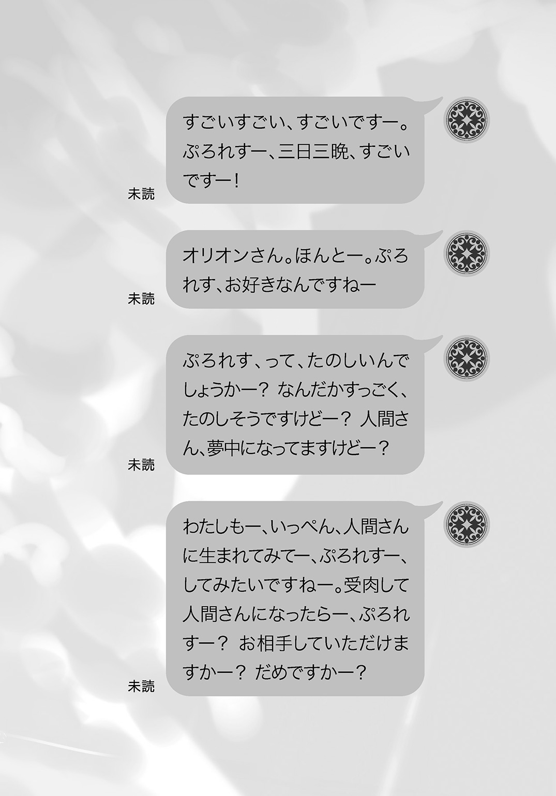
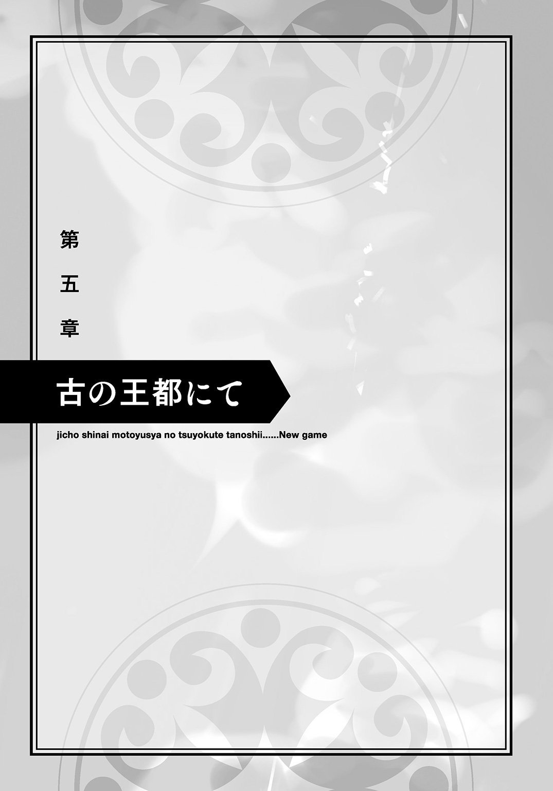
王都 「すごーい！ すごーい！ お姫様っているかなーっ!?」
ぽっく。ぽっく。
馬の立てる足音が、いつもと違う響きになっている。
石畳の上がめずらしいのか、それとも嬉しいのか、彼女の足取りもどこか誇らしげ。
俺たちは王都にやってきていた。もう半月も前からこの国には入っていたわけだが、都に入ると、「違う国に来た」という実感がわく。
馬車の上の、歩く人たちよりもすこし高い視点から、俺たちは街並みを眺めていた。
さすがに王都。これまでの街や村とは大違い。
いま馬車が進んでいるのは大通りであるが、左端から右端までの幅は、向こうの世界の道路でいえば六車線分ぐらいはあった。
「広い！ ひろーい！」
アレイダがはしゃぐ。
その横でスケルティアは、膝を抱えてちょっと警戒中。〝開けた場所〟というのは立体起動を行う蜘蛛子にとっては苦手な場所っぽい。苦手なのは人が多いほうかもしれないが。
「ここはパレードでも祭りでも開ける広さがある。その時期になれば店も出て、凄い数の人になるぞ」
「すごーい！ すごーい！」
あ。びくってなった。うちの娘の奥手なほうの苦手なのは、やはり人の多さのほうか。
「お姫様って！ いるかなーっ!?」
うちの娘のお馬鹿なほうは、やっぱり、馬鹿だった。
おまえ。辺境の蛮族とはいえ、部族の族長の娘じゃなかったっけ？ 小さくてもいちおうは姫様ポジションじゃなかったのか？
どこの世界に、お姫様に、きゃー！ とかいうお姫様がいるんだ？
もうこいつ。すっかり姫様でもなんでもないな。単なる駄犬だな。
「こちらの王国の姫君は、たいへんお美しいそうですよ」
「えっ？ ほんとモーリンさん？」
「ええ。それはもう。代々。大変なお美しさであると。周辺各国から評判です」
モーリンが言う。その言葉の端々に、ちくちくとする棘が含まれていると思うのは、俺の錯覚であろうか......？
「かの勇者も二代前のフローネ姫と恋に落ちたのだとか」
「うわーっ！ うわーっ！ 素敵！」
「オペラにもなっていますね」
「えっ!? オペラっ!? ――観れるっ!?」
「この五十年。上演されていない夜はないのだとか」
錯覚ではなかった。本当に棘があった!? 棘だらけだよ!?
「勇者と姫君のロマンスの物語は、王国のみならず、周辺各国の女性の心を捕らえて放さないそうですね」
「きゃー!? 勇者さまーっ!?」
やめろ。激しくやめろ。
俺が元勇者であることは、アレイダとスケルティアには言ってない。
決して言えない理由があるわけではない。特別な意味などなんにもなく、ただ単に、言っていないだけである。
強いて理由をあげるとするなら、元勇者であることをカミングアウトすると、必然的に、二度あった前世のことも話すことになり、俺が外見通りの歳ではないと教えることになる。
そうすると......、べつにまあ、まずいことはなに一つないのではあるが......。
そ、そう。――つまんないのだ。
アレイダのやつが、「一七歳？ なによ一コ下じゃない。ふふん。わたしのほうがお姉さんよねー」とかドヤ顔をする。そのバカ顔を見れなくなるのが惜しい。ただそれだけの理由である。
「ふふっ......。そういうことにしておきましょうね」
おい。大賢者。心の声に突っこみを入れてくるのをやめろ。
馬車は、ぽっくぽっくと、石畳を歩んだ。
◇
大門からまっすぐ――。向こうの世界の単位だと一キロぐらいはあっただろう。
ようやく大通りが終わった。
大きな噴水のある広場が、その終点だ。
広場からは王城を展望できる。城壁は二重構造になっていて、城壁の内側にもう一つ内堀と城壁がある。城はその中だ。
外周の城壁の内側は城下町となっている。
半径一キロ以上は確実だから、直径にすれば三キロぐらいか？
かなり大きな街であった。向こうの世界の常識と比べても、けっこう、大きい。
王都ともなれば、これくらいの規模にもなるわけか。
「さて。王都に到着しましたが、いかがいたしましょう？」
モーリンが俺に言う。
「ごはん！」
アレイダが真っ先に答える。
「黙れ駄犬。おまえには聞いてねえ」
「うう......、オリオンが......、しどい。なんか不機嫌？」
「べつになんにも不機嫌じゃねえよ」
なにいってんの？ こいつ？
「ごはん。......に。する？」
「よし。メシにするか」
俺はスケルティアの頭を撫でた。
「ちょ――!? なんでスケさんはいいの！ 不公平！ 不公平禁止ーっ！」
なにいってんの？ こいつ？
てめえのは自分が食いたいだけであって、スケルティアのは、俺を気遣ってのことで――。ぜんぜん、意味が違うだろ。
まったく公平に扱ってやってるだろ。駄犬は駄犬と区別して、駄犬のように扱っているだろ。
しかし、そんなに様子がおかしかったか？ 心配されるほどだったか？
店はどこでもよかった。
馬用の飼い葉と水桶の置いてある食堂を適当に見つけて、表に馬車を置き、馬の軛を解いて自由にしてやる。
この子はいい娘なので、逃げたりなんてしない。
誰かが連れ去ったりすることは心配だが、賢い娘なので、そういうときには鳴いて知らせてくる。
店に入って、席に座る。
すこしは店を選べばよかったと、後悔しながら......。
そこらじゅうの壁に、勇者の肖像やら、姫様の肖像やらが飾られているので、俺は不機嫌にうつむいていることになった。
「へー、勇者様ってー、ああいうお顔だったんだー」
アレイダが壁を見て。
気づけよ。――いや気づくな。
「なにになさいますか？」
ウエイトレスのカワイイ娘が、花の笑顔を振りまきながらやってくる。
いつもならカワイイ子には笑顔で応じる俺だったが、今日は、ぶすっと黙ったままである。
「勇者ランチ！」
アレイダが手をしゅぱっと挙げた。
勇者。食われてるし。
「おいモーリン。大賢者ランチもあるらしいぞ」
俺はメニューをモーリンのほうに滑らせた。
顔色一つ変えないクール無表情の大賢者が、なんだかちょっと憎らしい。
モーリンは大抵いつも無表情だが。表情が出るのは、俺に関する時だけだが。
「えっ？ あらー、おんなじ名前なんですねー。大賢者様とー」
ウエイトレスの娘が感心している。
「ええ。まあ。......本人ですので」
「えっ？ まったまたー！ 冗談ばかりー。......でもそれやめたほうがいいですよー。アブナイですからー」
なにがアブナイんだろう？ まあいいが。
「大賢者ランチを......、二つでよろしいですか？ オリオン様」
「ああ」
俺は鷹揚にうなずいた。もうこの際なんでもいい。勇者ランチでなければ、なんだっていい。
「はい！ それでは頭の良くなる大賢者ランチ！ 二人前でー！」
頭が良くなるのか。そうなのか。
「他のかたは？」
「蜘蛛ランチ。......。ある？」
「ないですねー」
「そ。」
スケルティアはちょっとがっかりしている。
最近は無表情にも種類があることがわかるようになってきた。
「蜘蛛肉のフライならありますけどー」
「じゃ。それで。」
おい？ 蜘蛛子？ いいのか？
共食い......には、ならないか。人間が牛豚を食うようなもんか。同じ哺乳類であるぐらいしか共通項がないしな。蜘蛛にとって他の蜘蛛を補食するというのは、人間が牛豚を食うぐらいの遠さになるのか。むしろ適度に近いほうが「美味い」のかもしれないし。
勇者ランチだの大賢者ランチだのいっても、出てきたものは、普通の定食だった。
勇者ランチは「はんばーぐ」だった。俺ハンバーグ好きなんだよなー。あっちのがよかったかなー。ビーフシチューもついてるし。
食事がだいぶ進んだ頃――。
「ねえ。オリオン。......なんかさっきから、へんよ？ なんか不機嫌......じゃないんだとしても、なにかあるなら、話してくれない？ 話せないなら、べつに無理に聞かないけど」
アレイダが言ってきた。
駄犬が駄犬なことをやったときには、無体に扱ってやっている俺だったが――。
まともなことを言ってきたときには、まともに扱ってやるべきだろう。
俺はしぶしぶ......、口を開いた。
「べつにたいしたことじゃない。この街には......、まあ、なんだ。あんまりいい思い出がなくってな」
「ここ来たいって言ったの、オリオンじゃないの？」
「そうだけど......」
「ああ。ごめん。......べつに、いじめてないからね？」
俺はいじめられていたのか！ 誰に？ 駄犬に!?
「マスターは、この街の辛い記憶を、楽しい記憶で塗り替えようとされているんですよ」
「楽しい記憶......？」
「ええ。わたくしや。アレイダ――貴女や。スケルティア――貴女と」
「えっ？ あっ......、あの......、わたしと？ ......楽しい？ ......あっ、はい」
アレイダが畏まっている。姿勢を正して、手は膝の上に置く。
なんだこいつ。なんでこいつ。
駄犬のくせに、いきなりしおらしくなりやがって。
ばーか。ばーか。ばーか。
◇
夜。宿は適当に取った。
何日か、あるいはもうすこし長い期間か。しばらく逗留する予定だった。
向こうの世界でいえばロイヤルスイートくらいに相当する部屋を、金貨の何十枚かで前払いしておく。
アレイダとスケルティアのレベル上げついでに、金策も自動的に行える。金に困ることはない。例のゴブリン退治も、あとでギルドに報告したら、多額の報奨金が得られた。
ゴブリンスレイヤー。稼ぎいいじゃん。
聞けば新米冒険者を何パーティも餌食にしていた、いわくつきの部族だったという。高額賞金首だった。最近ではその賞金目当ての中級冒険者まで餌食にしていたようだ。
群れを率いるロードが特に強い個体だったらしい。――まったく実感はなかったが。
屋敷はあるが、旅先では宿を取るようにしている。でないと旅をしている気分にならない。
豪華な部屋で、俺たちはくつろいでいた。
大きな天蓋付きのベッドに寝そべって、寝心地を確認していると――。
のっし、と、アレイダのやつが俺の背中に重たいケツをのせて、跨がってきた。
「ね？ オリオン？ 明日どこ行く？ なに見にいく？」
「ふんっ。観光か。気が乗らんな」
「あっ......、ゆっくりしたいんなら、それでもいいよ？ ゆっくりしよ？」
「ふんっ」
駄犬なりの気の遣いかたなのだとわかる。
だから駄犬が気を遣ってんじゃねえよ。みえみえなんだよ。わざとらしいんだよ。気を遣うならもっとわからないようにさりげなく気を遣え。
おまえは飲み会で焼き鳥を串から外す女かよ。気を遣える女子力高い私のアピールかよ。そして得意料理は肉じゃがかよ。
「ふんっ......。もしおまえが、どーしても遊んで回りたいとゆーなら、連れてってやらんこともない」
「どーしても！」
即答かよ。
「スケさん！ スケさん！ どっか連れてってくれるってー！」
アレイダが言う。スケルティアが、にか、と歯を剝く。見てないがわかる。
「わたしわたし！ オペラとかゆーの観たーい！ スケさんも観たいよねーっ!?」
「......？ それ。おいしい？」
スケルティアのやつは、ぜんぜんわかっていないっぽい。
しかし？ なんだって？ オペラだって？ ドレスから靴まで、上から下まで揃えろと？
こちらの世界の観劇はよく知らないが、向こうの世界よりも遥かに格上の、上流階級の遊びのはずだ。
舞踏会に出られるくらいの格好が必要だと、容易に推測できる。
あー。うん。駄犬はともかく。スケルティアを着せ替えして遊ぶのは、楽しいな。
まー。うん。駄犬も駄犬で。スタイルだけは無駄にいいから、セクシー系とかが似合うかもしれないな。
モーリンはシックで上品なものが似合うに違いない。アダルトだ。大人の色気だ。
この街を訪れて――ここに来ることを決めたのは俺自身だが――ちょっと塞いでいた気分が、すこし上向きになった。
明日に対しての気分が、すこしは持ち直してきたところで......。
「さーて――、とりあえず今夜は......、ヤルかーっ！」
「えー！ 情緒がない！」
情緒がどーとか言うやつが、跨がってきてケツをのせて誘ってくるのかよ？
「ちょ！ ちょっ――ちょーっ！ お風呂！ せめてお風呂に入らせてっ！」
「ぶぅゎーか！ それがいいんだろぉーっ！」
「きゃーっ！ いやー！ きゃー！ きゃー！」
「スケ。も。まざるよ。」
「ではお風呂に湯を張ってまいりましょう」
スケが飛びこんできて、モーリンは慌てず騒がずぜんぜん落ち着いていて――。
俺たちがいつものように、ぐずぐずになっていこうとした、そのとき――。
「王都警備隊である！ おまえたちを詐称罪にて連行する！」
ロイヤルスイートルームの扉が、いきなり開いて――。
数名の武装した男がなだれこんできた。
......はい？
牢獄 「わたしたち......、なんでこんなとこ、いんの？」
夜が明けた。
俺たちは牢獄の中にいた。
だいぶ上のほうに鉄格子つきの窓があり、朝の日差しと、ちゅんちゅんと小鳥の鳴き声が入ってくる。
それによって、朝がきたことがわかる。
「ねえ、わたしたち......、なんでこんなとこ、いんの？」
膝を抱えて、アレイダが言う。
「あー、ヤダ。鉄格子みてると......。思いだす......。ねえ。暴れていい？」
「やめとけ」
目の前にも鉄格子。石組みの壁に囲まれて、正面は鉄格子という、「牢獄」と聞いてイメージする、まさしくそんな場所に、俺たちは入れられていた。
アレイダのやつは、すさんだ目で鉄格子を睨んでいる。
奴隷で木檻に入れられて「商品」にされていたときのことを思い出すのだろう。
あのときは単なる小娘で、木檻を破壊する力もなかったわけだが。
いまは高レベルのクロウナイト。その気になれば、鉄格子をひん曲げて出て行くことも可能だ。石の壁だって素手でぶっ壊せるかもしれない。
俺たちは捕まっているのではなくて、捕まえられてやっているのだった。
憲兵だか王都防衛隊だか、なんだか知らんが、俺たちを捕らえに来た男たちは、この国の、まあ警察組織みたいなものだった。
かつて勇者に救われたこの国では、『勇者』や『大賢者』や、あと勇者のパーティの仲間すべては、神格化されており――。
その名を騙ることは、重罪となるらしい。
昼飯を食ったときに、モーリンが「大賢者本人です」と名乗っていた。
ウエイトレスの女の子は冗談と思ったらしいが、「アブナイからだめですよー」とも言っていた。その意味は、つまり、こういうことだったわけだ。
あの娘が密告したとは思わない。カワイイ女の子と、綺麗な美女に、悪いやつはいないというのが、俺の持論だ。あそこの店にいた他の客が密告したか、あるいは憲兵の関係者がメシでも食っていたのだろう。
しかし、名乗っただけで投獄とは......。有罪とは......。
知らんがな。
この街を救った勇者様だって、五十年後に、まさかそんなアホなことになっているなんて、思いもしなかっただろうよ。
あー、賭けてもいいぞー。本人ここにいるしなー。
「ねー......、ほんとにすぐに出られるのよね？ ......出してもらえるのよね？」
「さあな」
俺は言った。アレイダのやつは心配でたまらないらしい。数分ごとに「ぶっ壊していい？」と聞いてくるのだ。そんなに鉄格子にトラウマがあるのか。
「さあな、って、なにそれ。一生ここから出られなかったら、オリオンのせいだ......」
なんでいきなり一生になるんだ。そんなに鉄格子がトラウマか？
「おりおん。よし。あれいだ。よし。もーりん。よし。」
アレイダの言葉を真に受けたのか、スケルティアが、俺とアレイダとモーリンを指し示して、よし、とかうなずいている。
一生ここにいることになっても俺たちがいるから、よし、という意味だろう。
うちの娘のカワイイほうは、ほんと、かーいー。
俺たちは、無論、出ようと思えば、こんなとこ、いつでもすぐに出て行くことができた。
うちのバカ娘が、バカ力で、牢を石壁ごとぶっ壊したっていいし。スケルティアが糸を操って鍵を開けたっていいし。モーリンの転移魔法でテレポートするのが、もっともスマートだと思うが。
それをしないのは、自分たちにやましいことがないからだ。逃げればみずから罪を認めることになる。
取り調べに対して、俺たちは「本人だ」と一貫して主張している。
やつらは冒険者ギルドに問い合わせをすると言っていた。朝になったし。そろそろ連絡が戻ってきてもいい頃だ。
本当に問い合わせていれば、の、話であるか。
「はやく出たい早く出たいいますぐ出たい。ああもうあいつらぶっ殺して出ていい？ いいよね？」
アレイダが膝を抱えてぶつぶつ言ってる。据わった目で牢の番兵を見つめている。
闇持ちのクロウナイトは、危なっかしくてかなわない。てゆうか。そんなに鉄格子にトラウマが？
「退屈だな。もうすこし時間がかかるかもしれないし。暇つぶしでもしているか」
気晴らしになるだろうか。――という軽い気持ちで、俺は、隣で肩を寄せてくるアレイダに襲いかかった。
「ダーッ！」
「なになに！ ちょ――!? なんなのなんでコイツいきなり欲情してんの!?」
こいつ。ついにご主人様を〝こいつ〟呼ばわりかよ。
ああ。いや。自分で得た金で自分を身請けしたから、もう奴隷じゃないんだっけか。じゃあ俺とこいつの関係ってなんだ？
ああうん。飼い主と駄犬だな。そうに決まった。
「ちょ!? 見てるみてるみてる！ あそこの人たち見てるうぅぅ！ 見てるからだめえぇぇ！」
それは見ていなければＯＫという意味か？ まあＯＫなんだがな。
ちなみに俺は、〝見せてやる〟ことに、なんら抵抗はない。
むしろ......。
ほーれ、俺はこんないい女を自由に出来るんだぜー！ うらやましいかー？ うらやましいだろおぉぉ？
いいぞいいぞー、鉄格子の向こうで自分でしているぐらい、許してやるぞー？
――ぐらいなカンジ。
牢の中にはいてやるが、その他のことには、まったく自重するつもりはない。
「きゃー！ きゃー！ だめーっ！ そこはだめーっ！ あっ、そこは......」
俺はアレイダの固くなってきた部分を、うりうりとやった。
牢番の男どもは、がっぷりと寄ってきて、血走った目で見ている。
ぎいぃ、バタン。
鉄扉が開く音がした。
ここからは見えないところから、足音が聞こえてくる。
通路を、かつかつかつ、と、ヒールで石を踏む足早な音が近づいてきた。
「ああ！ オリオンさん！ よかった！ 見つかりました！ こんなところに入れられて、まったく災難でしたね！」
現れたのは、リズだった。いつも懇意にしている冒険者ギルドの人間だ。
しかしずいぶん離れた街にいたはずなのだが、どうやって？
ちなみに俺たちは転移魔法があるので、あの街まで顔を出しているが。
「問い合わせがあったので、すぐに飛んできました。ギルド同士には転移陣がありますから」
おお。そうか。五十年前には遺跡の奥でしか見かけなかったが、そこまで普及しているんだな。
「貴方たち。......まずパンツあげ！」
リズが一喝する。
牢番たちは、まずズボンを引きあげた。直立不動になる。
「この方々たちを。すぐにここから出してください」
「いや、しかし――」
「貴方たち。――なにをされたのか、わかっているのですか？ 本物の、本当の、正真正銘大賢者様を、投獄したのですよ？」
牢番たちが、顔色を変える。
なにが起きつつあるのか、ようやく、理解した顔だ。
だから、俺たち、ゆったじゃーん？
本物だって、本人だって、そおゆったじゃーん？
ばっかでー。
「おい。大賢者。話題になってるぞ」
俺は子供みたいな手足を縮めて、すうすうと眠っているモーリンを、揺すって起こした。
「あ......。はい。すぐに朝食の支度を......」
寝ぼけてる。
萌えー。
寝れるときに眠れるのは冒険者の資質だ。
牢に入ってなにもできず、暇になったところで、モーリンはすやすやと睡眠に入っていた。冒険者の鑑とは、こういうことを言う。
モーリンは、顔をこしょこしょとやって、くーっと、伸びをやってて――。
そして、きりっと、完璧超人の顔に戻った。
「誤解が解けたようでなによりです。貴方たちの減刑は、きちんとお願いしておきますからご安心ください」
ひどい目にあわせた相手に寛大なことを言う。
大賢者とそのご一行の威厳をみせつけながら、俺たちは、牢をあとにしたのだった。
国賓 「舞踏会ぃ！ ぶぶぶ！ 舞踏会ーぃぃぃぃ!!」
きらびやかな夜会が行われている。
牢屋暮らしから、一転――。
大賢者とその一行、ということで、国賓となった俺たちは、その夜の夜会に呼ばれてきていた。
ガラスのシャンデリアが天井から下がる。夜なのにまるで昼間の明るさだ。
「すごーい！ まぶしーい......！」
異世界の前世においては見慣れた明るさでも、こちらの世界ではびっくり驚くものなのだろう。
うちの娘の駄馬のほうは、目をキラキラさせて見あげている。
もう一人のほうは、まぶしいのか、目をきゅっとつぶっている。おでこの単眼だけを開けたまま。
今夜の夜会は、べつに特別なものというわけでもなさそうだ。毎晩、行われているものなのだろう。上等なスーツとドレスに身を包んだ、麗容な男女の様子は、まるで浮ついたところがない、落ち着いたものだった。いつもの日常という感じだ。
それに比べて、うちの駄馬ときたら――。
「すごーい！ 歩きにくーい！」
足元を制限されるドレスで、みるからに危なっかしい。
そして階段を下りてゆくときに、バランスを崩して――。
「きゃ――」
「気をつけろ」
俺は、アレイダに手を差しだして、支えてやった。
「あ......、ありがと」
そのままエスコートしてやる。
またすっ転ばれたら、かなわないからだ。俺が恥をかくからだ。けっしてそれ以上の他意などない。
アレイダは赤いドレス。体のラインを強調して、スタイル自慢でもしてるような感じ。まあ。俺の隣を飾るトロフィーとしては及第点といえるな。
「......なに？」
見ていると、目をぱちくりさせて、年相応のはにかんだ顔をする。
〝駄馬〟から〝トロフィー〟に格上げしてやったんだぞ。ここ。喜ぶところだからな？
スケルティアは青いドレス。お花みたいに咲き誇っていて、可愛い感じ。
本人、可愛い服を着せられているという自覚がなくて、ぱたぱた、走り回っていたりするのも、より可愛さを引き立てている。
「......？ なに？」
清楚な格好。意外と似合うな。中身は毒々蜘蛛娘なのだが。こんど純白のワンピースでも着せてみようか。
モーリンは大賢者の貫禄を漂わせた紫色のドレス。三〇〇年生きてる美しい魔女が着るにふさわしい感じ。
この「三〇〇年生きている」というのは、巷で流れている噂だ。〝モーリン〟という名の人物が歴史上に現れて、人類を陰日向から助けていたのが、そのくらいの昔とされている。
ちなみに表の記録には残されていないが、それより以前には、滅びかけていた魔族に援助していた同名の存在があるとされる。衰退していた魔族はその者の助力で勢いを取り戻し、勢い余って、こんどは逆に人類を滅亡させかけてしまったわけだが......。
いっぺんそのことを聞いてみたことがある。「ちょっとテコ入れしすぎちゃいましたね」との答え。
本当かどうかはしらん。どうでもいい。
モーリンは俺の女だ。それ以外のことには、マジで興味がない。
三人を連れて会場へと下りていった。
ただちょっと俺としては面白くない。いろいろなことで面白くない。
ひとつめ――。服も靴もすべて借り物だということ。
服は俺が買ってやろうと思ったのに、貴賓室のクローゼットを開けると、何十着も揃っていた。
こーゆーの着せてやったら、似合うんだろうなー、と、俺がまさに思い描いていた服が、山ほどあった。
「これはこれは大賢者様。本日。お会いできたことは、我が家の末代までの語りぐさとなりましょう」
そして、ふたつめ――。
いまモーリンに話しかけているのは、たぶん、大臣。
話しかけているのは、あくまでモーリン。俺たちなんて眼中にない。護衛かなにかと思われているのだろう。
「ねー、オリオン！ こっちこっちー、これぜんぶ、食べ放題みたいよー!?」
うちの駄馬が、さっそく、料理の置かれたテーブルに貼りついている。
いいけど。食い放題だからといって、また妊娠九ヶ月になるんじゃねえぞ。
「おい。スケ。そんなとこに入るのはやめろ」
俺は純白のテーブルクロスを、ぴろっとめくった。
隠れていた少女に、めっ、とやる。
「ひと。おおい。ここ。ひろい。......このなか。せまいよ？」
人の多いところと、広いところは、あいかわらず苦手らしい。
そういや牢屋で居心地よさそうにしていたなぁ。
「ふぉへっ!? ふおっふぉ！ ふぉひぃぃふぁふぁぁ！」
駄馬がなにか言ってる。口の中のものを飲みこんでから言え。ぜんぜんわかんねえ。
モーリンはあいかわらず国の重鎮たちに捕まったまま。
俺はぶらりとパーティ会場を歩きはじめた。
アレイダあたりが、「ぶぶぶ舞踏会っ!? あの舞踏会っ!?」とか言って震えて痺れていたが、その駄馬は、いま、食うのに夢中になっている。
どーせおまえなんか、踊ってくれる相手もいないんだろうし、そも踊れもしなくて赤っ恥かくのが関の山だろうし、俺が踊って、一緒に恥をかく覚悟をしていたのだが。
俺は一人で、グラスを片手に、パーティ会場をぶらついた。
若く美しい娘さん――は、本気にさせてしまうとメンドっちいので、熟れて餓えてる貴族の未亡人あたりを探す。決して本気にさせず、一夜の遊びですむような......。
そんな目で会場を物色していた俺は――。
ある人物の登場とともに、会場の雰囲気が、さっと一瞬で変化したことに気がついた。
一人の若い女性――少女が、入ってくる。
皆が会話を止め、彼女を見ている。
凄いドレスも、宝石を散りばめたアクセサリーも身につけていない。清楚な白いドレス。この会場においては地味ともいえる服装。
しかしその人物の持つ気品は隠すことができない。オーラのように周囲に暖かな光を放っている。
今夜の遊びの相手に選ぶことはできないだろうが、挨拶くらいはしておくか。
俺は彼女に近づいていった。
彼女も俺に向けて歩いてくる。
間にいる人たちが道を譲る。人垣が左右に分かれてゆく。
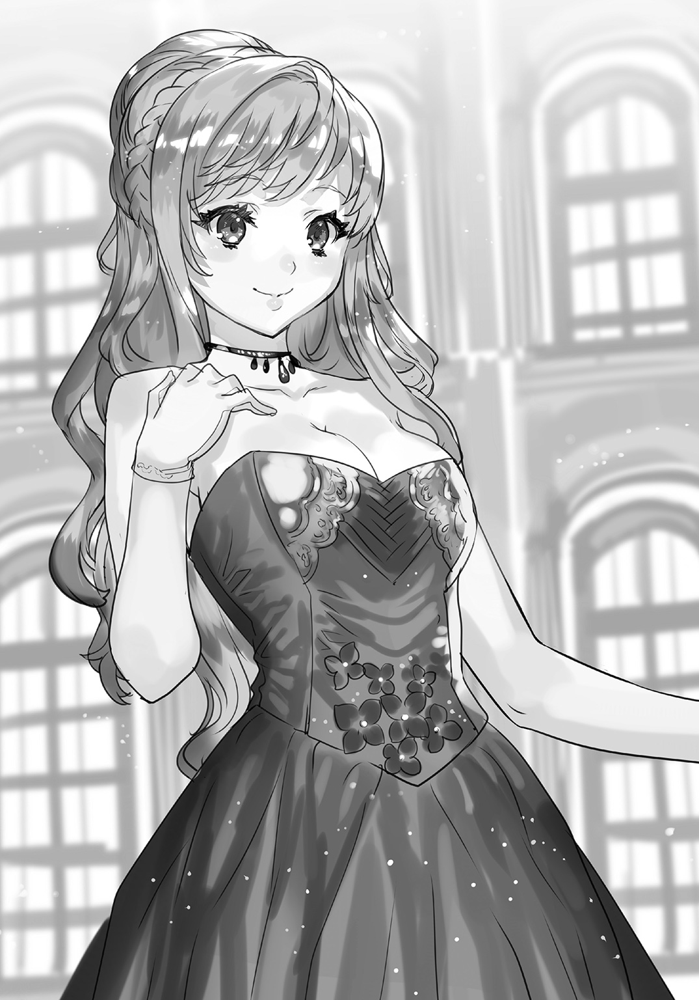
人の大勢いるパーティ会場のなかで、俺と彼女は、まるで二人だけでいるかのように、笑顔を交わしあった。
あれ？ こんなこと、前にもあったよな？
俺は綺麗な女の子に、笑いかけながら、頭のどこかで、そんなことを考えていた。
なんか。デジャヴとでもいうのだろうか。前にも同じことがあったような既視感がつきまとう......。
「当国へようこそ。見知らぬお方」
ドレスの裾をつまむと、優雅にお辞儀をしてきた。
「この国の王女。――フローネと申します」
その名前に、少々、打ちのめされていながらも、俺は自分も名乗ることにした。
「旅の途中で立ち寄らせていただきました。名は――」
「待って」
言いかけたところで、止められた。
なんだろう。と思ったところで。
「わたくし。当ててみせますわ。貴方のお名前は......、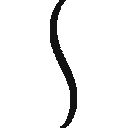でしょう？」
王女フローネの口にした名前は......。
それは、俺がもう捨てた名前だった。
そして俺は完全に思いだした。ここまでの一連のやりとりは、すべて、昔、起きたことだった......。
五十年前――。俺は、駆け出しの〝勇者〟として、この国にやってきた。そして美しい王女と出会い――。
目の前に立つ王女は、その五十年前と同じ名前をしていた。
「祖母のお名前を頂いております。同一人物では――ないですよ？」
先祖の名前を付けるのは、貴族、王族では、ごく一般的な風習である。そのこと自体は、べつに驚くことではない。
だが俺が驚いたのは――。その顔で――。
「ええ。祖母に〝生き写し〟と、よく、言われるんですのよ。お歳を召した方からは、そのような反応をされることも、しばしばで......。慣れておりますので」
にっこりと微笑む。
「いえ......失敬」
俺はそう言うのがやっとだった。それほどまでに、俺は顔をまじまじと見つめていた。
五十年前――。すがる彼女を置き去りにした。
連れてゆくことはできなかった。〝魔王を倒す〟という使命が、勇者にはあったからだ。
いや正直にいえば、幸せにしてやれる自信がなかったからだ。そして彼女には、俺なんかよりも幸せにしてくれる人間が、身近にいた――。
だから俺は、彼女を置き去りにして――。
............。
だいぶ混乱していたようだ。彼女は彼女であって、目の前にいる王女とは別人だ。顔も名前もそっくりであるというだけの――単なる孫娘だ。
「お互いさまということで、先ほどの失礼は許していただけますかな？ ――貴女も、俺のことを、どなたかとお間違えのようでしたし......」
ようやく余裕を取り戻して、俺はそう言った。
さっき彼女は、〝ある名前〟で、俺を呼んできた。「名前を当てる」などと言って、その名前を口にした。
大賢者の名前を騙ると重罪になるなら、その名前を容易に持ち出すのも問題になるのではないかと思ったが――。
とにかく、その名で俺を呼んできたのだ。
「祖母から、常々、聞かされておりました。彼の御方のこと。彼の御方がどういう殿方で、どう喋り、どう動かれ、どんな仕草をされ、どういう癖を持っておられるのか......。祖母にねだって、何度も何度も聞いておりましたの」
「なるほど。そうでしたか。でも俺は別人で――」
俺はそう言い張ろうとしたのだが、彼女は、ぜんぜん聞いちゃくれなくて――。
指先を口許でぴたっと合わせると、恋する乙女の顔になって、俺に言ってきた。
「――ですから、わたくし、てっきり......。ぜったいそうだって確信してしまいました！」
「ないですね。勇者は死んだという話ですし。だいたい生きておられたとしても、六〇歳も越えてるおじいちゃんでしょう」
うっわ。いま咄嗟に計算したけど、考えたくもない年齢になってたー！
......忘れよう。
「そういえば、そうでしたわ」
よかった。ようやく納得してくれた。
常識的な思考よりも、直感が優先するこのあたり、神託の巫女と名高かったかつての祖母の血を――能力を引いているのかもしれない。
「そういうことでお願いします。俺は勇者なんかではないんで」
「では皆の勇者様ではないとしても、わたくしの勇者様にはなっていただけますか？」
うわ。そう来た？ そう来ましたか？
俺は熟考したうえで、返事を口にした。
「貴女のために命を捨てようという男性は、たくさんいると思いますよ」
俺は、俺の女にならない女に、興味はない。
一夜の相手として遊ぶのには、王女は、ちょっとばかり重すぎた。
◇
その夜は――。
ドレスアップして出席していたリズを会場で見つけて、二人で行方をくらませて、しけこんだ。
牢から助け出してくれたお礼がまだだったので、〝たっぷり〟とお返しをした。
なんでか、彼女とは遊びの関係を続けている。
俺の女になるか？ と、一度聞いてみたことはあるのだが、はぐらかされて、それっきり。現在に至る。
ま。朝帰りしてからが、たいへんだったが――。
アレイダはなんでか、カンカンだったし。スケルティアは、ぴとーっと貼りついてきて離れないし。
なんだ。俺は浮気の一つもできんのか。
モーリンはいつもと変わらず。俺に卵と砂糖いっぱいのフレンチトーストを焼いてくれた。
エスコートをほっぽり出して遊び回っていたことに、なにか小言くらい言われるかと思ったが、まったくなにもない。
あんな毎夜の舞踏会に王女が出てくることは異例だったので、大賢者にも予測がつかなかったのかもしれないが......。
王女が〝彼女〟の生き写しであることぐらいは、言っておいてくれてもよかったんじゃないか？
そんなことを考えて、口を尖らせぎみにしていた俺に、モーリンが言ったのは――。〝彼女〟がまだ存命であるということだった。
そうか。てっきり、もう、死んでいるものだと思っていた。
五〇年か。まだ生きていても不思議はないんだな。
俺は五〇年という時間の重さを嚙みしめていた。
◇
「大賢者......、の一行が、なぜ、我が国に......」
暗がりの中。二人の男が話し合う。
「まさか......。気づかれているのか？ やつらはどこまで気づいているのだ！」
「宰相閣下。お声が大きゅうございます」
「お、おお......。そ、そうであったな」
二人の男は、声を潜めた。二人がいまここで会い、内密の話をしていることも、そもそも秘密なのだった。
二人の男は陰謀を共有する仲間であった。
片方はこの国の宰相。大臣たちの上に立ち、王を補佐して国を運営する最高責任者だ。
もう片方は、国を守護する黒騎士団を率いる、騎士団長。
「やつらもおそらくなにも証拠は得ていないはず。仮になにかを得ていたとしても、確証までは得ていないはずですぞ」
「そ、そうであろうか......」
「実際に動いていないのが、その証拠」
「う、うむ」
「ですが。わざわざ、あれほど目立つ形で大賢者がやって来たということは、我らの企みに感づいているというのも、また、確実なところでありましょう」
「まずいぞ。このタイミングで......。我らが数十年もかけて周到に用意してきたというのに......、ええい、いまいましい！ 勇者が死んでくれて清々したというのに、なぜ大賢者だけ生き残っておる！」
「ご心配めされるな。大賢者殿には......、そうですな、失踪していただくのが、よろしいかと」
「失踪？ こ、殺せるというのか......？」
「お声が大きいですぞ、宰相閣下」
「う、うむ」
「大賢者殿には、あくまでも――〝失踪〟していただくのです」
「う、うむ......。そうだな。失踪していただこう。それが良い」
「我らが黒騎士団の力......、とくと、お目に掛けましょう」
「騎士団長よ......、其の方も悪よのう？」
「いえいえ。宰相閣下には及びませぬ」
「くっくっく......」
「ふっふっふ......」
二人の男は、昏い笑いをつづけた。
襲撃 「ねえ？ こいつら殺しちゃっていーい？」
王都に逗留して、何日目かの夜――。
俺は、またかと、ため息をついた。
街にぶらりと飲みに出た。
ポールに摑まってくるくる回る半裸の女の子とか、チップを差しこむと膝の上に座りに来てくれる女の子とかのいる店に行った。
この手の店には、通常、女の客は絶対に入らない。
だがそこにあえて、連れこんだ。
アレイダは、はじめ、目を白黒させていたものの、飲み比べをして景気をつけたあとは女の子に混じって踊っていた。俺が褒めると調子に乗って、ポールでくるくると回るようになった。
スケルティアは黙々と食べていた。
モーリンは俺の隣でグラスが空くと酌をしていた。女の子の何人かが「お姉様ー」と慕って、なんか異様にモテていた。あの女の子たちも、そのお姉様が、まさか街でウワサの大賢者とは思わなかったろう。
しかし、なんで異世界にストリップ・バーと、ポールダンスがあるんだ？
だれだこんな低俗な異世界文化を持ちこんだ転生人は！
けしからん！ いいぞもっとやれ！
てな感じで、俺たちが上機嫌で帰り道を歩いていると――。
襲われた。
「......で、どうすんの？ こいつら？」
襲ってきた連中は数人ほど。そのうちで捕まえられたのは四人ほど。一人二人は逃げている。
その四人は、スケルティアの糸でぐるぐる巻きにして、ふんじばっている。
「どうする、って言ってもなー......」
俺は正直、困り果てていた。
じつは襲われるのは、今夜が初めてではない。
昨日の夜も、一昨日の夜も、襲われた。
今夜など、どうせまた襲われるのだろう――と思って、わざわざ隙を作ってやるために外出したくらいだ。
「おい。おまえら？ 誰に雇われたのか、言うつもりは？」
いちおう念のため、男たちに聞く。
だが昨夜と一昨日の連中と同じく、口をへの字に結んだまま。
「ねー、こいつら殺しちゃっていーい？」
アレイダが言う物騒な言葉にも、ぴくりとも反応しない。
胆が据わっている。
俺は経験から知っていた。
この種の手合いは、拷問をしてもなにをしても無駄。口を割らない。
自白が無理な相手でも、心を読むことで、情報を引き出す魔法やスキルは、あることはあるのだが......。
どうせそっちへの〝対策〟も済んでいるはずだ。
魔法やスキルの効果を妨害するとか、そんな高度なものではなく、もっと遥かに簡単な方法が存在する。その種の方法が使われたときに、即座に死ぬような仕掛けもあるわけだ。
「べつにぶっ殺したっていいんだが......」
山で襲ってきた山賊をバラすことに、なんの躊躇もない俺であったが......。
なぜだか、めずらしく、悩んでいた。
後味が悪いっつーか。冒険者ギルドに状況説明するのが面倒くさいっつーか。リズにあんまり面倒かけたくないっつーか。
〝彼女〟の思い出のあるこの王都を、血で汚したくないというか。
――まあ、それがいちばんの理由なんだろうな。
「いつものアレで」
「了解。スケさん。お花。摘んできて。――四輪ほど」
「わかた。」
スケルティアは、こくこく、とうなずいて、夜の街路に〝お花〟を探しに行く。
そのあいだにアレイダは「花瓶」を作りにかかった。
いつもの〝アレ〟というのは、〝花瓶の刑〟というものだ。
大の男を花瓶みたいに取り扱って、逆さまにする。
アレイダはＬｖカンスト寸前のクロウナイト。ガチ物理系の上級職のステータスは、それを可能とする。
逆さまにして、ひん剝いて、お花をいける――というのが、花瓶の刑であった。
どこに〝いける〟のかって？ ――それはご想像にお任せする。
この者。狼藉者なり。
――と、消えないペンで顔に書いてやって、成敗完了。
道端に花瓶を置いて、俺たちは立ち去った。
◇
「も......、だめ」
いちばん体力のあったアレイダが、やっぱり最後まで保ったわけだが......。
気絶するように俺の上に倒れ込んできて、それきり、動かなくなる。
ちなみにモーリンとスケルティアの二人は、アレイダより先にリタイヤしていた。目のまわりが落ちくぼむほどに衰弱して、いま、死んだように眠っている最中。
どんなイタズラをしても、決して目を覚まさないカンジー。
裸の娘を上に乗せたまま、俺は天井の一角を見つめていた。
思うところあって――。天井の隅に、声を投げる。
「クザク――。いるんだろ？」
がたごと、ごとん。
音がして、音がやんで――。しばらくして――。
天井の板がすうっとずれて、そこから、バツの悪そうなクザクの顔が現れた。
「いえあの釈明を許していただければ......。決して覗いていたわけでも、主を試そうとしていたわけでもなく......。その......、お役に立てればと思いまして......」
鳥の羽の髪飾りを、ぷるぷると震わせて――。クザクは言わずもがなのことを、いっぱい喋った。
なるほど。覗いていたのか。
なんか屋根裏で気が乱れていたけど。そのせいで気づいたわけだけど。
ああ。俺たちの行為を見て、一人でしていたわけか。そして気を遣っていたわけか。
てか。混ざればいいのに。
クザクは俺の女だった。
前に、ゴブリンに返り討ちにあった彼女たちに、助けを求められた。
助けてやるかわりに俺のものにしたわけだが――。そのまま心酔されて、残り二人の女と共に、正式に、俺の女となった。
三人は、冒険者を続けて、自分たちを鍛え直すと言っていたが――。俺の近くについてきているのだろう。
彼女は、俺たちに足りない諜報系のクラスだった。役立つスキルをたくさん持っている。向こうの異世界だったら「忍者」とでもいうべきところなのだろうが......。こっちの世界に、その種のクラスはまだないっぽい。
「頼みたいことがあるんだが。いいか？」
「はい！ 主の命でしたら！ なんなりと！」
俺は、クザクに用件を告げた。
◇
翌日の夜――。
「宰相と騎士団長が結託して、とんでもないことを考えているようですよ」
ベッドにうつぶせに横たわり、満足しきった顔のクザクから、俺は報告を受けていた。
俺の頼みを受けたクザクは、たった一日で、色々なことを調べ上げてくれていた。
その〝ご褒美〟ということで、報告を聞く前に、まずは一戦を終えていた。
気絶させちゃうと報告が聞けなくなるので、ほどほどで――。
どうも最近溜まりまくっていたらしいクザクが、満腹しきった猫みたいな表情になるまで、何度も何度も際限なく、くれてやった。
たまに三人以外の女を抱くと、これがまた新鮮で――。意識していないと、激しく燃えあがってしまいそうで、自分を抑えるのに、俺のほうはすこし苦労していた。
ああ。リズが俺の女にならない理由が、なんかわかった気がする。
おやつは、たまに食べるから美味しいんだ。おやつとなるわけだ。てか。俺はおやつか。食われてるのは、俺の側か。
そういや彼女。朝になるとピンピンしてツヤツヤになって、しゃっきりと帰ってゆくな。
「首謀者は、宰相と騎士団長か......」
腐ってんなー、この国。
そういえば、その二人、かなりの歳である。ずっと王国に仕えている重鎮なのだという。
ということは、つまり――、五十年前にも〝居た〟わけだ。
おそらく小僧か若造だったろうから、俺のほうは、覚えてもいないのだが。
「――で？ その重鎮が、なにを企んでいる？」
考えれば推測はできたろうが、果てしなく面倒くさいので、いきなり聞く。
小物の思考をトレースしたら、自分まで小物になりそうだ。
「王女を傀儡に仕立てあげ、国の実権を握ろうとしているようです。――国の乗っ取りですね。つまり」
下向きに重く垂れ下がった、クザクの美しい乳房を眺めながら、俺は考える。
その忠義溢れる重鎮たちは、五十年のあいだに歪んでいったのだろうか――？
それとも忠義など、最初からまやかしで、五十年をかけた遠大な計画であったのだろうか。
まあ、どちらであったとしても、いまとなっては同じことだ。
たぶんこれは自分の願望ないしは希望だ。
自分が救った国が、せめて前者であってほしいという、元勇者のささやかな感傷だ。
「それと先々代の女王――王女の件ですが」
クザクには、たしかそのことは頼んでいなかったはずだが。
彼女は俺が命じたかのように、調べてきたことを話しはじめる。
てゆうか。たった一日でどんだけ調べてきてんの、この娘？
何この優秀な娘。
うちの駄犬に爪の垢でも煎じて飲ませてやりたいわー。
「先々代女王は――公式には病気の療養ということですが......。特に悪いところもなく、心身共に健やかなるご様子でした」
見てきたように言う。もちろん見てきたのだろう。
〝彼女〟がいる場所も、もちろん、知っているのだろう。
「えっ......？ あっ、ちょっ......、まだご報告がっ......」
俺はこの優秀な娘に、もうちょっと〝ご褒美〟をやっておこうと思った。
具体的には――。
さっき前からだったので、こんどは、後ろから犯した。
姫君 「ずっとお慕いしておりました」
王都で国賓となって、もう何日目になるのか、数えもしなくなった、朝――。
部屋での朝食を軽く終えたあと、俺は出かける支度をしていた。
「つまんにゃー、オリオンばっかり外に遊びにいってー、ずるーい」
アレイダが文句をいっている。
テーブルにほっぺたをつけて、ガラスのコップを逆さまにして、かっぽんかっぽん、上げ下げしている。
部屋の中に迷いこんできた、ハチだかアブだかハエだかを、捕まえては放して、それを繰り返して退屈しのぎをやっている。
コップを上げると、放された虫が逃げようとする。それを、またかっぽんと捕まえる。
隣では、スケルティアのやつが、めっちゃ食いついていた。目をきらきらさせて、虫を見ている。
だがあれはたぶん別の意味。虫って、蜘蛛の主食だしなー。
「ずるい。連れてって」
アレイダがまた言った。あいつも、どうせ無駄だとわかっていながら、そんなことを言う。
あれは、わがままが通るか、試しているんだろうなぁ。
通んねえよ。ばーか。
これから女のところに行くんだよ。子連れで行けるか。ばーか。
まあこのあいだはストリップ・バーに女連れで行ったけど。
例の襲撃はまだ続いている。
食ってるとき、寝ているとき、ヤッてるとき――時間と場所を選ばずに襲撃される。もちろんぜんぶ〝花瓶〟にして通りにさらし者にして返却している。
そしてもちろん出歩いているときにも襲われる。
アレイダでもスケルティアでもモーリンでも、べつに誰一人のときでも、問題なく撃退できるわけであるが......。
うちの娘たちは、ちょっと実戦的に育てすぎた。
山賊は？ → 殺せ！
――的な育成方法で、鍛えすぎてしまった。
俺かモーリンかがお目付役でついていないと、相手をぶっ殺してしまいかねない。またどっちらかがついていても、穏便に済ませられなくて、周囲に被害を出してしまいかねない。
決して、うちの娘たちの心配はしていなかったが......。
俺はこの王都に、いらない血を流そうとは思っていなかった。
よって、あいつらはお留守番だ。
「じゃあ、行ってくる」
「いーっ、だ！」
うちの娘の、嫉妬をよくするほうから、温かい見送りを受けて――俺は部屋をあとにした。
◇
薔薇の咲き誇る庭園のただなかで――。
彼女は一輪の薔薇のように立っていた。
ちょっきん、と、バラの枝のひとつを剪定する。ハサミを脇に控えていた侍女に手渡す。
そのあとで俺を見つけて――まぶしい笑顔を、ぱあっと咲き誇らせる。
「また......、いらしてくださったんですね」
「ああ......、まあ......、約束だったし」
このところ俺は、よく、彼女のもとを訪れていた。
あの夜、パーティのときに、「また会っていただけますか？」と言われた。断る理由が見つけられずに、いまに至る。
彼女は俺に恋い焦がれていた。
正確に言うと、祖母から聞かされていた〝俺〟に恋をしていた。
風のように現れ、王女と王国とを救い、風のように立ち去った。その者の話を聞かされて育って、恋い焦がれるようになってしまった。
しかしべつにあれは、風のように立ち去ったわけではなく、次のスケジュールが押せ押せだったので、速攻、撤収したわけだけど。
前々世での俺は、人の一生のあいだに、魔王を倒せるまでに強くなるという、無理ゲーに挑まされていた。
いや。無理。
普通。無理。
魔王って、どんだけ強いと思ってんだよ。戦った俺は知ってるが。
あんなん。人が倒せるとか思っている時点で、まず、そいつの頭がおかしい。
だが世界の管理者たるモーリンは、頭がおかしかった。
勇者がいま世界にいないのなら、作ってしまえ、というのが、彼女の発想だった。
世界の管理者が、転生女神に掛けあい（弱みを握って脅すともいう）、英霊召還とやらで、望む資質を持った魂を呼び寄せた。
この世界に生まれた俺は、はじめは、単なる赤子だった。
特別な資質を持っているわけでもない。ステータスも平凡。才能といえるものもない。チートスキルもない。
成長速度も並か、それ以下だったかもしれない。
ただひとつだけ、俺の魂が、他と違うところを持っていたとすれば――。
俺には「才能限界Ｌｖ」というものが、なかったということ。――その一点だけだった。
それだって、普通の村人の生活でもしていれば、気づきもしないで一生を終えていたことだろう。
転職可能なマスターＬｖに到達せずに人生を終える人間がほとんどだ。
そしてモーリンは、俺を、鍛えに鍛えに、鍛えまくった。
〇歳児からビシビシやられた。「続けなさい。時間を無駄にしてはいけません」がモーリンの口癖だった。
その甲斐あって、まず三歳で『勇者』のクラスを獲得。
ちょっとこれ、全次元ワールドレコードじゃないかと思う。
ちなみに勇者業界の常識では、『勇者』とは後天的に転職するものではなくて、はじめからそのクラスとして生まれつくものだと相場が決まっている。
だが俺の場合には違っていた。あちらの――現代世界で超有名なＲＰＧゲームでいうなら、「Ⅰ」でも「Ⅱ」でもなくて、「Ⅲ」であったということだ。
普通はやらない頭おかしいようなルートで、いくつかのクラスを極めると、勇者への転職条件が満たされた。
勇者となったその後も、モーリンという鬼の専属秘書にスケジュール管理されながら、最大効率で、「強くなるためだけ」の人生を過ごした。
一分ごとになんの修行をしているか、どこのダンジョンでなにと戦っているか、すべて決められていた。
レベルは前人未踏の高みに至っていた。なにしろ俺には「才能上限レベル」がない。カンストしない。どこまでも上げられるのだ。
そうして勇者人生の一三年後――。
王都を囲んでいた魔王軍を、単騎で突破。敵の将軍を打ち倒して、速やかに戦争終結。
王女の救出は、最初はモーリンのスケジュールに入っていなかった。
その頃のモーリンは人というよりも機械に近くて、王女という存在が、どれだけ民の――国民の支えや希望となるのか、正しく理解できていなかった。
俺がモーリンを説き伏せて――めっちゃ〝オシオキ〟されたけども、王女を救出して守って戦い、王都まで送り届けるように、プランとスケジュールの修正を認めさせた。
そして立ち去る前に――三分間だけ。
別れを惜しむ時間をもらえた。
守って戦い、王都まで送った数日と、三分間。
それが......俺と王女との〝ロマンス〟の正体だ。
せめて、一晩......もらえていたら、俺、童貞卒業できていたのかも......？
いや、そこのところは、まさしく、どーでもいいんだが。
王女の側から、それが、どう見えていたのか――。俺は知らない。
だが彼女の孫にあたるという、現王女を見ていれば――まあ、なんとなくわかる。
俺は彼女に何度も説明しているのだが――。
「おばあさまのお話」に出てくる人物と、俺は、別人であるのだと。
だが彼女はまったく聞く耳を持たない。
俺とその人物とが同じであるという理由は、「だってお話と同じですもの」だった。
いまでこそ、政の主役ではなくなったものの、王家の血筋には、神託の巫女の力が残っているという。
いまだに「聖戦」の発動は巫女姫の神託が必須と、法文に明記されているほどである。
あー、そういやー、前々王女が、魔王軍への人質として、その身を差し出す決意をしたのも、「勇者が現れる」との神託によるものだったっけなー。
現れたなー。たしかにー。
「あの。どうかされましたか？ 勇者様？」
「.........」
「......あの？」
「姫。そう呼ぶのはおやめくださいと、言ったはずですが」
「わたくしの勇者様になっていただけると、言ってくださいました」
いやー。答えてはいないんだがなー。断ってもいないがー。
この国では大賢者を名乗ると投獄で、勇者を名乗ると斬首だった。勇者を名乗ったほうが罪が重い。
そういえば、ニセ勇者モモタロウっていたな。ここに来たら極刑だな。また勇者鍋だな。
なんで俺は、姫と逢瀬を重ねているのか......。自分でもわけがわからない。
「ああ。そうです勇者様。ひとつ、お願いを聞いていただけませんか？」
「そう呼ぶのをおやめくだされば、考えてあげないこともありませんがね」
「じゃあ......」
秘密めいた顔で、彼女は〝お願い〟を口にした。
俺はもちろん、「考えてあげると言っただけで、聞くとは言ってない」とか大人のずるい対応をするつもりだったのだが......。
その〝お願い〟には――。本当に、考えさせられてしまうことになった。
◇
「ねー、なんで助けてあげないの？」
「国の内政の話だしな」
「じゃ。とっとと。他の場所。いきましょうよー。この街から出れば、暗殺者もやって来ないんでしょ？」
「それはどうだかわからないな」
「街の外なら、べつにいいんでしょ？ 殺しちゃっても？」
うちの娘の物騒なほうは、物騒なことを言う。
まあ実際、そうだけどな。
「あのお姫様のこと......、そんなに気に入ってるなら......、助けてあげればいいんじゃないの」
アレイダの話は、また元のところに戻る。さっきからこれでエンドレスだ。
「べつに気にいってるわけでもない。だいたい。まだヤッてない」
うっわ最低――とかいう顔を、アレイダからされる。
「......おほん」
俺は咳払いをひとつ。話題を変えることにした。
「まず第一に――。俺は人助けはしない。いちど人助けなんて始めたら、世界のすべてを救って回らなくちゃならなくなる。そんなのは勇者かなにかの仕事だ。俺のするべきことじゃない」
勇者なんか。いっぺんやれば充分だろう。
いっぺん世界のすべてを救って回ったさ。自分の幸せなど、なにもかも捨てていってな。惚れた女も......。
「そして第二に――。傀儡として生きてゆくことも、案外、悪くない生きかたかもしれんぞ」
「なによそれ？」
「籠の鳥は幸せなのか不幸なのかっていう話さ」
「わかんないわよ」
「あの頭にお花の咲いてる生き物が、野に出て、ひとりで生きていけるとは思えない」
「どゆこと？」
こいつは辺境部族の長の娘だったっけか。わかるように話してやることにするか。
「鷹がいたとする。卵か雛のうちに捕まえて飼育したのだとする。餌をやって生かすのだとする。その鷹は自分で狩りをしないで育ったとする。――そいつを野に放してやったら、どうなるか？」
「エサ取れなくて、死んじゃうんじゃない？」
なにあたりまえのことを？ ――的な顔で、アレイダは言う。
「おまえはいまそれをやれと、俺に言ってるわけだ」
ふふん、どうだ。なにか言い返せるか――とばかりに、俺がふんぞり返っていると――。
「え？ あれでも？ オリオン、わたしのこと助けてくれて、あとはどこへでも好きにしろ。――とか、言わなかった？」
ぎくり。
「お、おまえのときには......、ほら、あれだ」
「なによ？ あれって？」
「お、おまえは......、ほら......。気高い狼だってわかっていたからな......。自分で餌とって生きていくだろうと......、そ、そう、確信があった」
「なんか、異様にー、〝......〟が、多いんですけどー？」
「い、いや......。そんなことはないぞ？ いつも通りだ。そして俺が確信していることも間違いないぞ。......うん」
俺はそこに関しては自信を持ってうなずいた。
アレイダの場合は、野に放しても、しぶとく生き残っていたことは間違いがない。
そして引き取って飼育してたら、ぶくぶく肥え太って駄犬になってしまったわけだがな。
やっぱこいつ？ 野に放していたほうがよかったのでは？ そしたら美しく気高い狼だったのでは？ いまからでも遅くはないか？
「スケ。......は？」
アレイダのことを、じーっと見ていたら、スケルティアが、ぽつりと言った。
お。めずらしい。嫉妬か？ これって？
「おまえはべつに一人で生きてきてたし。放そうが捕まえとこうが、全然変わらないだろうな」
そういや蜘蛛とか――。この場合は本当の本物の〝蜘蛛〟のことだが。飼育していようが野生だろうが、なにひとつ変わる気がしないな。
本能に忠実に生きてるしな。
「ん。ひとりで。生きれるよ。」
「だが――」
俺は腕組みをして、続きを言う。
「――俺のところにいたほうが、おまえは、より幸せだ」
「ん。スケ......は。しあわせ。」
にいっと、目を細める。
「なっ――！ なによなによ！ スケさんばっかー！ わ、わたしだって......」
「わたしだって？ ......なんだ？」
俺は意地悪く、そう聞いてやった。さっき問い詰めてきたことへの、お返しだ。
「わたしだって、し......、し......、し......」
「し？」
「し――仕返し！ してやるうぅぅーっ！」
逃げてった。バタンと戸が閉まった。
その戸が、再び開いて――。
「今夜は？ お出かけになられますか？ マスター？」
なんで彼女は、俺の考えることがわかるんだろうな――と、思いつつ、俺はそう答えた。
彼女のもとへ 「いつか再びお会いできると信じておりました......」
スキル配分的に、密偵みたいな仕事は、あまり向いていないんだが――。
その建物へ――。俺は、屋根を伝い、窓から侵入していった。
ベッドで眠る女性を、まだ起こさないようにしながら――。
月の光が、よくさし込むように、窓のカーテンをすべて開けておく。
それから椅子を引き寄せ、月の光の中に座り――。
彼女が気がつくのを待った。
規則正しかった呼吸の調子が変わり――。
「......？」
やがて彼女は、気がついた。
目を開けて、俺を見つめる。
俺はちょうど月光の逆光の中に身を置くようにしていた。
彼女からはシルエットしか見えないことを計算している。
「あ......！」
彼女の口から、声がもれる。声には喜色が混じっていた。
訪ねてきたのが俺だということがわかったのだろう。
それにはすこし、俺が驚いた。
彼女はベッドの上に身を起こした。
背筋を伸ばす。良い姿勢で、俺に言う。
「いつか再び、お会いできると、信じておりました......」
「必ず戻ってくると、そう言ったろ」
俺は言った。
かつて、彼女を置いて立ち去るとき、彼女にした約束だった。
前々世では、果たせなかった。魔王と相打ちで死んでしまったから。
「はい。待っておりました」
彼女は、いい顔で微笑んだ。
きらっと、目から、光るものが流れ落ちる。
彼女を、俺よりも幸せにできる男が、彼女の側にはいた。
彼女が実際に幸せであったかどうか――。俺は知らない。彼女を幸せにする役を担ったのは、俺ではない。
人の一生は顔に出るという。
彼女の老いたその顔には、深い皺が刻まれていた。だが老いてもなお、彼女は美しかった。
それが彼女の人生の結果だった。
俺は今夜、そのことを確かめにきたのだった。
それは王女のお願いでもあった。「お婆さまに一度でよいので会ってあげてください」というのが、王女が俺にしてきた「お願い」なのだった。
頭をハンマーで殴られたような気がした。言われるまでまったく思いつかなかった。
いや......。それは噓だな。思いつかないことにしていたんだな。
「勇者様。......ひとつお願いが」
「なんだ？」
俺はちょっとだけビビった。
女性は女性であるだけで素晴らしい。年齢でも美醜でも体型でも、一切の差別をしないつもりではある。あるのではあるが......。
――できるか？
「孫娘のことです」
あ。そっちね。
「私がいつも話を聞かせていたのがいけなかったのでしょうね。すっかり。貴方のことを愛してしまうようになって――」
「だが、俺は――」
「あの子には、味方がおりません。私にはエドワードがおりました」
それはこの国の歴史に出てくる名前だ。
エドワードというのは、二代前のこの国の王の名前だ。そして彼女の良人の名だ。
ふっ。衛兵が王になったか。とんだ大出世だな。そして姫を守ったんだな。俺のかわりに。
姫を託した男の名前――。俺。いまはじめて聞いたな。覚えておくようにしよう。
「でもあの子には......、いまは一人も味方が......」
それも知っていた。
五〇年という時をかけて、この国の忠臣は、注意深く取り除かれていた。何者かの手によって――。
「どうか......、あの子を、貴方様のものにしてあげてください」
「.........」
俺は答えなかった。約束のできないことは、しない主義だ。
◇
暗がりの中で相談しあう、男が二人――。
相談というよりも罵りあいだが――。
「なぜだ！ なぜ殺せぬ！」
「それが彼奴らめは、意外にも手練れで――」
「いいわけなど聞きとうないわ！」
「宰相閣下――、いましばらく！ いましばらくのご猶予を！ 次こそは必ず仕留めてご覧にいれますれば――！」
「ええい。この無能めが！ 虎の子の黒騎士でもなんでも出して！ さっさと殺してこんか！」
「い、いえそれは......、足がついてしまっては、元も子も......」
「よし。わかった」
そこで宰相の声色が、がらりと変わる。
「殺せぬというのであれば......。仕方がない。他の方法をとるまでよ！」
「はぁ......？」
腹の据わった顔になった宰相を、騎士団長は、ぼんやりと眺めるのであった。
◇
「つまんにゃー、つまんにゃー、つまんにゃー」
ベッドでゴロゴロしている俺の背中に跨がって、うちの駄娘が、ゆっさゆっさ揺すってきている。
犯すぞ。このアマ。
最近は、襲撃もぱたりと止んだ。花瓶遊びもできなくなって、うちの娘の運動量の多いバカわんこのほうは、フラストレーションがますます溜まってきている。
襲撃がなくなったのは、いいかげん、諦めたのだろうか。
それとも消すのは無理と判断して、別の方法に切り替えたのだろうか。
俺がうちの娘の肉付きのいいほうのケツを背中に感じ続けて、いいかげんそろそろ本当に犯すかな。――とか、だんだん本気になってきていたときのことだった。
「おもて。へん。......だよ？」
窓枠にあごを載せて、大通りをぼんやり見ていたスケルティアが、ぽつんと言った。
「どれどれ？」
俺は背中の駄犬をそのままに、起き上がって、窓際に行った。
アレイダのやつは、俺の背中に張りついたままで、よじよじと登ってきている。
「パレード？ いや、ビラまきか？」
なにか〝お触れ〟を出している。紙をバラまいている。
スケルティアが――蜘蛛糸を撃ち出して、縮めて、ビラの一枚を手元に引き寄せた。
「ええと......。なになに......？ ――!?」
そこに書かれていた内容に、俺は驚愕した。
「おい!? クザク！ ――なぜ知らせなかった！」
天井の片隅に向けて、怒声を張り上げる。
「えっ？ なに？ クザクさん？ ――って、どこ？」
アレイダがきょろきょろしている。
本人が顔を出すかわりに、天井の一角から――ぴろっと、紙が一枚、舞い落ちてきた。
『問題は主の決心にあります故、報告の必要を感じ得ませんでした』
簡潔な抗議文。
俺はぐしゃりと握りつぶした。
まったく正論なので、めっちゃ、腹が立つ。
「えっ――!? ちょっ！ オリオンどこいくの！」
ついてこようとしたアレイダを――。
「マスターは一人で考えたいのですよ」
モーリンがそっと制止する。
俺は一人で街へと出た。
◇
街は大賑わい。
大量にまかれたビラを手に、国民たちは、皆、喜びの笑顔になって、興奮したように話しこんでいる。
誰もが祝福する顔になっていた。
笑顔の人が、ビラを持っていない俺に、一枚、手渡してきてくれた。
その人に罪はない。俺はビラを受け取って礼を言った。
今日、国に出された〝お触れ〟は――。
王女の結婚の知らせだった。
お相手は――、くっそどうでもいいが、どこかの貴族のぼんぼんだ――。
ビラには二人の馴れそめまで書いてあった。交際を続けていた二人は、長年かけて育てた想いを、うんちゃらかんちゃら――。
くそくらえ。
俺はビラをびりびりに破いて、小さな小さな小さな破片にしてやって、風に吞ませた。
なにもかもが気に入らなかった。
◇
深夜。
結婚式が近づき、慌しさを増す王都で、俺は盗賊みたいに建物の屋根を渡っていた。
盗賊系スキル――少々。取ったさ。
使い道のないスキルポイントは有り余っていたしな。
大戦から五〇年......。ふやけて鈍りきったとはいえ、いちおうは大国。そこそこの警備はされている。
隠居させられていて、すっかり忘れ去られた婆さんのところに忍びこむのとは違って――。現役の「政治の道具」である姫君の警護を抜けるには、俺にもそれなりの進化が必要だった。
いまの俺なら、ぶっちゃけ、怪盗にだってなれるだろう。
月の照らす窓から侵入する。
侍女が室内に二名ほどいた。寝ずの番というやつで、貴人の部屋には、一晩中起きて突っ立っている使用人がいるのだ。
侍女は眠りの魔法で眠らせた。
そして俺は懐から取り出した水晶球を、そこらのテーブルの上に置いた。
大賢者謹製の――ジャミング・アイテムだ。
これで部屋の中の出来事は、一切、外には伝わらない。どんな大声をあげても、一切、外からはわからない。また探査系の魔法にも対応している。外部からいくら調べても、まったく異常がないように偽装される。
見抜くには大賢者級の技量が必要となる。つまり、誰にも見破られない、ということだ。
椅子を引き寄せ、月の光の中――逆さまに跨いで、腰を下ろす。
そして、彼女が気がつくのを待った。
彼女の祖母にそうしたように、王女にもそうする。
俺はだんだんと妙な感覚にとらわれていた。
彼女の祖母と――王女自身と、別人だと、頭では理解しているのに、心は同じだと叫んでいるのだ。
姿形が同じ。声が同じ。性格が同じ。立ち居振る舞いまで同じ。
俺を愛してくれているところまで同じ。
だが――別人なのだ。
しかし俺の心が叫ぶ。
あのとき、できなかったことを、やれと――。
心の空白を埋めろと、騒ぎ続けるのだった。
そして俺は、この人生において、決めていた。
自重はしない。――と。
彼女が......、目を覚ました。
俺を見る。驚いた様子はない。
「侍女にはすこし眠ってもらっています。だいじょうぶ。手荒なことはしていません」
俺は彼女にそう言った。
「こんな夜更けに......、どんなご用ですの？」
俺は椅子の背もたれに、組んだ手とあごをのせて――言う。
「悪い魔法使いが、貴女をさらいにまいりました」
ついに、言った。
前々世のとき、本当は、したかったことが......、それだった。
なにも後先を考えなければ、俺は......、姫をさらって逃げたかった。
姫もそう願っていたことだろう。
だが俺は勇者だった。なにもかも捨ててしまうわけにはいかなかった。
だから俺は、彼女を置いて立ち去ったのだ。
だがいまの俺は勇者ではない。
もうなにも自重しなくたっていいのだ。
だからこそ......。俺は......。
「いえ。それはお断りいたしますわ」
「............？ は？」
俺は、ぽかーんと、口を半開きにしていた。
たぶん長い。ものすごく長い。
「いや......？ しかし......？」
ずいぶんと時間が経ってから、俺は、ようよう、それだけを口にした。
「さらわれるわけにはまいりません。わたくしには民に対する責任がありますもの」
「いや、そんなものは――」
そんなものは、うっちゃって、俺とこい！
そう言おうとしたら――。
「いえ。責任だからするのではありませんわね。わたくしは、この国の民を愛しております。だからわたくしの判断で、わたくしの決断によって、わたくし自身が、そう決めているのですわ」
「しかしこの国は......」
「ええ。存じております。我が国のことで、勇者様にはご心労をおかけしております」
俺はこの国の腐敗を伝えようとしたが、彼女は、すべて承知と目を伏せた。
「そうですわね。......五〇年。腐りきってしまうのに五〇年かかったのですから、元の素晴らしい国に戻すためにも同じ五〇年が必要だと。わたくし。そう思うのです」
彼女は言った。つまり一生を賭して国を元に戻すのだと。
「しかし......、貴女が結婚させられる相手は......」
クズと名高い、貴族の腐った男だった。もちろん宰相の手の者だ。
念のため調べてはみたが、噂通りのクズだった。
それを指摘してみても、彼女は動じない。
「殿方は、女性次第でいくらでも変わられると聞き及んでおります」
「いやしかし......」
「だいじょうぶ。立派な王にしてみせますわ」
ぱちこーん、と、片目でウィンク。
彼女が......。お飾りの姫様だと思っていたことを、俺は、撤回しなければならないだろう。
彼女は――「王」だ。
人のため、民のためにすべてを捧げる――王のなかの王だ。
無知でも無策でもない。だが無垢きわまりなく、純粋だ。
彼女なら本当に......、この腐った国を建て直すことだって、可能かもしれない。五〇年もあれば......。
だが俺は......。納得はしていなかった。
五〇年もかかるような茨の道に、彼女を置き去りにするわけにはいかない。
もう、二度と......。
「もし俺が......、おまえを無理にさらってゆくと言ったら......、どうする？」
敬語をやめる。
本性を剝き出しにして、俺は獰猛な笑いとともに、そう言った。
あー、なんか、魔王やってるような気分ー。
「舌を嚙んで死にます」
おおっとぉ。
俺はハンマーで頭を殴られた。〝ような気がする〟とか、比喩表現はいらなかった。本当に殴られたのと同じだけのダメージを食らった。
くらくらとなった。
てっきり彼女も俺のことを好いてくれているのだと思っていた。立場があるので、できないでいるだけなのだと......。
あれ？ あれ？ ひょっとして、五〇年前のときにも、じつは......？
「ごめん。帰る」
ふらふらとしながら、窓辺に向かう。
このまま、窓から、ふらっと落っこちてしまいそう。
「あっ――!? ちがいます！ ちがうのです！」
王女の声が追いすがってきた。
「ちがいます！ お慕いしております！ そ......その、あ、愛しているといっても、けっしてこの気持ちは過言ではなく......。あ！ 愛しております！ さきほど！ わたくしのことをさらって逃げていただけると言われたときには、すごく！ 嬉しかったです！ このまま、さらわれても、いっかなー......とか、すこし......、いえ、正直、ものすごく心が揺れました」
俺は足を止めていた。
王女に体を向けている。
「......でも。それはいけません。そうなったら、きっと......、わたくしは貴方をだめにする、悪い女になってしまいますわ」
なんと。俺のことを案じてもらえていた。
その気持ちは理解できた。
五〇年前の俺は、まさにその一心で、未練を振り切ったのだから......。
自分よりも、相手の幸せを念じて祈ることが、愛、という感情であると、俺は思う。
だとすれば、俺は王女に愛されていたのだ。
「愛しております。勇者様。会って数日ですが。......でも、十何年も愛し続けておりました」
勇者様はやめてね。......と、いまそれを言うのは無粋というものだろう。
かわりに俺は、王女を抱き寄せた。
「あっ――」
腰を抱かれた王女は、驚いたように俺を見る。
「あのわたくし......。あの、数日後に結婚を......」
この国には、新婦は――特に王族における花嫁は、純潔でなければならないという、しきたりがあった。
俺は当然、それを知っている。
だが――。
俺と王女の影は、ベッドの上で二つに重なった。
結婚式 「花嫁さん、きれー」
荘厳なる雰囲気のなか、物凄い規模の結婚式が執り行われていた。
大教会の大礼拝堂において、大司祭による長い祝詞が述べられている。
会場の左右、両側には、帯剣した黒騎士団がずらりと数十人も並んでいる。この国の最強の精鋭軍団だった。
黒騎士たちの実力は、一人で軍団に匹敵する――と、いわれている。
王女の結婚式は、「大」が何個もつくような盛大な規模で、執り行われていた。
発表から式の実行まで一週間という、超スピード結婚式だった。各国の要人の参列は間に合わなかったほうが多いと聞く。
俺たちは大賢者の一行ということで、式に招待されていた。
全員、正装のうえ、参列している。
アレイダが駄犬のくせにドレスなんか着ていて、超おかしい。スケルティアがドレスなんて着ていて、超、かーいー。
大司祭による祝辞が、長々と続いている。
祝詞というものは、神に対して要件を切り出す前に、ひたすら延々と続けられる「おべっか」だと......、俺はそのように理解している。
こちらの世界では、かつて神は世界を創り――そして壊しかけたところで、なんでか気が変わってやめにして、そして現在に至ると言われている。
王族とはいえ結婚式程度で、神がいちいち話を聞くはずもないだろうが、もし万が一神の怒りに触れて、世界がぶっ壊されたら大変なので、おべっかも長くなってしまうのである。
もう小一時間ほどもそれが続いている。参列する皆も、内心うんざりしているはずだが、厳粛な顔を崩していない。貴族連中というのは、ある意味ですごい。
しかし、なにが凄いっていったら、やはり大司祭。
あんなん、ぜんぶ、一字一句まで暗記しているとか......。聖職者というのは、ご苦労な職業だ。
俺はべつに不信心者というわけではない。「神」を信じていないわけではない。
魔法のなかには神聖系に属するものもあり、不信心な人間は神の力を借りて奇跡を起こすことはできない。勇者も、当然、神聖系の魔法を扱える。つまり俺の信心は立証されている。
もっとも、俺が「神」の実在を信じているのは、〝会った〟ことがあるからだが......。
ＪＫ転生管理女神には二回は会ってる。「神」というのは、実際に会ってみると、意外とＪＫっぽくて軽いノリの相手なのだ。あのミーハー女神なら、こんなローカル王族の結婚式も、覗き見しているかもしれないな。おべっかのための祝詞は無駄ではないのかもしれないな。
転生女神の〝上司〟とやらにも、俺はちらりと遭遇したことがある。それがいわゆる皆の信仰する〝神〟本人なのかどうかはわからないが......。
性格でいうと「うぇーい系」だったような気がする。
すくなくとも、神に捧げる感謝の言葉が一文字間違ったくらいのことで、騒いだり激怒したり街を塩に変えてしまったりとかは、起きない感じ。
まあ、それはともかく――。
花嫁姿の王女は、とても美しかった。
向こうの世界のウエディング・ドレスとは、ちょっと違うが――。白を基調とした汚れなき乙女のイメージだ。
凜と立つ彼女は、国民の信頼を一心に浴びる、気高く優しく美しい王女であった。
その人気は、もはや信頼を超えて〝信仰〟とさえ呼べるほど――。
宰相一味は、その人気を利用しようとしていた。
新王となる男はクズ中のクズであるが、宰相の忠実な部下だった。宰相に絶対服従の、よき傀儡となることだろう。
そして国民には仲睦まじい王と王妃の姿をアピールして、国民の心まで掌握しようとしているのだった。
国民のなかには、早すぎるこの結婚に疑問を持つ者もいる。
だが王女の幸せを願う気持ちは本物だ。王女が幸せであるならば......、と、無理やりに納得している者も多いそうだが。
（悪い魔法使いになり損ねて、残念だった？）
アレイダが隣から小声で、そんなことを言ってくる。
「うっせ。ブース」
からかいには悪態で返す。
アレイダのやつは、くすりと笑うばかり。
くっそ。ブス。――あとで犯す。ヒイヒイ泣いて許しを請うまで犯し抜く。絶対だ。
王女の部屋を訪れる前に、皆に言っておいたのだ。「俺の女が一人増える。仲良くやれ」――と。
そう命じておいたのに、結果は、俺一人で朝帰り。
バツが悪いったらありゃしない。
アレイダのやつは、ちょっと喜んで（なぜだ？）、そして（なぜか）同情してきて――。
駄犬に同情されるご主人様の惨めさが......、わかるか？
しかし......。王女をさらって逃げるという作戦を、実行しなくてよかったのかもしれない。
国民のアイドルをさらって逃げたりしたら、いったい、どんなことになったのやら......。奪還と討伐の大軍団に組織され、永遠に追いかけ回されるはめになったかもしれない。
俺の自由がだいぶ減る。致命的に減る。
それよりも国民の落胆っぷりのほうが深刻だ。
五十年前、魔王に姫をさらわれたときも、この国の民は生きる気力を失っていた。俺はそれをこの目で見て知っている。
王女は俺に言った。何十年計画で立ち向かう覚悟だと。
宰相たちや騎士団長。この国を腐らせる連中を恭順させると。
彼女は途方もない難行に挑もうとしている。俺は彼女の意思を尊重するしかなかった。
悪い魔法使いとなって、力尽くで奪うことなど......。できない。
俺もまた、彼女を崇拝する者の一人となってしまったのかもしれない。
そんな俺の思いをよそに、式は、どんどんと進んでゆく。
神への「おべっか」の祝詞が終わり、ようやく本題に入ろうとする。
二人が結婚する旨を、神に対して報告するのが、式のクライマックスである。
と、その前に――。
大司祭は、式に参列したすべての者を見回して、そして――問う。
「この婚姻に同意するか。異議なきときは、沈黙をもって答えよ」
参列者に対する問いかけの形となってはいるものの――、これは単なる慣例的な手順でしかない。
ここで異を唱える者は、実際にはいない。
数十秒間の沈黙が続く。
その間に俺は――隣のモーリンに、小声で話しかけた。
（大賢者様）
（はい。なんでしょう）
（この国、出入り禁止になるかもしれないが......。いいかな？）
（ご随意に）
睫を一伏せして、モーリンは了承した。
昼飯にベーコン食いたいんだけど、いいかな？ いいですよ――ぐらいの気楽さで、うなずいてきてくれた。
じゃ、やるか。
「それでは、異議なきものとみなして――」
大司祭が、そう言いかけたところで――。
俺は――。
「異議あり!!」
大きな声をあげて、名乗り出た。
式典の会場にいる全員が、ぎょっとした顔を向けてくる。
それもそのはず。
異議を唱えてはならないことになっている。
だが俺は堂々と立ち上がり、周囲を睥睨した。
異議ならある！
あるぞー!!
「その者！ 王女は！ ――純潔にあらず!!」
ざわりと、会場中の全員が騒ぐ。
宰相と騎士団長は、血相を変えている。
馬鹿げた話であるが――。この国では、花嫁は、純潔でなければならないというしきたりがある。
無論。そんな無茶なルール。守っているカップルは、そうそういない。
町民同士の結婚では、皆、暗黙の了解で、破っている。
好きあっている若者のカップルに、結婚まで、セックスすんなとか、むーりー。
だが貴族同士の結婚においては――。
「な――なにを根拠に!! 衛兵！ その者を引っ捕らえよ！」
宰相が唾を飛ばして叫ぶ。
俺は悠然と――。
人波を押しのけるようにして、前に歩きながら――。
「証拠か？ ......ならば言ってやろう！ 姫の純潔！ この俺様が奪ってやったわーっ！ ハーッハッハッ!!」
悪者のように高笑いをする。
じゃなくて......。俺。悪者な。
結婚式。ぶち壊すわけで。
まさしく悪だ。悪者のなかの悪者だな。
俺たちの周囲には、ちょうどいい感じの円形の空間ができあがっていた。
皆、巻き添えを怖れて、逃げ出している。
うん。いいぞ。いいぞー。
衛兵が数名、やってきた。
俺はにらみ付けた。
ぎぬろ、と、一睨みしただけで、数名の衛兵は、縦回転して吹き飛んでいった。
視線だけで、物理的な圧力を発生させるスキルがある。
攻撃に使うものではないが、一般人相手なら、縦回転させて吹き飛ばすぐらいの威力にはなる。
手も出さずに衛兵数名を行動不能にさせた。
俺を取り押さえるには、生半可な戦力では無理であると――相手に判断材料をくれてやった。
「黒騎士よ!! この狼藉者を取り押さえよ!! ――いいや！ 殺せ!!」
騎士団長の命令が飛んだ。王国最強の黒騎士たちが、抜刀し、俺たちを取り囲む。
黒騎士たちは、儀礼のための礼装のはずだが、バリバリの完全装備だった。向こうもこうなることは予期していたに違いない。
「ねー？ 殺っていい？ 殺っていいよねーっ!?」
「スケ。の。でばん？」
アレイダとスケルティアの二人が、前に出る。
ドレスの肩口に手をかけて、ばっ――と、ばかりに脱ぎ捨てる。その下から現れたのは、完全武装の二人の姿。
どんな魔法なんだ。それともスキルか。
二人に対するは、王国最強兵団。黒騎士が――三十余名。
俺の出る幕でもないな。
「こちらを殺すつもりで来るやつは？」
「敵よ」
「敵。だよ。」
「敵は、どうする？」
「殺すわ」
「ころそう。」
うちの娘への教育は、完璧だ。
正直、黒騎士たちには恨みはない。
だが俺たちの前に立ち塞がるのであれば、死、あるのみだ。
「よし――スケさんカクさん！」
俺は手を挙げ、そして――振り下ろした。
「――殺っておしまいなさい！」
うん。これこれ。チャンバラ開始の合図は、やっぱ、これだな。
戦闘がはじまった。
「どうりゃあぁぁぁ――っ！」
アレイダが剣を振り抜く。胴薙ぎにする。
黒騎士たちの正規鎧は、高度な防御魔法の掛かった魔法鎧だ。その金属の製法は門外不出だそうだが、強化魔法のために鋼が黒く変色しているのだという。黒鋼といわれる魔法金属だ。
その魔法鎧を、力業にて――ぶった斬った。
上半身と下半身と二つに分かれて、人体が、くるくると舞った。
うちの娘のバカ力のほう。すんげえ力。
そしてうちの娘の技巧派のほう――スケルティアは、そんな無駄な力を使わなかった。
指先の爪の隙間から出した蜘蛛の糸を、細く細く研ぎ澄ませて――。鎧の隙間から送りこむ。
鋼の強度を持つ蜘蛛の糸を、鎧の内側に送りこみ――肉体だけを滅茶苦茶に切り刻む。
ばたりと倒れた黒騎士の鎧から、赤い液体が大量に流れ出て、血だまりを作る。
「だめよスケさん！ そんなの地味！ もっと派手にぶっ殺さないと！」
フルスイングして、もう一人を上下バラバラの肉塊に変えながら、アレイダが叫ぶ。
「じみ？ これ......？ だめ？」
「いい？ 競争だからね！ どっちがたくさん殺すかで――勝負よ！」
「わかた。ころすよ。」
糸をしまって、指先から、爪を、しゃきーん、と伸ばした。
「ええい！ 怯むな！」
はじめの三人があっという間に斬り伏せられて、次が続かなくなった。
試し斬りの巻き藁みたいにぶった斬られて、精強さを誇る黒騎士団にも動揺が走る。
「ええい！ 全員でかかれ！」
騎士団長の叱責で、黒騎士たちが一斉に動いた。
それをアレイダとスケルティアが迎え撃つ。
「ひとお――っつ！」
アレイダが剣を一振りする。その剣圧に巻きこまれたのか、斬られたのかは定かでないが、ばらんばらんになった。黒鋼のパーツと人体のパーツが、無数の破片となって、ぶちまかれる。
「......。ひとつ。」
スケルティアも見習って、爪を振るうたびに数をかぞえる。
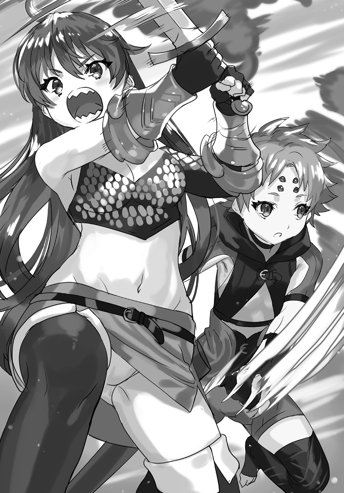
彼女の指から長々と伸びた四本の爪は、一振りごとに犠牲者をきっちり五等分にしていった。
「ふたぁーっつ!!」
「......。ふたつ。」
「みっつーっ!!」
「......。みっつ。」
「よっつーっ!!」
「......。よっつ。」
「いつつーっ!!」
「......。たくさん。」
二人、競いあって、黒騎士をつぎつぎと葬ってゆく。
スケルティアは四から先は「たくさん」になっていた。「算数」も教えないとなー。
アレイダの叫ぶ数が、十を越え、二十に迫ろうとする頃――。
その場において動いている者は、アレイダとスケルティアの二人だけとなっていた。
アレイダのやつは、「あれ？ もうおしまい？」という顔をしている。
「スケさん。何体だった？」
「......。たくさん。」
「それじゃどっちが多かったのか！ わかんないでしょー！」
「......。たくさん。だよ？」
言い合いをしている二人をよそに、俺は、金棒を肩に担いで、〝そいつら〟の前に歩いて行った。
「ば、ばかな......、三七人だぞ？ さ、三七人の黒騎士が......、た、たった二人に......、ば、ばかな......」
騎士団長におかれては、なにか、ショックを受けておられる模様。
相手が悪かったな。うちの娘は、俺が言うのもなんだが、ちょっと鍛えすぎた。
「オリオンー、ぜんぶ殺したわよー？」
「ころした。よ？」
二人が言う。食べ足りない、とでもいう感じに言ってくる。
「あー、じゃあ最後だけはー、やるかー」
俺はぶらりと足を進めた。肩には巨大な金棒を担いでいる。
小悪党を、床の染みへと変えてやるのは、この金棒と決めていた。
この手の連中は――剣の錆にしてやるのさえ、もったいない。
騎士団長と宰相の二人は、腰を抜かしていた。
床に広がる黒い染みは――、小便だな。キタナイな。
金棒を突きつける。
「おまえらをぶっ殺すまえに――なぜ殺されるのか。その罪状を教えてやる」
青くなって震えている二人のクズには、まあ、聞こえちゃいないだろうが――。
俺は続けた。
「おまえらの罪は、三つある。ひとつ。――俺の女に手を出したこと」
「まーたはじまった」
「ふたつ。――俺の女に手を出したこと」
「それ。ひとつめと同じでしょ」
「みっつ。――俺の女に手を出したこと。――以上だ」
「だから全部おんなじじゃない」
「判決。――死ね」
そして俺は金棒を――。
振り下ろそうと思ったのだが――。
それを止める者がいた。
「だめですわ。オリオン様。......その者たちは、我が国の法で裁かせていただきますわ」
王女だった。
三十数人分の人体がバラ撒かれた惨劇の場でも、顔色一つ変えずに歩いてくる。
さすが――俺が自分のものにしたいと思った女。
毒虫とわかっている相手に、国のため、その身を捧げようとしていた女なのだ。死体を見るのは初めてだろうに――まるで臆した様子がない。
後ろについているのはリズか。こちらはさすがに顔色が悪い。記録用の魔導具を手にしているのは、この場の一切を証言するためだろう。
彼女とクザクには、裏で動いてもらって証拠集めをしていてもらっていた。なにをどうやってもひっくり返せないだけの証拠は、すでに集めてある。
「さて宰相閣下。そして騎士団長。......貴方がたお二人を、国家転覆罪で告発します」
王女が、そう宣言した。いつもの優しい声は、そこにはない。
がくがく、ぶるぶる、と、震えていたジジイ二人は、がっくりと首を折って、おとなしくなった。
二人とも連行されて、退場してゆく。
「オリオンさん。やりすぎですよー。これはちょっと正当防衛の線は難しいですよ。過剰防衛になっちゃうかも～......？」
リズが俺にそんなことを言ってくる。
三十数人分のバラバラ死体を、踏まないように足下にひどく気を遣っている。
「え？ そう？」
だって。だって。だってだって。
俺の女に手え出したんだぞ。皆殺しでいいじゃーん。
「犠牲者がいなければ、問題ありませんか？」
「えっ？」
王女が言う。リズが目をぱちくりとする。
「我。無垢なる乙女の声を聞き、求めに応じたまえ――」
王女が神聖呪文を唱え始める。
正確にはあれは魔法ではない。神の奇跡でもない。神官系の職業の使う魔法とは違うものだ。
一切のＭＰを消費せずに奇跡をなすものは、魔法とは呼ばない。
王家。そして王女の連なっている一族は、神の寵愛を受けている。
巫女たる姫君が「おねがい」ないしは「おねだり」をする。すると神はそれを叶えようとする。
それが王家の女性のみに発現する「神の奇跡」の正体である。
どこの神かは知らないが――。あの転生ＪＫ女神の上司とかいうやつかもしれないが――。
「戦いで倒れしこの者たちに、再び、戦う機会を――。仕えし者持つ忠臣に、再び、仕えし機会を――」
だが、さすがに三十数名の蘇生は荷が重いようだ。
床に巨大な魔方陣が生み出されてはいるが、まだ発動までには至らない。
「手伝いましょう」
大賢者が杖をかざす。
自身も蘇生の魔法を行使する。人外の魔力で後押しする。
しかしそれでも発動までには、まだ一歩、及ばない。
一人二人、見捨てていいのであれば、式を起動できるだけの神聖力は集まっているのだが――。
王女と大賢者は、黒騎士の全員を、一〇〇％の確度でもって復活させるつもりのようだ。
確定蘇生は、超高難易度となる。聖女や大賢者でも難しい奇跡だ。
以前、勇者鍋から、ニセ勇者を復元したことがある。ただあのときは「失敗したって、べつにいいや」で試みていた。てゆうか。まさか成功するとは思わなかった。クザクたちが頼むので、しかたなく試しただけだ。
昔の男など生き返らせてやる必要は、これっぽっちもなかったのだが......。断るのも器が小さいと思った。俺の器の大きさを示すために、一度試みて、ごめーん無理だったー、とかいうつもりで、モーリンにやらせてみたら......。
なんと、鍋から蘇生した。
確率はゼロではないにしろ、ゼロに近いぐらい低かったはずなのだが......。本人のあり得ないほどに高いＬＵＫ値のせいだろう。
桃から生まれた選ばれし男は、いまゴブリンに復讐するだけの人生を送っている。
「もう――おねがい聞いてくれないと、縁、切っちゃいますよ？」
王女が、ぼそっとつぶやいた。
その途端、莫大な霊力が天上から滝みたいに降り注ぎ――。
蘇生魔法が発動した。
地面にばらまかれていた三十数名分の人体パーツ。それに床に染みこんでいた血液。
あらゆるものが逆回しとなって、戻ってゆく。
骨が合わさり、筋肉がまといつき、血管と神経とが這い、皮膚が覆って人体が再生される。
四散していた魂が集まり、合わさり、再生済みの体に吞みこまれる。
三十数名......、黒騎士団の面々は、一人も欠けることなく、見事に生還を果たした。
肉体が蘇生したばかりでなく、鎧まで復元されていた。
「ひ――姫っ！」
「疲れたか？」
俺はモーリンに寄り添って、そう言った。
さすがの大賢者も、いまの大魔法のおかげで、足下がふらついている。
「いえ。それほどでも」
一人で立とうとしたモーリンだったが、ふと、表情を変えて――。
「やっぱり肩を貸していただいてよろしいですか？」
「ん。もちろん」
俺にすがって立つモーリンの頭が、こてんと、俺の肩に預けられる。
さて――。これまで眼中になかったが――。
会場には、参列の皆様方がいた。
目の前で行われた殺戮残虐ショーに腰を抜かしていらっしゃったが、全員、復活して――。その奇跡を目の当たりにして、なんでかしらんが、涙を流している。
きっと処理能力を超える出来事が起きて、思考停止状態なのだろう。
黒騎士たちは整列した。王女に剣を捧げ、忠誠を誓う。
彼らは命令に忠実なだけだった。それが軍人というものだ。彼らの忠誠が、本当は誰に捧げられていたのか――。見れば――明らかだった。
「これもすべて皆様のおかげですわ！ 見事！ 王家に仇なす逆賊を討ち取ることができましたわ！」
式の参列者たちは、思考停止状態で、王女の言葉にうんうんとうなずいている。
はい。プロパガンダと洗脳おわり。
「ねー、あっちー？ 生き返ったけどー。もーいっかい、殺していいのー？」
「ころす？ ころす？」
うちの娘たちはアホだった。空気読め。
エピローグ 「わたくしは永遠に貴方様の女です」
「行って......、しまわれるのですね」
夕陽の中。俺たちは別れを惜しんでいた。
憂いを秘めた顔で、王女は俺を見つめる。
その純白のドレスがオレンジに染まっている。
このまま、さらって行きたい衝動に駆られるが......。
いっぺん、手ひどくフラれているので、二度は言わない。
（ねえなんでオリオン。さらっていかないの？ なんで自重してんの？ あれって本当に本物のオリオン？）
うちの娘の失礼なほうが、失礼なことを言っている。
あとでオシオキだ。今晩は厳しくオシオキだ。
「姫さま。いいにおい。」
うちの娘の野生生物のほうは、気に入っているらしい。
こっちはご褒美をやろう。今夜は凄くご褒美だ。
「おまえを残していくのは、正直、気になるが......。ま。大掃除はしておいてやったしな。あといくらか掃除は必要かもしれんが」
腐っていたのは宰相と騎士団長の二人だが、その周辺にも少々腐敗は広がっている。
だがそちらは姫の仕事だろう。五十年がかりの大事業が、数年未満に短縮されているはずだ。
それが――俺が、俺の女にしてやれる、たったひとつのことだった。
「オリオンさま。ご安心ください。どこにおりましても、わたくしが貴方様の女であることは変わりのない真実です」
「ああ......、うん......、その......、まあ......、なんだ......、困ったことがあったら......、俺に言え。俺が駆けつけてきてなんとかしてやる」
「お手を煩わせるようなことはないと思いますわ。だって、嫌われたくないですもの」
王女は、にっこりと花の笑みを浮かべる。
「ねー。ねー。オリオン。オリオン」
「うるさいな。いまいいとこなんだよ。黙ってろ駄犬。――ハウス」
俺はいま、めまぐるしく考えていた。
もうすこし、この王都に逗留していようかなー？
もう一ヶ月近く留まっているが。もう一ヶ月ぐらい、おかわりで――。
「ねー。ねー。オリオン。オリオン」
「うるさいって。駄犬。ハウスしろハウス」
「ねー。空気読んだほうがいいわよー？」
ん？ 空気とな......？
姫は俺の前で微笑みを絶やさずにいる。
「お近くにいらしたときには、またお越しください。――絶対ですよ？」
姫はあの夜、俺に言った。
俺が彼女を連れて逃げたら、彼女は俺をだめにする悪い女になってしまうと。
では、俺が彼女のもとに留まったら......？
俺は彼女をだめにする悪いヒモになってしまうのだろうか。
うん。まあ。そうだな。
だめな〝ヒモ〟になる自信は、かなりあるなっ。
まっしぐらだ。賭けてもいい。
飼ってやったら、アレイダが駄犬になってしまったのと、おなじぐらい確実だな。
わかった――という印に、俺は微笑み返した。
「ああ。......また近くにきたときには、抱いてやる。部屋の窓を開けて待っていろ」
王女に見送られつつ――。
俺たちは馬車に乗った。
御者台に座る俺の隣にやってきたアレイダが――。
「ねえ？ オリオン？ こんど、どこに行くっ？」
俺は、手を持ちあげ、まっすぐに、指し示した。
「この夕陽の沈む方角へ――」
あ と が き
主人公が好き放題やるだけの、けしからんラノベ――。
『自重しない元勇者の強くて楽しいニューゲーム』、二巻をお届けいたします。
主人公があまりにも奔放すぎて、ラノベの規格に、まったく収まりきっていない作品でありますので、いったいどうなることやら――と、出す前には、ひどく心配していたこの作品ですけど。
皆様のところにお届けしてみた結果、どうやら、ご支持を得られたようで――。
ほっと胸を撫で下ろしております。
このシリーズは、皆様のもとに長くお届けすることができそうで、作者として喜んでおります。
ちなみに、売れるかどうかはともかくとして――。
一巻目を出すまえから、わかっていたことが、ひとつだけありました。
それは――。この作品は、合う人と合わない人とが、かっきり、ぱっきり、分かれてしまう作品だということです。
ありあり！ ぜんぜんアリ！ っていう方と――。
ぜってーなし！ ふざけんな！ っていう方と――。
そういう「好き嫌い」のハッキリ分かれる作品であろうと。そのことだけは、わかっていました。
ですから、一巻を出すまえに、編集さんと二人で、もっとも気を遣っていたことは――。
「合わない人」が、間違ってお買い上げになってしまわないようにすることでした。
タイトルだとか。帯だとか。あらすじだとか。もちろん表紙の絵の雰囲気だとか。
あらゆる部分から、これは明るく楽しい「だけ」の作品ですよー！ ストレスフリーで無双する「キモチイイ」だけの作品ですよー！ と、全力で匂わせることに注力しておりました。
その「匂い」を間違いなく伝えるには、どうすればいいのか？ ――と、そこで、頭を絞っておりました。
主人公は善人なんかじゃないですよー。ほーら、こんなに「悪人顔」してますからーっ!!
女の子には片っ端から手を出す、オレオレ主義の身勝手きわまりないヤツですからーっ!!
二巻を手にして頂いた読者諸氏の方々は、きっとたぶん、「合う側」なのだと思います。
当作品は、今後も初志貫徹、方針に変化なしでまいりますので、ご安心ください。
ＲＰＧ系のゲームなどで、クリア後にステータスと装備を引き継いだ二周目プレイが開始できるものが、けっこうありますけど......。あれの二周目プレイなのだということで！ 安心して、愉しんでください！ 今後も自重勇者は楽しい「だけ」でまいります！
「けしからん！ もっとやれ！」という声が聞こえてくるように、今後も、頑張ります！
今後の刊行サイクルは、いちおう予定としましては、四ヶ月サイクルです。『小説家になろう』の連載のほうは、しばらくは、「書籍の締め切りが近づいてくると短期集中連載」になってしまうと思いますが、いずれは、「毎週一本ずつ定期連載」に変えてゆきたいと思っています。
新木は、日々、進化中であります。最近、新木伸ＭＡＲＫ―Ⅳくらいになりました。ＭＡＲＫ―Ⅴまで、あともうちょっとです。
――というあたりで、宣伝です。
新木のダッシュエックス文庫の別作品で、『英雄教室』というシリーズがあるのですが......。こちらは絶賛コミカライズ中であります。岸田こあら氏による、明るく楽しい元勇者のセカンドライフが、『月刊少年ガンガン』にて連載中です。単行本一巻も発売中であります。
なお当作品の自重勇者のほうも、マンガなどでお目にかかれると、いいなー、と思っています。（※注：あくまで作者が個人的に「マンガになるといいなー」と思っているだけです）
なお、その際には、小説では封印してある「朝ちゅんシーン」が解放されたりとかっ!?
「乳首券」ならぬ「朝ちゅん券」がついてくるとかっ!? 少年マンガだとアウトでしょうけど、青年漫画ならありになるかなー。どうかなー？
最後に恒例二次元バーコードです。
著者の『小説家になろう』の個人ページや、アンケートページへはこちら。
「小説家になろう著者ページ」http://mypage.syosetu.com/605697/
「アンケートページ」http://www.araki-shin.com/jicho2.htm
著者紹介
新木 伸 あらき しん
キャラクター小説家。ライトノベル界隈に棲息。
小説家になろう界隈にもよく出没。キャラクターが大好き。
「強くてニューゲーム小説普及委員会」会員番号０００１番。
illustration
卵の黄身 たまごのきみ
お馬さんスーパー大好きイラストレーターです。
よろしくお願いします。
ダッシュエックス文庫DIGITAL
自重しない元勇者の強くて楽しいニューゲーム２
著者 新木 伸
© SHIN ARAKI 2017
２０１７年４月30日発行
この電子書籍は、ダッシュエックス文庫「自重しない元勇者の強くて楽しいニューゲーム２」
２０１７年３月29日発行の第１刷を底本としています。
発行者 鈴木晴彦
発行所 株式会社 集英社
〒１０１－８０５０
東京都千代田区一ツ橋２丁目５番10号
０３－３２３０－６０８０（読者係）
制作所 株式会社ＩＣＥ
本作品の全部または一部を無断で複製、転載、改竄、インターネット上に掲載すること、および有償無償に関わらず、本データを第三者に譲渡することを禁じます。なお個人利用の目的であっても、コピーガードを解除しての複製は、法律で禁じられています。